| プリンセスラバー！ シャルロット＝ヘイゼルリンクの恋路（文庫版） (二次元ゲーム文庫) | |
| 空蝉 | |
| (2013) | |
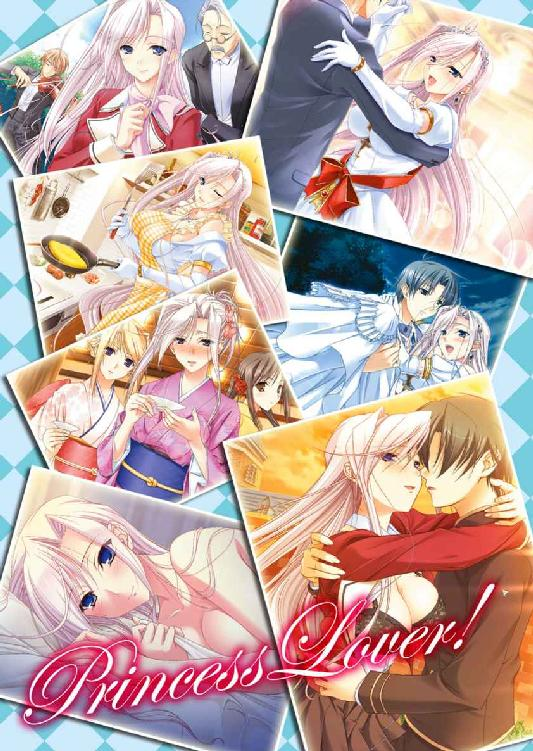
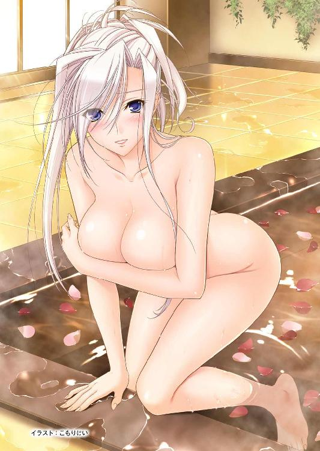
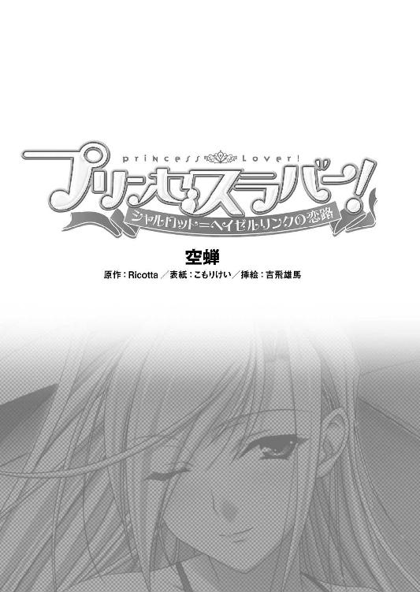
※本作品の全部あるいは一部を無断で複製・転載・配信・送信したり、ホームページ上に転載することを禁止します。本作品の内容を無断で改変、改ざん等行うことも禁止します。また、有償・無償にかかわらず本作品を第三者に譲渡することはできません。
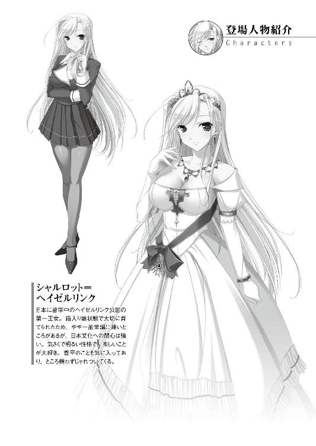
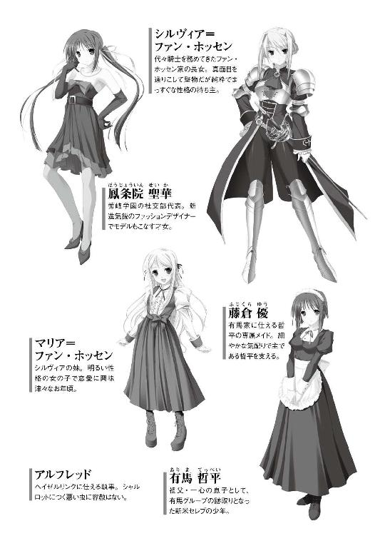
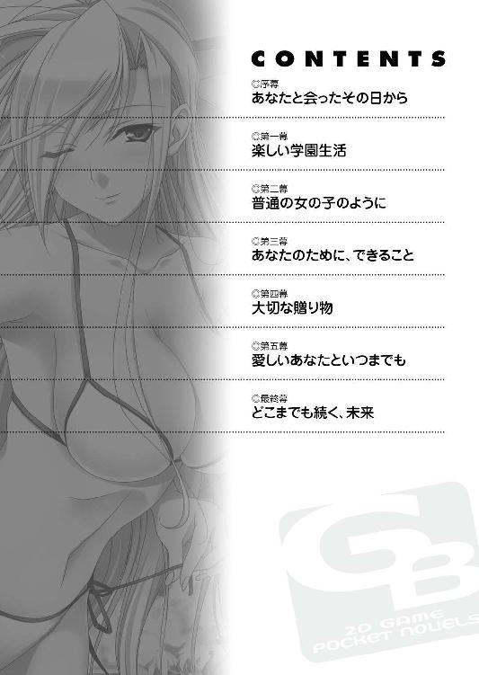
空はどこまでも高くて、雲ひとつない青さで澄み渡っているのに──。
「......はぁ。気が重いなぁ」
人通り少ない郊外の街並をうつむき歩く少年の気は、少しも晴れることがなかった。
『哲平よ、今夜ワシの主催するパーティーがあること、承知しておるな。お主にはある娘......無論、それなりに身分ある者じゃ。その娘のエスコートを任せる』
日本の政財界に名を轟かせる男、有馬一心。壮健にしていまだ衰えぬ彼の重厚な声音を思い出しただけで、憂鬱な気持ちは増していく。
「お爺ちゃん、いつも唐突で勝手なんだから」
反論しようにも眼光鋭く、有無を言わせぬ迫力でいつも押し切られてしまう。有馬一心が孫にして義理の息子でもある我が身。有馬という名の重責と期待とを思い知る瞬間だ。澄み渡った空を見上げ、今日何度目かもわからぬくらい重ねた溜め息を吐き連ねる。
まだ寒風吹きすさぶ初冬の頃合で、吐いた息は真っ白になって天高く昇っていった。
「先月まで庶民だった俺にいきなりお嬢様のエスコートは荷が重すぎるよ......お爺ちゃん」
薄手のコートは羽織ってきたものの、空寒い心持ちを反映してか風が肌に突き刺さるほどに冷たく感じる。足元には祖父が用立ててくれた真新しい革靴ではなく、長年履き古したスニーカー。服などは処分したものの、これだけは手放せずに持ってきてしまった。
亡き両親に買ってもらった、最後の物だったから。
「自分で決めたんだから、頑張らなくっちゃ......な」
両親の突然の事故死、そして初めてあいまみえた祖父との邂逅。目まぐるしく移り変わる状況の中で自らの意思で祖父のそばで暮らすことを選び、有馬の家の後継者としての教育を受けることとなった。そのこと自体を今さら後悔するつもりはなかったし、内心寂しさに溺れていたであろう祖父と打ち解ける努力とて欠かすつもりはない。
（今はまだ......お爺ちゃんに振り回されっぱなしだけど）
いつか、わかり合える日が来るのだと、希望は常に胸の中心に持っていた。
「いつも笑顔で、か」
母がよく口にしていた言葉。辛い時も、笑ってさえいれば苦しくない。息子として、いつも笑顔を絶やさない父母を誇りに育ってきた。祖父のもとで急造セレブとしてあわただしい日々を送るようになった今も、想いは少しも変わらない。
ただ、どこか場違いな自分を意識しながら舞踏会や顔合わせの宴やらに駆り出される毎日に、少しだけ疲れを覚えていたのもまた事実だった。
「......はぁ」
繰り返す溜め息で冷たくなった指先を温めながら、そろそろ帰って準備をしなきゃ、などとぼんやり考えていた──その時。
「......ふふっ♪」
陽の光を浴びて薄桃色にも映る、長く、美しい銀髪。大胆な薄手の黒いブラウスの胸元が、盛大に上下に揺れていた。大きな碧眼がきょろきょろとせわしく周囲を見渡している。なんの変哲もない郊外の街並が、まるで見たこともない景色であるかのように──興味深そうに見つめる青い瞳の美しさに、一瞬で惹き込まれた。
だから、すぐには反応できなくて。
「うわぁ、わぁ......きゃっ」
景色に目を輝かせていた女性のほうも注意散漫だったのか、もろに二人、肩と肩をぶつけてしまう。
むにょんっ。
「んぷっ......や、やぁらかい」
そう、ぶつかったのはつま先から頭のてっぺんまでどこもかしこも柔らかな女性で──ひときわ柔らかく弾力豊かな、大きな大きな丸い膨らみ。彼女の黒ブラウスの胸元へと、けつまずいた拍子に顔をうずめてしまったのを、寒さでかじかむ脳がようやく理解する。
「......って、ご、ごめんなさいっ」
理解してすぐに、急ぎ飛びのいた。
「ひゃぁんっ......」
飛びのいたそばから、前のめりになっていた彼女のほうが今度は倒れ込んできて、結局抱き留める格好になってしまう。
ふわりとなびく髪の毛から、嗅いだこともない甘いにおいが香ってくる。抱いた二の腕も、胸ほどでないにしろ柔らかく、そして温かい。全体的に華奢なくせにたぷたぷ弾む胸は大きくて、抱きつかれた胸板に押し当たる凶悪な柔らかさに卒倒しそうになった。
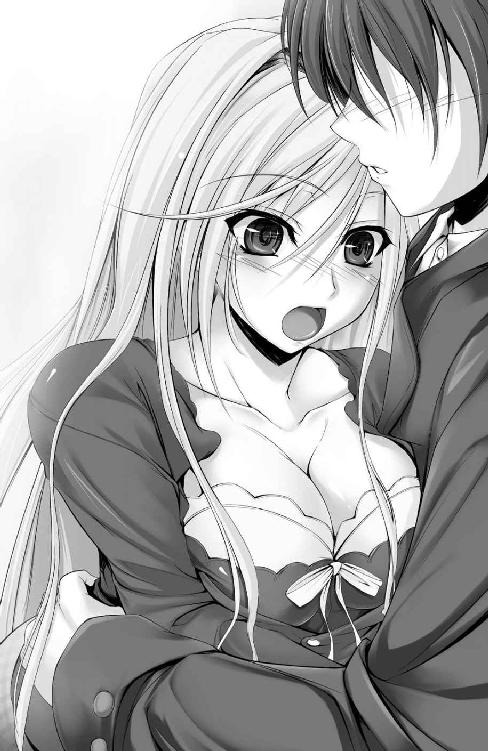
「あ、あのっ......だいじょうぶ、ですか？」
一見して学生の自分よりも年上に見える、大人びた顔立ち。けれど涼しげな瞳は上目遣いにきらめいて、ほんのわずかほころんだ口元は慎ましやかにもじつき、惑っていた。冷たさを感じさせない、あどけない表情が見事に彼女の魅力を引き出している、会って間もないのに、そんな風に直感する。
「え、ええ。だいじょうぶ。ありがとう、抱き留めてくださって」
にこりと微笑んだ顔が、またやたら可愛らしくて──年上の人にそんな印象を抱くのは失礼かと思いつつも、可愛らしい笑顔に釘づけにされた。
「わたし、シャルロットっていうの。ねぇ、よろしかったらあなたのお名前も教えて？ こんな風に出会えたのも、何かの縁かも知れないもの」
横風にそよいだ髪を押さえながら、甘い香りとともに軽やかな、どこか甘えたくなるような柔らかな響きが届けられる。
「ん？ ああ......あり。いや、哲平。哲平です」
苗字を言いよどみ結局言わなかったのは、せっかく気晴らしに出てきたのだから、という思いが強くあったからだ。
「てっぺい......。うん、いいお名前ね。ありがとう、哲平」
「い、いや、こちらこそ」
まぶしい笑顔をありがとう──漏らしかけた台詞のあまりなキザっぷりにあわて、口をつぐむ。ちらと覗き見た彼女、シャルロットはにこやかさを崩さぬまま、くるっと半回転。突然背を向けられて、いよいよよこしまな視線がばれたかと肝を冷やす。
「ねぇ、哲平。ところで、さっきから気になってたのだけれど......あれはなにかしら？」
だから、明るいままの彼女の声が聞けて、正直に安堵した。
「えっと、どれ......って、なんだ、ただの自販機じゃないか」
ほっとしてすぐにシャルロットの肩越しに指さす方向を見つめてみるも、郊外の、店ひとつないような道端だ。視線の先にはなんの変哲もないジュースの自動販売機が立っているだけだった。
「じはん......き？ なにか、オブジェみたいなものかしら？」
「へっ？ い、いやいやいや」
突然なに言い出すんだこのお姉さんは。それが率直な、その時の見解。
「違うの？ じゃあ......わかった。これがうわさに聞く屋台っていう物ねっ」
呆けた少年を前にボケてみせている様子でもなく、まるっきりさっきまでと同じにこやかで無垢な笑顔のまま。明らかな素の状態で自信たっぷりに言われてようやく、彼女の浮世離れっぷりに薄々感づき始める。
（ひょっとして本当に自販機見たことないのか？）
外国って自動販売機なかったんだっけ──いやいやあるはずだ。では、自動販売機のない国の出なのか？
「屋台でもないの？ う～ん、それじゃあ......えっと、フジ、ゲイシャ、ハラキリ......」
絵に描いたような外国人的発言はさておいて。顎先に右手人差し指を添えてちょこんと首を曲げ、考え込む様子が実に愛らしい。できればこのまま見とれっぱなしでいたかったものの、早急に事実を伝えてあげないと収拾がつかない気もして、悩まされる。
「......えっと、ほらここ。コイン投入口にお金を入れてジュースを買う機械、なんだけど」
自動販売機の説明なんて生まれてこのかたしたことがないので、途切れ途切れ、考えながら順を追い、身ぶり手ぶりを交えて教えていく。
「ジュースが？ 素敵！ でも、不思議だわ。どうやって注文したのと同じジュースが出てくるのかしら？ 中に人がいて、お金と交換してくれるとか？ にゅっと手が出てきたりして」
（あぁ、これが......）
これがいわゆる世間知らずの極致。漫画なんかでよく見る箱入りお嬢様というやつなのだと一人納得。そしてすぐに彼女を一人で歩かせる危険に思い至った。
きょろきょろと目移りしながら歩く外国の令嬢だなんて出来過ぎだ。しかもとびっきりの美人でナイスバディ。おまけに底抜けのお人よしっぽさが見た目からにじみ出ているときたもんだ。
ナンパ、誘拐。でないにしても迷子になったり、車にひかれたりする可能性が常人の比ではない──気がしてならない。
「ねぇ哲平、どうやってお買い物するの、ねぇったら」
「あの......よかったら、ご迷惑じゃなければだけど。道......案内しようか」
これでは自分がまるでナンパしてるみたいじゃないか、などと思いながら。危なっかしい彼女を放っておく気にもなれずに、思いきって案内を申し出てみる。
「本当？ ありがとう、哲平！」
むぎゅぅっと抱きついたシャルロットの胸の弾力が目一杯二の腕に伝わってきて、右手を取られ腕を組まされていたことにまで、すぐには気が回らない。
「でも、その前に自販機の使い方を教えてね？」
「お、おわぁ......っと」
ふっと腕を引かれて、ようやく意識がそちらに向く。にっこりと笑った彼女の笑顔と、柔らかな所作に見惚れながら。少年は寒空を照らす太陽を、この日初めて、照れ隠しから見上げるのだった──。
いつかは一人で、自分が住む街を歩いてみたいと思っていた。お気に入りのブラウスと靴。お気に入りの香水をまぶして自然体で歩く。執事の目を盗んでようやく訪れた機会を楽しみたいと思っていた時に、彼が現れたのだ。
「哲平」と、整った顔立ちの少年は名を教えてくれた。
（少し、戸惑っちゃった）
銀髪をなびかせ、独りごちる。どこへ行っても、誰に会っても相手のほうが先に名を名乗ってくれたのは、こちらから名乗らなくてもみんながすでに知っていたから。自身の名を知らぬ相手に出会ったのは、初めてで──言いようのない嬉しさに包まれた。
最初からヘイゼルリンクという家柄で判断されることなく、ただのシャルロット、どこにでもいる娘として見てもらえる。そう、思ったからだ。
「あち、あちっ」
親切に道案内まで買って出てくれた彼は、今しがた不思議な機器から買って出した缶の飲み物をふたつ持ち、やたら熱いのかしきりにお手玉している。前をちょうど半歩分先に行く背中は最初の印象よりも広く、おおらかで、寒そうに身を縮こまらせて歩く様が妙に可愛らしい。
（優しいんだ）
後ろを歩くこちらに歩調を合わせて、ゆっくりと歩いてくれている。背中にぶつかりそうになるとあわてて飛びのこうとする。でも、腕を組んでいるせいで逃れられず、彼はぎくしゃくと身を強張らせるのだ。
初々しい反応が新鮮で、洗練された振る舞いでなくとも素朴な優しさを感じさせる。そんな少年の雰囲気が、たまらなく好ましく思えてしまう。
「え、えぇっと......で、どこか行きたいところとか、あるのかな？」
問われて初めて、目的のない散策であったことに気づかされた。自分の脚で、目で街を感じたい。通学に使う馬車の窓から見る景色とも、家の窓から見る景色とも違う、町の素顔を見てみたい。でもそれをうまく、事情を隠して相手に伝える言葉が見つからなくて。
「う～ん、特にどこへ行きたいってわけじゃないの。綺麗な街並を見たいなぁって」
そう答えると少し困った顔をしてから、彼が言う。
「じゃあ......公園のベンチにでも座りながら、見るっていうのはどうかな？ 夕日がきれいに見える場所、知ってる......んだけど」
せっかく買ったコーヒーもあるし、と握ったふたつの缶コーヒーを見せてくれた。
「うん！ そうしましょう。うふふっ」
わくわくしている。胸の奥がトクトクと高鳴っているのを実感した。初めて一人で歩いた街先で、初めて出会った少年と一緒に歩き、また初めての経験をしようとしている。哲平と一緒なら、まだいくらでも初めてを経験できそうな気がして──わくわくとドキドキが止まらなくなった。
たっぷりと時間をかけ、あたりを見渡しながらたどり着いた公園は、ほんのり朱色化粧。ちょうど夕焼け空が見ごろな時間帯だ。
「こっち......お、ちょうど空いてるみたいだ」
手を引く彼のぬくもりに引き寄せられるように、目的のベンチへと座る。腰かける前にささっとベンチの上に積もる落ち葉なんかを取り払ってくれた、何気ない仕草が好ましく、照れたみたいなあどけない表情がとても愛らしい人。彼は隣に座る際も距離感を量りかねていて、少し離れた位置に腰かけようとする。
「......えいっ」
つい愛でてみたくなって──夕暮れの静寂に、人肌恋しかったせいもあり、彼の設けた隙間をこちらから詰めてしまう。ベンチの隅っこのほうに二人くっつき腰かける、はたから見ればきっと少し妙な光景なのに違いなかった。
「え、あ、あのっ」
「くっついていたほうが、あったかいわ......ほら。ね？」
ぴったり寄り添う肩は心地よい温みで、心安らがせてくれる。あわてた様子の彼の手から渡された缶コーヒーもまた、景色を見ながら歩いてきたせいもあって、ちょうどいいあんばい。かじかんでいた指先が温まっていく感覚が、とても喜ばしく思えたのは──きっと、一人ではないからだ。
「ん、しょ......この取っ手みたいなところを引っ張ればいいのかしら」
「ああ。それはこうして......」
悪戦苦闘する姿を見かねてか、彼がお手本を示すみたいに缶のふたを開けてみせてくれる。照れたみたいに鼻の頭を掻きながらそっぽ向いているのが、やっぱり愛らしい。
お手本通りに開けて傾けた缶コーヒーは豆のにおいも何もしなかったけれど、ほんのりと甘く、喉元から胃に染み、身体の芯から温めてくれた。
「んく。なんだかとってもぽかぽかして楽しい気分」
「一本百二十円のコーヒーだけどね。でも寒い時に飲むと妙に美味しく感じるんだよね」
ぺろっと舌を出して恥ずかしそうに笑う。はにかんだ顔がとても好ましく見えて、つい身を乗り出し、じっと見入ってしまう。
「うん。でもぽかぽか気分になれたのは、きっと哲平と一緒にいるからよ。......哲平、ありがとう」
彼がこちらの素性を知らないせいもあっただろう。いつも以上に素直な気持ちで接して、彼の素直な心を知るにつれて、隠し事することすら意味のないことに思えてくる。
「わぁ......きれいな、空ね」
朱色の陽ざしに魅せられて空を見上げ、徐々に染まりゆく景色を瞳に焼きつけていく。きっと今日抜け出したことで、今後はまた皆の警護が強まるだろうから、最後のつもりで見る物すべてを記憶にとどめておくつもりだった。
「うん。ほんと......見てるだけで和むっていうか、ちっぽけな悩みとかどうでもよくなってくるっていうか」
一瞬自嘲めいた笑みを浮かべた彼の顔が、ひどく寂しそうに見えて。無性にそうしたいと感じた心の命ずるがまま、押し当てた肩先をいっそうぴったりとくっつけ、身を寄せる。
（はしたないって、思われないかしら。でも、なんだか......）
運命めいたものを感じる彼と、昔見た映画のように「ひとときの休日」を心行くまで楽しみたいという想いが、恥じらいを押し隠させた。
「こんな夕日をまたいつか、二人で見たいわ」
「暇な時は俺も公園に来るし。またいつでも会えるよ」
もうすぐ休日は終わり、プリンセスとして──ヘイゼルリンクの姫としての日常に戻らなくてはならないとしても、今だけは。今だけは、この幸せで素朴なひとときを大切にしたい。
ただ、時の過ぎゆくのに合わせて二人。流麗な音楽もなければ、手を取り踊る着飾った紳士淑女もいない。静寂が支配する穏やかな時間を、過ごす。朱色の空を見上げ、少し寂しい心持ちを缶コーヒーのぬくもりで癒やしながら、啜った缶の中身が減るにつれ、別れの予感が脳裏をよぎる。
また会えると、彼は言った。運命的な出会いだと、信じていたかった。けれど、時は無情に去り、やがて手を振り別れてしまう。
もう、会うことは叶わないかもしれない。仮に馬車に乗るこの身を見つけてもらったとしても、今日のように「お姫様ではない、ただのシャルロット」として接しては、もらえない。刹那の想い出にするのが一番いいのだ、と──そう、思っていた。
同日夜半、日本経済界のドン、有馬一心主催のパーティーで、見知った背中と再会するまでは。
「てっ......ぺい？」
見慣れた顔触れの並ぶ宴の席の日常ぶりに安堵しつつも、彼と一緒に見た夕焼けの朱空を、忘れられずにいた。ちょうど、そんな時に温かな彼の背中を見つけ、愛しさが吹き荒れる。我慢などできるはずもなく、周りの目を、自らの立場を忘れて抱きついてしまう。驚いた、彼の顔。愛らしい表情を見たいがため──。
「シャ、シャルロット!?」
祖父の開催した宴席で、思いもかけず彼女と再会した。
「おや、二人とももう知り合っていたのか。はは、これは橋渡し役を買って出た私の出る幕はないかな」
ひげを蓄えた長身の紳士、ヴィンセント＝ファン・ホッセン卿がタキシードに包まれた身を反らし、ワイン片手に朗らかに笑う。まだ宴席に不慣れな身を気遣い付き添ってくれていた彼の所作は一つ一つが洗練されていて、見事な立ち居振る舞いは生まれながらの貴族であることを強く印象付けている。
けれどそれよりも彼の向かいに立つ、純白ドレスのプリンセスへと意識は惹かれ。
「てっ......ぺぇぇ～っ！」
むぎゅぅぅぅっ！
彼女の弾力豊かなふたつの膨らみに抱きつかれるに至って、喜びは最高潮に達する。
「ちょ、ちょっとシャ、シャルっ......!?」
「ええ、そうよ......また、会えたわね、哲平っ」
「ふむ、若いってことは、それだけで大きな資産だね」
くいっとワインをあおりながら、ファン・ホッセン卿が微笑んだ。
「うふふふっ哲平哲平てっぺぇぇ～」
正直、もう会えないかもなんて思っていたから。予想外の再会の嬉しさが、今いる場所が社交界の中枢だなどということまできれいさっぱり忘れさせる。着慣れない燕尾服の居心地の悪さもあっさりと忘れ、抱き留めた令嬢の柔らかさと温かさに浸っていく。
「──哲平よ」
ひとときの至福を吹き飛ばすように祖父の重厚なる声が届き、重たく持ち上がるその口から、腕の中の令嬢の素性を、ヘイゼルリンク公国の姫君だと知らされても。
幸せな時間は再び時を刻み始め、もう止められない。ずっと、ずっとこんな日々が続くことを、信じていた──。
師走の寒空が晴れ渡っている。
「う～、さぶさぶっ」
送迎の自家用車から降りるなり吹きすさぶ寒風。その予想外の冷たさに首に巻いたマフラーをいっそうきつく締めて、少年──有馬哲平が身震いした。
「よろしければ私の......」
遅れて降りてきた黒髪おかっぱの少女が自分のはめている毛糸の手袋を奇特にも貸してくれようとする。おそらくお手製なのだろう手袋はとても温かそうで借りたいのはやまやまだったけれど、寒そうに色白の小さな手を擦っている女の子から奪うなんて、できるわけもない。
「さすがに優さんの手袋を奪うわけにはいかないよ。だいじょうぶ......そもそも俺が寝坊して身支度を適当に済ませちゃったのが原因だし」
やんわりと断って過ぎたる献身に苦笑いを浮かべるも、少女は申し訳なさげにうつむいてしまった。あるじの身支度はメイドの務め。あるじの不注意に気づかなかったのも、専属メイドである自らの責任だなどと、きっと自責の念に駆られているのだろう。
常に半歩後ろを歩く自身の専属メイドが暗く沈んでいるのを見ると、哲平の胸にまで申し訳なさが募ってくる。
同じ学園に通うクラスメイトでもある彼女──藤倉優の気持ちを少しでも和らげようと微笑みを交わし、ほんの少し少女の黒髪に隠れた頬が赤らんでくれたのを見て、ひと安心。
（優さん、少し思いつめるところあるからなぁ）
けれど、そもそもは我が身の些細な不注意が原因だ。彼女に心配をかけないで済む男にならないと、と痛切に思う。
「哲平様、ヘイゼルリンク様がお出でです」
寒空に決意を固めていたあるじの背に、馬の嘶きを耳ざとく聞きつけた優が報告をくれる。振り向き見れば、正門前。今しがたまで有馬家所有のリムジンが横づけしていたあたりに、二頭の白馬に引かれた、絢爛豪華な馬車の姿があった。
「えっ......あ、ほんとだ。おーいシャル～」
迷うことなく手を振って、こちらの位置を知らせる。良家の子女が通うここ、秀峰学園においても特に、おたがい名の知れた者同士。騒ぎになってもまずいと以前、声をかけずに立ち去ったのを咎められ、『朝は必ず一緒に登校するの！ 約束よ』と誓わされて以来、先に来たほうがこうして手を振ることが日課となってしまった。
気軽に一国の姫君に声をかけるなんて恐れ多いと最初は畏まったものだが、シャルロットの人となりを知るにつれてよそよそしさは霧散し、今では、初めて郊外で会った時のようなぎこちなさを覚えることも......まったくないとまでは言い切れないけれど、滅多になくなっている。
（それでも......やっぱり顔を合わせるとドキドキしちゃうんだよな......）
学園で偶然に再会してからずっと、その気持ちにだけは変わりがなかった。
「あ！ 哲平～♪」
向こうからも探してくれていたのだろう。早々とこちらに気づいてくれて、馬車からいそいそと降りてくる。なんら翳りのない満面の笑顔が昨日と同じように、眩しく映った。
「お嬢様。あわてられずに......お手を」
「ありがとう、じいや」
燕尾服に身を包んだ初老の、やたら体格のいい紳士の手を借りて、ゆるりと滑るように馬車を降りた瞬間。シャルロットの、制服をはち切れんばかりに押し上げている両胸が、元気よくぶるんと弾む。
「あなたたちも御苦労さま。タラちゃん、イクラちゃん」
「ぶるるるぅぅっ」
首筋を軽くなでられた白馬二頭が、なんだか抗議するみたく唸ってみせた。
（また名前変えたんだ......今度は魚関係シリーズかな？）
毎日会うたびに名の変わる名馬の顔を拝んでいると、馬車の脇に控えている老紳士と目が合ってしまう。
「むッ」
老紳士の眼鏡の奥の眼光が鋭く突き刺さって痛いくらいだけれど、あえて気づかなかったふりで押し通す。
「それじゃ行くわね、アルフ。哲平～、おはよう」
アルフと呼ばれた老紳士が馬車を連れてしぶしぶ──表向きは平静を装って引き下がり、代わりに一面大輪の薔薇が咲いたみたいな華やかさを纏って、銀髪の淑女が小走りに駆け寄ってくる。
「......では、私は先に教室のほうへと向かわせていただきます」
これも毎度のこと、気を利かせた優は一人先に校舎のほうへと歩を進めていく。身分の高い相手にはつい敬語で話してしまう彼女のこと。気さくなシャルロットに逆に気を遣わせてしまっては、という思いもあるのだろう。
「優さん、また先に行ってしまったの？ 残念。優さんとももっといっぱいお話したいことあったのに～」
少し残念そうに頬膨らませてみせる彼女には、たぶんメイド少女の気苦労などは知る由もなく。それはきっと立場の違いだけでなく、天性の明るさで他人を和ませることのできるシャルロットと、他人を気遣い、世話することを生業とする優との性格の違いが大きい。そんな気がする。
「それじゃあ哲平。改めまして、おはようございます♪ 今日も、とってもいいお天気ね」
優雅に、今にもスカートの裾をつまんで踊り出しそうな雰囲気を纏い、淑女が微笑む。
「おはよう、シャル。うん、少し寒いけどね」
シャルロットさん、ではなくシャルと愛称で呼ぶようになって、そろそろひと月半。初めてそう呼んだのは、あの日。郊外で別れて、夜のパーティーで思いがけぬ再会を果たした、あの夜のことだった。
「あの時は......結局シャルをエスコートするどころか、逆にこっちが会場内をエスコートされて歩き回ったようなもんだったな」
日中見せた危うさが嘘のように、シャルロットは優雅な振る舞いで社交場を巡り、会う人会う人から恭しくあいさつされて、そのたびにまばゆい笑顔で応じてみせる。生まれながらの王族としてにじみ出る立ち居振る舞いはファン・ホッセン卿はおろか、宴の夜に出会った誰よりも洗練されていて──急ごしらえの自分との差をはっきりと少年の心に刻みつけていった。
「初めて会った日の夜のこと？ でも昼間は立派にわたしをエスコートしてくれたわ。だから、哲平は立派にお爺様の言いつけを果たしたってことになるの。......ねっ？」
むんっと握った拳を胸元に構えて気合注入のポーズを取る。その際に激しく揺れた爆乳に、衆目の視線が遠巻きながら集まっていることにシャルロットは気づいているだろうか。
（気づいて......ないんだろうな。でも......）
出会った時の印象は「放っておけない箱入り娘」だった。再会して、意識せずとも生まれながらの上流階級として振る舞える彼女に劣等感を抱き、そして今は、彼女の明るさに助けられ、親しみまで覚えてしまっているのだから、不思議なものだ。
思えば、学園で最初に仲良くなったのもシャルロットで、きっかけも彼女のほうから話しかけてきてくれたことだった。上級生であるシャルロットが二年生の教室にまでわざわざ足を運んでくれて、
「だ～れだ？」
（そう、こんな風に......って）
まさに現状と同じように、転校初日で無駄に緊張しまくっていた心を解きほぐし、悪びれない無垢な微笑でもって、肩の力まで抜いてくれた。
「シャル。いくらなんでも声でわかるし、それに、その」
背中に当たる弾力×２のゆさゆさとあり得ないくらいの柔らかさ、手に絶対余るであろう大きさ──で丸わかりだ。
「え？ なぁに哲平」
本気で気づいていないのか、聞き耳立てようとよりグイグイ押しつけられる弾力のなんと甘美なことか。思春期の男子にとっては抗いがたい強烈さだ。
「......こほん」
もしも首尾よくその咳が耳朶に飛び込んでこなかったら、往来を前屈みで歩くはめになったことだろう。
「あ！ シルヴィアおはよう～」
咳のぬしにいち早く気づいたシャルロットが、親友でもある相手へと大きく手を振って、ようやく──少年の股間が我慢の限界を迎える一歩手前でようやく離れてくれた。
「シャルロット殿、おはようございます。......有馬殿も、おはよう」
毅然とした色合いを濃くにじませた声音のぬし。ぴんと伸びた背筋や凛々しく引き締められた太めの眉からも性格のうかがえる彼女の名は、シルヴィア＝ファン・ホッセン。東欧の小国フィルミッシュ公国の筆頭貴族令嬢にして、代々続く騎士の家系を第一の誇りとする、勇ましき女騎士である。
「お、おはよ、シルヴィ」
ファン・ホッセン卿──彼女の父であるヴィンセントのお茶目な顔が一瞬浮かんでしまい苦笑をこぼし、背中から離れていったシャルロットの体温を名残惜しみつつ、あわてて体裁を整えあいさつを交わす。
「往来で誤解を招くような行動は、控えられたほうがよいかと思いますよ」
じろり、と睨まれたのは抱きつかれ当惑するばかりだった少年の側だった。
「......？ 哲平ったら、なにかシルヴィアに怒られるようなこと、した？」
この学園に通う誰よりも長い付き合い、それこそ幼少のころから親交のあるシャルロット相手に言って聞かせたところで無駄だと熟知しているからこそのシルヴィアなりの忠言。
まがりなりにも双方から愛称で呼ぶことを許された身としては、実直な女騎士殿の意図を汲み取り、素直に忠告を受け入れるのみだ。
「はは。それじゃ、急ごう。もうすぐ予鈴鳴っちゃう時間だし」
「む。そうか。......今朝はマリアが珍しくじゃれついてきたからな......」
それで、いつも早い時間に登校するシルヴィアとばったり出くわしたのかと合点する。この場にはいない彼女の妹、マリア＝ファン・ホッセン。聖母の名を冠した少女のもたらした偶然に、感謝。
「哲平ったら、とっても嬉しそう。うふふっ。それじゃあ今日も、きっと楽しい一日になるわね──」
のんびりと校門を振り返ったシャルロットの銀髪が、梳いた指先を流れるように滑り落ち、横風に煽られてざぁっとなびいた。
かつての生活と一変した、騒がしくも楽しい、仲間たちとの日々が今日も始まる。
キーン、コーン、カーンコーン......。
昼休みを告げるチャイム音が鳴り響く。庶民の学校であろうと、良家の子女が通う学園であろうと、ベルの音までは大差ない。
「さぁ有馬さん、お昼ですよ。それではいつものようにこの、根津晴彦と！ 男同士、親交を思う存分に温め合いましょう、さぁ！」
授業終了と同時にハイテンション丸出しで駆け寄ってきた彼は──自称・親友。大仰な言い方をしているが、要約すれば「一緒に購買へ買い出しに行こうぜ～」と、この程度の内容だ。
「ん。それじゃ行こうか」
「はぁいっ！ 不肖この根津！ 晴彦が！ お伴を見事務めてご覧にいれましょう！」
（悪い人じゃ、ないんだけど......ねぇ）
妙に張り切りまくった態度が衆目を集めているかと思いきや、慣れたものでクラスメイトは皆気づかなかったふりをしてくれている。その中に、一人静かに手製の弁当に箸を伸ばす、黒髪おかっぱ少女の姿もあった。
（優さんのお弁当、いつもうまそうなんだよな。一緒に俺のも作って......ってのはさすがに甘えすぎか）
第一、優自身が「メイドと主人が同じ食事なんて」「お願いですから自覚を持たれてくださいませ」などと言って固辞するのが目に見えている。彼女の困った顔は愛らしくて一見の価値があるけれど、わざわざ困らせて喜ぶほど悪趣味ではない。
結局、仕方なしに今日も根津君と肩を並べて、購買部のパンを競い合って買うはめになる──はずだったのだが。
「哲平～、一緒にパンを買いに行きましょう？」
ひょっこりと、いつも通り前触れもなく現れた銀髪の令嬢が、いつも通りのにこやかな笑顔で、いつも以上に突拍子もない台詞を聞かせてくれる。
「おぉ！ これはヘイゼルリンク様。我々とご一緒してくださるとは、光栄です」
「えっと......哲平のお友達かしら？ 初めまして、シャルロット＝ヘイゼルリンクです♪ 哲平と、仲良くしてあげてね？」
「ぬぁっ......！ ま、またしても初対面のごとき応対。なぜだ、なぜなのですかあぁっ」
そして毎度の通りに、まったく同じやり取りが繰り返される。同じ部に所属する根津君の名と顔がどうにも記憶の網にかかりにくいのか、シャルロットは彼の悲嘆の理由がわからずに不思議そうな顔をして首をひねるばかり。
「......頂に咲き誇る薔薇は、路傍の石に気を留めたりしないものです」
その後に続く根津君の嘆きから、ぽそりと、しかし声質のせいでよく響いた女生徒の痛烈なひとことまでが、毎度毎日のお約束の流れだった。
「かかかかか金子さんっ。どういう、どういう意味ですぅっ!?」
憤慨した様子で、けれどどこか及び腰で迫る根津君に対し、迫られた美少女のほうは涼しい顔をさらに涼しくすまして、振り向きもしない。長く美しい髪を窓から差し込む陽光に照らして、黙っていれば深窓の令嬢で通るだろうあどけない美貌を皮肉たっぷりに歪める。学年一の才媛であり、生徒たちの憧れの的である社交部に咲き誇る、棘たっぷりの薔薇の花。金子綾乃は今日もクールに毒舌絶好調のご様子だ。
「あらあら。なんだかお取りこみ中みたいだから、行きましょっか哲平」
「へ？ あ、あぁ。うん」
つい即答してしまってすぐに、重要な事柄を聞きそびれていたことに気づく。
「えっと、シャル？ ちょっと、確認いいかな。確かシャルは毎日屋上で、ヘイゼルリンク家御用達のシェフが作ってくれたランチを食べてるはずじゃ」
「ええ。でも、哲平とどうしても一度一緒にパンを買いに行きたくて、今日はお願いして帰ってもらっちゃった」
その代わりに、ディナーは豪勢に腕をふるってもらう約束をした、などとあっけらかんと彼女は告げてくれる。
（帰ってもらっちゃった、って。も、もったいない）
一度ありがたくもご相伴にあずかり、その極上なる味わいを知っている身としては、ただただもったいないという思いが募るばかりだ。
「一度、一緒に手をつないで廊下を歩いて、哲平がいつも食べてる物を一緒に買って......他のみなさんがしてるのと同じように、過ごしてみたかったの」
国を代表する王族としてではなく普通の生徒のように振る舞いたいと願う気持ちは、どうにかセレブ生活に溶け込もうと足掻く自分のそれと、方向こそ違えど同じだったから。
「......うん。それじゃ、行こっか。急がないと、人気のパンが売り切れちゃう」
愛らしい人の申し出を快く了解し、手を差し出す。
「エスコート、よろしくね哲平」
（あぁ、やっぱり......いいなぁ）
見つめられるだけでウキウキ気分が止まらなくなる。なにせ、大輪の花が咲くようにほころんだプリンセススマイルを今、独り占めできているのだ。
差し出されたシャルロットの白魚みたいな細指に触れようと、密かに胸高鳴らせながらさらに手を伸ばし──。
「ふんッ！」
べちぃッ──と乾いた音とともに鋭い痛みが手のひらに走り抜ける。
「いっ......つ、今度はなんだ!? ......あ」
「汚い手でお嬢様に触れるでないわ、ぜ、ぜはっ......小僧っ」
視線を横に向ければ、息を切らせた初老の紳士が一人。いつの間に教室にまで来たのか、いかつい肩をよけいに怒らせて威嚇しつつ最接近。さらには獲物を射殺す勢いのまなざしで鋭く睨みつけてきた。
本当に、次から次へと、強烈個性の持ち主に囲まれて、息つく暇もないこのせわしき状況も、有馬哲平として生きる日々の日常の一部へと、着実に馴染み始めていた。
（単に、慣れたってだけかもだけど）
「もう、じいやったら。哲平に失礼でしょう」
「ぜっ、ぜぇ......すぅぅっ。......し、しかしお嬢様。この者は一度お嬢様をかどわかした前科がございますゆえ」
目を合わすなり、ずいぶんと人聞きの悪いことを言ってくださる。老人らしからぬ怪力でもって手刀を振り落とされた手のひらをさすりさすり。まずはいわれなき誹謗に抗議すべく少年が口を開きかけたところで、隣から少々むくれた調子の声音が響いた。
「じいや。何度も言ったでしょう？ 哲平は、街で迷子になっていたわたしを見つけてくれて、親切に案内までしてくれたのよ」
（ん、その通り）
そう、しかめツラの執事殿がまくし立てていたのは、例の「シャルが執事さんの目を盗んで街をふらふら歩いちゃった」時のことであって、かどわかしたりといった犯罪行為があったわけでもなんでもない。
ただ、ほんのちょっと──いや相当なレベルの過保護主義者である執事殿にとっては、
『お嬢様がそのようなことを考えられるはずがないわ！ どうせあの、こわっぱめが悪魔のごときささやきでお嬢様の御心を惑わせたのに決まっておる！ かーっ！』
と、こうなるわけで。
「......それに、哲平にだったら、無理矢理にじゃなくて、わたしの意思でついていくもの」
ぽっと頬など染めて本気か冗談かシャルロットがよけいなひとことを付け足したものだから、すでに誤解に誤解を重ねていた老紳士の胸の火に、たっぷり油を注ぐ結果となる。
「こ、こ......こぉっ......小僧ォォォォォ!!」
少々ずれた眼鏡の奥で、執事アルフの瞳にまごうことなき殺気が揺らめく。
「シャルっ、い、急ごう！ 執事さん、それじゃ......またっ」
「きゃんっ、て、哲平？」
老紳士の視線は本当に人を刺し貫かんとする勢いで、ぐっと握り締められた拳を今にも振り落とされかねない。そんな予感が背筋を駆けたので──逃げるが勝ち。購買パンが売り切れないうちにさっさとアルフをまいてしまうことにする。
「待て！ 待たんか小僧ぉぉッ！ お嬢様を放せ────―っ！」
手をつないだまま逃げていては、年に不釣り合いな健脚を見せ迫ってくる執事に、あっさりと追いつかれかねない。そう考えた上での、とっさの判断だった。
あわてて手に手を取り合って、シャルロットを引っ張る形で廊下に出、追いつかれぬようつないだ手ごと抱き寄せ、膝裏と腋下に通した腕の力で持ち上げてしまう。奇しくも、本物のプリンセスを「お姫様抱っこ」する形での逃走に、すれ違う生徒の視線がことごとく集中。
抱きかかえられた当のシャルロットは、恥ずかしがるでもなく、はにかむみたいな珍しい表情を浮かべ、大人しく腕の中に収まっている。
「ごめん、シャルっ。大ごとになっちゃったみたいだ......っ」
「え、えぇ......でも。うぅんっ、とても......楽しいわ！」
「えっ？」
走りながら、弾む呼気にまぎれての会話は聞き取りづらく、おうむ返しにたずねてしまう。吐息にまぎれていたにしても嬉しげに弾む彼女の声音に聞き惚れ目を落とした先で、今までで一番の笑顔に出会った。
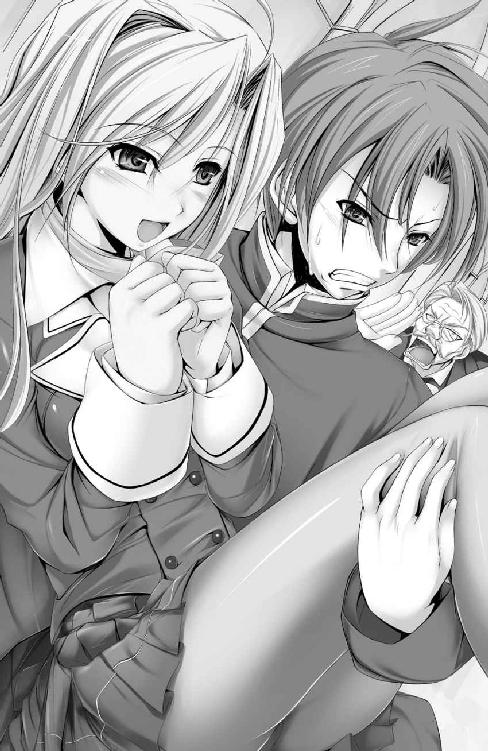
「小さいころによく聞かせてもらった、おとぎ話に似てるの。王子様が、囚われのお姫様を救いに来て、さらってしまうお話......」
動揺が収まるにつれてまるで遠足前日の子供のように目を輝かせ、身を内から突き破らんばかりのワクワクに、大きな二つの胸をときめかせる。
「は、ははっ......それじゃ執事さんはお姫様を取り戻そうとする、悪の手先なんだ」
「それは、じいやに悪い気がするけれど......ふふっ。でも、そうね」
無邪気な少女の姿につられて、哲平も子供に戻った気分で追いかけっこに胸弾ませた。鬼から逃げるために幼い脳をフル回転させた、かつての想い出が昂奮とともに蘇ってくる。
（でも確かに、これじゃ誘拐に見えないこともないかも）
などと思いながらも、抱えた腕に触れる横乳、もとい腋下と引き締まった腰の柔らかな質感、予想外にずしりと腕にくる重み（たぶん胸に大きな膨らみが二個もついているせいだ）を存分に味わいながら、駆け抜ける。
「ひゃっ......」
「う、はぁ......っ!?」
がくんっ──。プリンセスを支える腕が情けなく震え、不安定に晒された彼女がぎゅっと胸板に身を寄せる。重心が崩れたためにさらに負担の増した、哲平の両腕が気だるい疲労を訴える。
腕の中の姫君の夢見る瞳と揺れ弾む胸に宿った期待に応えたくて、疲れも忘れてトップギアで駆け続けた結果、早くも身体に限界の兆しが見え始めていた。
「て、哲平、だ、だいじょうぶ？ 腕がぷるぷるして、息も荒......やぁんっ」
「だ、だいじょう、ぶっ......っはぁっ！ ......ごめんっ」
休みなしの全速力稼働を強いられ、急激に酷使された心臓がうるさいくらいに鳴り響いていた。堪えきれず漏れた吐息がシャルロットの前髪をくすぐる。むずがるみたいに縮こまった彼女の髪を掻き上げるちょっとした仕草に見惚れそうになり、
「待たんか小僧ォォォ────―ッッ!! 不埒な手で、お嬢様にっ、ぜはっ！ ふ、触れるでないわァァァァァ!!」
「ひぃっ！」
背後十メートルほどに迫り来る、怒髪天を衝いた老紳士の鬼のごとき形相に、恐怖した。
「じ、じいや、無理をしないでっ......」
いつもはきっちりとなでつけられている髪を乱し、口ひげにまで汗を垂らして追ってくる。歯を食い縛ってまるで呪詛のような低さで、そのくせ大音声で吐き紡がれる怒声の恐怖。心臓をわしづかみにされたみたいな拠りどころなき不安と、激しくなる鼓動に合わせて一足飛びに跳ね上がり続けた焦燥は、駆ける脚をいっそう酷使させる。
（立ち止まったら、やばい。なにがどうなるか具体的にはわかんないけど、とにかくやばいっ！ 振り向くなっあの鬼の形相を見ちゃダメだ見ちゃダメだぁぁっ）
痙攣しそうな脚に鞭打って、さらなる猛ダッシュ。階下へと続く階段に躍り出て、一気に、飛ぶように駆け降りていく。
「や、やんっ。哲平もっ、無理しないでっ」
「ぜはっ......と言われて、もっ......捕まったら殺されるうううぅぅぅ！」
振動が怖いのかぎゅっとしがみついてきたシャルロットの肢体のフォルムが、もやもやと脳裏に浮かんでは消える。胸板に押し当てられた、ぷにぷに魅惑のエアバッグ。彼女の豊かすぎる胸の膨らみ。その押し潰れてなお柔らかに弾む極上の感触に意識を根こそぎ持っていかれそうになるのを、断腸の思いでぐっと堪え、走る。駆け降りては荒く息を吸い、また駆けた。
「ぬふぅおッぉぉ～！ ぜっ、ぜぇっ......かぁーっ！ この程度のことでっ、年は取りたくないもの、ぜはっ、じゃなっ。お、お嬢様～～～......」
徐々に遠ざかる怒声は尻すぼみに、最後のほうはあるじであるシャルロットへの哀願じみた響きを奏でていたようにも聞こえ──少し、胸にチクリと棘が突き刺さる。
「ごめんなさい、アルフ......でも」
「ぜぇっ、ぜ......シャル、な、なにか......言った？」
この時はただただ学園を舞台にした逃走劇に夢中で、荒ぶる息遣いに呑まれて、シャルロットの言葉はよく聞き取れずじまいとなった。
ようやく収まってきた恐怖心と入れ替わりに胸の中を占拠した、抱き寄せる肌の愛しさに溺れながら。いつまでもこんな時間が続けばいいのに──などと、たわいもない想いに駆られていた。
結局、老執事を振りきるために遠回りを重ねたせいで購買部へとたどり着けたのは昼休みも中盤の午後一時数分前。
「はむっ。おいしい......！ 哲平、このパンとってもおいしいわ！」
苦難の道を乗り越え、少年少女は食堂の一席──窓際の、外の風景がよく見える特等席だった──に腰を落ち着けていた。
ちなみに、逃走劇の結果ガクガクと痙攣しっぱなしの情けない脚を難儀そうに椅子に落ち着けた少年の、向かいに座った淑女がパクつくのは「ぼうしパン」。まるで帽子のひさし部分のように円盤状にパン本体の周りにくっつけられたカステラ生地が特徴の、菓子パンである。
良家の子女が通うにしては少しマニアックな品ぞろえだと思いながら、少年自身も「焼きそばパン」と「カニクリームコロッケパン」という、かねてからの好物二品をチョイスした。
「よかった」
しみじみと、手持ちのパンの封を切るのも忘れて満面笑顔のシャルロットに見惚れる。
『じいや、だいじょうぶかしら』
衣擦れの音ひとつ残し腕の中からすり抜けて、地に足をつけるなり開口一番。食堂に着くなり彼女の口からは申し訳ない気持ちがいっぱいに詰まったひとことがこぼれ落ちた。
『だいじょうぶだよ。じいやさんの強さは、シャルが誰よりもよく知ってるだろ？』
愁いを帯びた彼女の顔がいつもと違う、胸に突き刺さるみたいな美しさを備えていて、とっさにそんな台詞で励ました結果。今はこうして目前で笑顔を浮かべてくれている。
やっぱりシャルには笑っていて欲しい。身勝手な願いかもしれないと感じつつも、そう思わずにいられなかった。
四方すべてがガラス張りの食堂はどこも陽の光が差し込んでいて、ポカポカと温かい。走り回ったせいでとっくに温まっている身としては暑いくらいだったけれど。そこかしこに配置された緑の木々が吐き出す新鮮な空気を肺一杯に溜め込んで、少しずつ息苦しさも治まってくる。
（シャルの笑顔が見られたんだから、結果は上々......なんだけど）
慣れないことばかりで不安な学園生活。その不安を吹き飛ばしてくれる存在の最たる者がシャルロットであり、彼女の笑顔はいつでもどこでも、どんな時でも温かい気持ちにしてくれる。まるで魔法のように万能のプリンセススマイル。一身に注がれて幸せ気分は最高潮。最高潮、には違いなかったが──。
「しかし、疲れた......ぁ」
「哲平？ 食欲、ないの？ それとも......お腹、痛い？」
心配して覗き込んでくれる彼女に手を振りどうにか笑顔を取り繕ったものの、手にした焼きそばパンにかじりつく余力すらもう残っていない。
食堂脇の購買部に着いた後も、あれこれと騒動があったせいである。
まず、着いてすぐに大量の人垣に囲まれた。廊下での逃走劇を知る者、騒ぎを聞きつけて野次馬として寄ってきた者。そもそもシャルロットが食堂に来ること自体が珍しく、あまつさえ有馬の家の者がお姫様抱っこで連れてきたのだから、目を惹かないわけがない。
『哲平。私、とってもドキドキしちゃった』
軽率な行動を詫びようにも、当の彼女の嬉しそうな顔に出くわしてしまい、見事に出鼻を挫かれて。
次いで、パンを買う段になって、シャルロットがこの日に限って学生証を執事に預けっぱなしであったことが発覚。
（そう、だった。彼女は物を持ち歩かない主義だったんだ......）
にしても、まさか学生証までを預けてしまっているとは、完全に予想外だった。学園の食堂および購買では、学生証を見せることで無償での商品提供がなされている。
（購買部の人の緊張度合いもすごかったなぁ......）
パンを左右それぞれの手に一個ずつ握り現れたニコニコ笑顔のシャルロットに対し、学生証の件を申し訳なさそうに、本当に死ぬんじゃないかってくらいに恐縮して切り出した購買部担当の男子生徒。彼の表情は、青ざめ強張りきっていて、見てるこっちが申し訳なるほどに哀れだった。
（結局、俺が二人分受け取るってことで決着したんだけど......本当に、疲れた）
「哲平？」
テーブルに突っ伏したまま頭を上げる気力も尽きたところに、覗き込むようにしてシャルロットの顔。目線の先にはテーブルに乗っかってたゆんと揺れる見事な膨らみが。──現金なもので、あっさりと元気が出ました。ごく一部分だけ。
「う、うわぁっ」
「きゃっ。急にどうしちゃったの？ びっくりしちゃったわ」
驚いて同時にテーブルから跳ね起きた二人の視線が絡まり合い、さらに制服では隠しきれないふたつの肉マリがぷるるん。ブラジャーの締めつけはどうなってるんだ、ってぐらい見事に、揺れた。
「ななな、なんでもないよ。あはは。さぁて好物の焼きそばパンをいただくとしますか、ははっ！」
カラ元気でどうにかごまかして、がぶりとひと口。甘めのソース味が口に広がって、少しだけ疲労が消し飛んでいった。
「おいしい？」
「もぐ、うん、もぐっ、ろっても」
一気に大口でかじりついたせいで、行儀悪く咀嚼しながらの返事になってしまう。
「哲平の食べてる、えっと、焼きそば、パン？ さっき食べたパンも素敵だったけれど、くん、くん。不思議な香り......これも日本文化のなせる業なのかしら？ ......えいっ」
ぱくり。
「お、おわぁっ......ちょ、シャル!?」
一瞬、我が目を疑う。すでにかじり跡のついた食いかけの焼きそばパンに、一国の姫である淑女の唇が、そっと小さくかじりついた。
「もぐ、もぐもぐもぐ。んっ......ごきゅ」
周囲で遠巻きに見つめていた視線の数々が、固まっているのを肌で感じる。そろっと見渡してみれば、大抵が信じられぬ物を見たとばかりにパチクリしてるか、目を丸くして見入っているかのどちらか。
固唾を呑んで見守る周囲の目を気にすることなく、ソースと青のりのついた唇が嬉しそうに震え、
「あむっ......んっ。......お～～いしぃ～～～！ これも、とってもおいしいわ、哲平！」
社交場で着飾った紳士淑女相手に交わす微笑みとは違う、少しも気取らない素の表情。そのくせぱっと花開くように華やかな笑顔が咲き誇る。目を輝かせるその姿に、たしなめようという気も、なにもかもが吹き飛んでしまった。
「......よかった」
後に残るのは、振る舞ったパンが気に入ってもらえたことへの安堵と、最高の笑顔が見られたことに対する幸せな気持ちだけ。
「んっ......おソースの香りだったのね。それにキャベツのしゃきしゃきした食感と......おそばの歯ごたえがとっても不思議。あと、ちょっとぴりりっとするの、これは何かしら？」
「んー......紅しょうが、じゃないかな。ほら、この上にのってる赤いやつ」
口中に残る味わいをゆっくり噛み締めたずねてくるプリンセスに、実物を指し示して答えを告げる。すると、またすぐに花咲くように表情がほころんで、見つめ合うだけで二人一緒に幸せな気持ちに浸ることができた。
「えっと、そんなに気に入ったならこれ......残りも食べる？ 食いかけで、嫌じゃなければ......だけど」
すっかり打ち解けた気分が、本来なら決してしないであろう行動を取らせる。一国の姫君に、食いかけのパンを（一部はシャル自身がかじったのだけれど）差し上げるなんて、と見守る周囲の視線が強張るのを肌で感じた。だけど、彼女なら。いつも優雅で、でもどこか無防備で、時にお姫様らしからぬ無茶をやらかすシャルロットなら。
「いいの!? う、う～ん、でもダメよ、哲平の食べるパンがなくなってしまうもの。だから......哲平が、食べて」
予想通りの返事を、くれる。
「ん。それじゃ......いただきます」
じっと見つめられながら、そっと彼女のかじった跡を口にする。それだけでドキドキと、胸の奥が壊れたように激しく高鳴って、いけないことをしてしまった──そんな気持ちが抑えられない。
いつもと同じ焼きそばパン。なのに今日のソース味は、やけに甘ったるくて、面映ゆい。
「あ......もう、お昼休みは終わりなのね」
やがて予鈴が鳴り、二人とも買ったパンをすべて食べ終えて。少し寂しげな彼女のつぶやきに、なんてことない午後の始まりが妙に哀しく思えた。
「あ、あの、シャル......」
なにか、声をかけなければ、でも、どう言っていいのかがわからない。そうこうしてる間にも、静かに、けれど繰り返し執拗に予鈴のチャイムは響き、若い心を掻き乱していく。
「哲平。今日は本当に......ありがとう」
──ちゅっ。
「え......!?」
かける言葉を見つけられずにいた。うつむいた頬にそっと柔らかな感触が、ほんの数秒、触れた。後を引くように頬に残されたぬくもりと、わずかな湿り気が、気のせいなどでないと告げていた。
（ほっぺに、キス......された──）
今までのドキドキと比べ物にならない、胸の奥がきゅぅっと締めつけられるような感覚。生まれて初めて味わうそれは、小学校六年の時に経験した初恋の気持ちと似通っていて、あのころよりもずっと強烈で、切なさばかりが胸を突く。
「ほら、哲平。急がないと、授業に遅れてしまうわ。......ね？」
目の前に差し出された細く白い、柔らかな手を取って立ち上がる。三年生の教室へと続く階段前でシャルロットと別れ、手を離す瞬間まで、胸の鼓動と切ない気持ちは収まることがなかった。
五時限目六時限目と。ぼんやりとシャルロットの柔らかさとぬくもりを思い出すだけの怠惰で、楽しい時間が過ぎ──放課後。いつも通り、社交部へと顔を出す時間がやってくる。
秀峰学園社交部は、学内におけるイベント等を取り仕切り、教師からも一目置かれる、いわば生徒会のような存在。入部には部員からの推挙が必要であり、入部後には自他ともに厳しく律することが求められる。
「──で、なんなの、あれは？」
その社交部の代表を務める黒髪ツインテールの少女は苛立ちを隠さずに、社交部部室内の一角に座る少年を指差し、その異様な姿を訝しがっていた。
「......教室でも、午後はずっとあの調子でした。まるで、呪詛をつぶやくお人形のよう」
「それ、なんだか怖いんですけど......」
少年と同クラスの綾乃が普段通りの調子でさらりと、的確に状況を告げ、社交部代表を挟んで反対側に席を構えた広めのおでこが特徴的な少女──竹園エリカが身震いをする。
「......ふふっ。......はぁぁ」
三者の視線どころか本日出席した社交部員すべての視線を集める当の本人は、物思いに耽っているかと思えば突然思い出したように笑い出したり。はたまた急に切ない顔つきになって大きく息を吐いてみたりの繰り返しで──確かに不気味なことこの上ない。
「とにかくっ。あんなのがいたんじゃ、こっちまで気が抜けてふにゃふにゃっとなっちゃうじゃない。まったく......はぁ」
社交部代表であり、新進気鋭の服飾デザイナー兼モデル。社交部員鉄の掟（常に身だしなみに気を配り、気を引き締める。全校生徒の模範となるべくテストは規模の大小に拘わらずクラス三位までを堅持せよ）を考案した張本人でもある彼女。鳳条院聖華は頭が痛いとばかりにテーブルに突っ伏してしまう。
すでに何度か怒鳴ってはみたものの、夢見心地の彼には一向に効果がなかったからだ。
呆れと不安の視線が突き刺さる中、少年は内なる葛藤に悶えていた。
「......今日はもう解散ね。ほら、有馬！ あんたもさっさとその締まりのない顔をしまって、帰んなさい！ くれぐれも！ 他の生徒の前でそれ以上へにゃっとしないように！」
「ふにゃ太郎さんのせいで、せっかくの会が台無し......です」
怒れる社交部代表に付き従うように綾乃が、エリカが去り。他の部員たちが帰路に就いても、少年──有馬哲平の不気味な思い出し笑いがやむことはないのであった。
「あの......哲平様。大変申し上げにくいことで恐縮ですが」
「......ん？ ああ、優さん、どうしたの？ なにか、用かな」
「少し、お顔が......。いくら家の者しかいないといっても、人の上に立つ自覚を持ってください」
有馬家邸宅に帰りついてもニヤニヤ締まらないでいた顔を、さっそくメイド服姿で出迎えてくれた優にたしなめられる。
それでも、昼休みのシャルロットの笑顔と、頬へのキスを思い出すとどうしても、少年の頬は緩み、だらしなく口元まで緩んでしまう。
「......なにか、喜ばしいことでもあったのでしょうか」
部屋に戻って着替えを済ませ、それでもまだにやけ面の治まらぬあるじに、嘆息しつつ優がたずねてくれた。
「え？ えっと、その、なんていうか......へへっ」
「よだれが」
甲斐甲斐しくよだれまで拭いてくれようとする優の姿に、ようやくこれではイカンと気を引き締め、ささっとあわてて自分の手で口元を拭う。思えば、他の者と違い唯一住み込みで働いてくれている彼女には世話をかけっぱなしだ。最近では主従を超え、気心の知れた話し相手にもなってくれている。
優には、すべて──シャルロットに感じている好意も、今日あった嬉しい出来事の顛末もすべて話して、喜びを分かち合いたい。
結局今日は社交部で、シャルロットに会うことはできずじまいだった。そのせいで慕情が積もり積もってもいる。だからよけい誰かに、家族の一員といっても差支えない優に聞いて欲しかったのかもしれない。
「一心様がおいでになっております。哲平様と一緒に、話がしたいと仰せです」
けれど、彼女は淡々と、あるじの部屋に訪れた理由を告げた。
「......お爺ちゃんが？ また、急だね」
グループ総帥として老いてなお忙しい日々を送る祖父、有馬一心とは同居していない。
「はい。夕食をご一緒に、と」
両親が死ぬまで、会ったことのない人。そして、両親の死に、そっと涙してくれた人。正直まだ面と向かって相対するのは緊張するけれど、打ち解けたい。もっと知り合いたいと、思っている。
「うん。すぐに行くよ」
そう言って、夕食の準備にもかからなかればならないだろう優を送り出し、数分後。
「来たか、哲平よ」
広く長いテーブルの上座に座する、壮健なる老人。威厳を纏ったその低く、重たく響く呼び声に圧倒されながら。
「お爺ちゃん......久しぶり」
ぎゅっと拳を握り、気合注入してから、いざ一歩。この世で唯一の肉親との、緊張混じりの夕食が始まった。
夢を、見ていた。文字通り夢のような光景の広がる、幸せな夢だ。
なにせ、目の前にはたぷたぷ弾む豊乳がふたつ。寄せて上げられてますますボリュームたっぷり、圧巻で見せつける。胸元を晒してなお妖艶に微笑むシャルロットが、目と鼻の先にいるのだ。これが現実であるわけがなかった。
（なんちゅう夢を見てるんだ俺......こんな、こんなっ）
悶々とするしかない、夢を──。
夢の中の自分が、制服の前を広げ乳丸出しで微笑むシャルロットに、手を伸ばすのを、息を呑んで見つめる、もう一人の自分。柔らかそうな乳房にはあと一歩というところで、どうしても届かない。夢だからと納得するには、あまりに酷な状況。自然と身体に熱がこもり、緩んだ口元も食い縛る。
「......哲平」
夢の中のシャルロットが、やけに幼げな声でささやいた。
（夢の中でも、気持ちいい、声......）
妙に幼すぎる気もするが、夢なのだし問題はないだろう。ゆさゆさと身体が揺さぶられていることも相まって、夢の中なのにさらなる眠気が訪れる。
「お兄ちゃん、お兄ちゃんってば。えへへ、寝顔がなんだか可愛い♪」
ころころと楽しげに転がる声に続いて、つんつんと突っつかれた頬がくすぐったい。
（いつの間にシャルってばお兄ちゃん、なんて呼ぶように......でも、これはこれで）
面映ゆさを振り払うように、ごろり。寝返りを打つ。
小ぶりな指先の突っつきは、まだ収まらない。
「有馬殿。仕方がない。ここは私が」
（あ......？ シルヴィの声までする......）
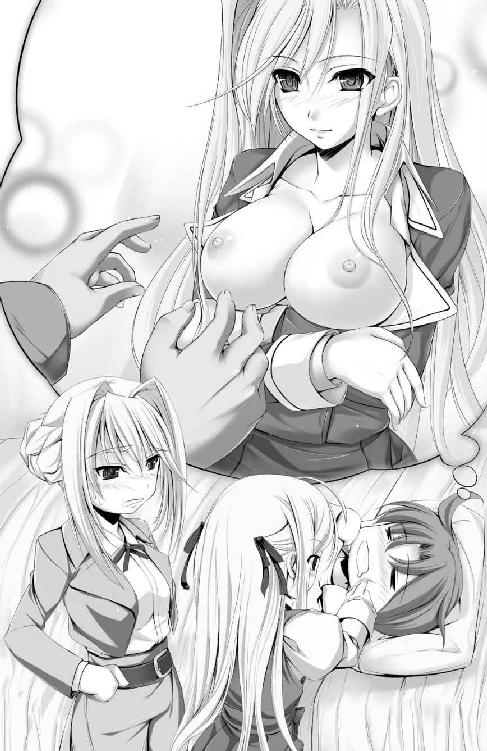
生真面目さがにじみ出た声の響きに、ようやく意識が眠気を振り払い、疑問を呈しかけた、その瞬間に。
「こうすれば、起きてくれるかな？ ......ちゅっ」
頬に感じた感触は昨日、食堂で感じたのとまったく同じ、気持ちよさと柔らかさで──一気に、目が覚めた。
がばりとあわてて飛び起きた視線の先に、私服姿のシルヴィアと、彼女をそのまま小さくして、無邪気な元気っぷりをこれでもかと足したような快活な少女が、それぞれらしい驚き方をして立っている。
「び、びっくりしたぁ。もう、お兄ちゃん。あとちょっとでマリアとおでこぶつかっちゃうところだったよ？」
シルヴィアの実妹、マリア＝ファン・ホッセンが唇を突き出したままで、少しわざとらしくむくれてみせた。わずかにその唇が湿っているのは──。
（ま、まさか、さっきのほっぺにチューは、マリアちゃっ）
急激に高まる背徳感を掻き消すように、パジャマの胸元を己が手でわしづかみにする。
「な、なん──」
なんで二人が俺の部屋に？ 夢の内容が内容だっただけにドキドキと昂る胸を押さえつけ、盛大についた寝癖に気を払うことも忘れて呈した疑問の一部は、寝ぼけた脳が目覚めるに従って、あっさり氷解した。
『明日は、シルヴィアと出かけてくるがよい。先方とはもう連絡がついておる』
昨晩、唐突に訪れた祖父の発した、あまりにも唐突な言葉。懇意にしているヴィンセントの娘であるシルヴィアとくっつけたがっていることは承知していたし、いつも強引な祖父らしいと半ば諦めた調子でしぶしぶ了承したのだが──。
その約束通りにシルヴィアが、おそらく痺れを切らして迎えに来てくれたのだろう。目覚まし時計を見るとすでに時刻は約束の時間を三十分ほど過ぎていて、昨日確かにかけたはずのアラームボタンは押された状態のまま、鳴った形跡がない。
（電池切れか......それとも、壊れたのか。どっちにしても、シルヴィに悪いことしちゃったかな......）
そっと視線を向ければ、白地のカッターシャツに、ダークブラウンのジャケット。シルヴィアの几帳面な性格を体現したかのようにきっちりとした服装が目に飛び込んでくる。ジャケットと同色のスカートから覗くストッキングに包まれた脚が妙に色っぽく、じっと見つめるのも気が引けてそそくさと視線を外してしまった。
「......？ いかがした。顔が赤いようだが」
「え？ いや、ははは。なんでもないよ、うん。だいじょうぶ」
心配して近づけてくれた顔にドキドキした──などと言ったら、シルヴィアを怒らせてしまいかねないので、愛想笑いでお茶を濁す。真面目な女騎士殿は、特に女性らしさを指摘され、褒められることには慣れていないのだ。
「何度か、お声はかけたのですが......申し訳ございません」
「ゆ、優さん？ い、いや。俺が不注意だったせいだから、謝らないで」
静かに佇んでいたせいで気づかなかったが、部屋の入り口。ドアの手前に申し訳なさそうにうつむくメイド少女の姿もあった。
「お兄ちゃんってば、こんな素敵なレディ三人に起こしてもらっておいて、なかなか目を開けてくれないんだもん。で、絵本の中のお姫様みたいに、キスしたら起きるかなーって」
無邪気なマリアの笑顔が妙にいけない気分をくすぐるのは、なぜか。たぶん、まだ寝起きで頭の中がぼけているせいだ、と結論づける。
「マリア。はしたない。真にレディを目指すならば、いくら子供といえど、そういった行為は慎むものだ」
「う......もぅ。お姉ちゃんってばおカタいんだから」
「マリア。それも父上に倣った言葉だろう。あまり、我が家の名を貶めるような......」
「あ、あー。俺、ちょっと着替えるから、悪いんだけどみんな少し席を外してくれるかなー......なんて」
延々と続きそうな姉の説教に小さなレディが困り果て、目でぱちぱちと救難信号を送ってきたので──できうる限り無理のない理由をつけてお小言の中断を試みることにした。
「む、それは......配慮が足らず失礼した。では、階下でお待ちしている」
「それでは私が客間へとご案内いたしましょう」
小さく頭を下げシルヴィアが、ヘッドドレスに飾られたおかっぱ髪を深々と下げて優が、部屋を出ていく。
（ありがと、お兄ちゃんっ）
最後に、聞こえるか聞こえないかぐらいの小声で気持ちを示し、ぱちんとウインクひとつ残してマリアが階下へと降りていった。
ぱたん、と閉じられたドアの音。その残響を聞きながら、やっとひと息。
「今日も、騒がしくなりそうだ」
つくづく静かな時間には恵まれていないらしい。でも、それがかえって慣れない生活への拒否反応を抱かずにいられる、大きな理由かもしれない。
何事も前向きにという母の口癖を思い出し、まだだるさの残る身体をベッドから起こして、階下の客人をこれ以上待たせぬよう、超特急で着替えに取りかかる。
窓から差し込む陽光が、冬らしからぬ外の暖かさを教えてくれていた。
「あ、来た来た。お兄ちゃん、こっちだよー！」
有馬家邸宅の正門前には、ほんの数分の待ち時間ですら惜しいとばかりにはしゃぐマリアと、元気に飛び跳ねる妹をたしなめる凛々しき騎士娘シルヴィア。そして──もう一人。予想外の人物が待ってくれていた。
「......哲平」
長いおみ足をつま先まで覆い隠したチェックのロングスカート。レースとリボンがふんだんにあしらわれたエレガントなブラウスからは今朝方夢にまで見た巨峰がふたつ。こんもりとこれ見よがしに実っている。青天の輝きを帯びて薄桃に透けて見える長く、艶やかな銀髪を、所在なさげに弄る細い指。空いたもう一方の手には、小さなバスケットがひとつ、提げられていた。
「シャル......？」
どうしてここに、と言いかけた唇を塞いだのは、タイミングよく胸元へと押し当たったシルヴィアの拳で。コツンと拳の背で少年を小突いてみせた女騎士は、くすりと笑ってひとこと。
「まさか、本気で私とデートなさるおつもりだったのではないでしょうね？」
「え、えぇ......えぇぇぇぇ!?」
だってお爺ちゃんとヴィンセントさんの差し金でデートするということ自体はもう決められてしまっていて──。そこまで考えてから、目の前の女騎士殿が、大人しく意に添わぬ命令に従ったりする人ではないことに改めて気づかされた。
「どうされた？ そんなにじろじろと私を見て。......少々、気恥ずかしいです」
借りてきた猫みたいにどこか落ち着かない様子のシャルロットと、照れながらもにこにこ笑顔のシルヴィアを見比べて、ようやく合点がいく。
（俺も、シャルも。シルヴィにしてやられたってことね）
一心とヴィンセントのセッティングを逆手に取って、少年と親友を引き合わせた。その見事な手法に、素直に感心させられる。
「まさかお爺ちゃんまで手玉に取るとはね」
「む。人聞きが悪いな。私はただ、大事な友人たちの想いを汲み取っただけ......だと思っていたが、出過ぎた真似だったでしょうか？」
ちら、と立ちん坊のシャルロットを覗き見る。はにかむみたいな、悪戯が見つかることを怖がってる時の子供みたいな、落ち着かない表情で待ってくれている彼女に、可能な限りの笑顔を返して。
正面に立つシルヴィアに向き直って、正直な気持ちを伝えた。
「ありがとう」
シンプルで、ともすればそっけなく取られかねない、たったひとこと。けれど、実直で生真面目な女騎士殿がこうした素朴さを好むことを知っていて、だからこそ最大限感情のこもるたったのひとことを選んだつもりだ。
「どうやら、わかっていただけたようだ」
案の定そう言って微笑んでくれたシルヴィアの顔が少しほっとしたみたいに見えるのは、彼女なりに考え抜いたであろう気遣いと悪戯が通じたことへの安堵か。それともひょっとして婚約者である少年が馬鹿正直に自分とデートをする気になっていたら、そんな危惧もあったのかもしれない。
「......お姉ちゃん、思いっきりおめかしに時間かけてたくせに......もが、もごごっ!?」
「マリア。余計なことは言わないでよろしい」
冷静に妹の口を封じているように見えて、凛々しき女騎士の頬は真っ赤に、それこそりんごのように赤く火照り染まっていて。
「......ぷ」
姉妹の仲睦まじい姿に、同時に吹き出した。その二人が視線を交わす。
「哲平、おはよう」
「うん、おはよう、シャル」
形ばかりのあいさつもそこそこに、手を取り合ってつなぎ止める。目の前に想い人がいる、そのことをおたがいに実感するみたいに、ぎゅっと握ってぬくもりを確かめた。
「さて、では私はこれで」
「あ、シルヴィア......？」
一緒に行かないの？ とたずねる親友からの視線に、野暮はなしだというようにシルヴィアは手を振った。
「たまの部活休みなのだから、マリアと親睦を深めようと思います」
「一緒に映画を見に行く約束をしてるんだよ。チケットはパパがお姉ちゃんと哲平お兄ちゃんにって取ってくれたやつなんだけどねっ」
役得役得とほくそ笑みつつも、でもどうせならラブロマンスよりアニメ映画のほうがよかったなんてひとこと漏らす。小さなレディの無邪気っぷりに癒やされつつ、最高の休日をプレゼントしにきてくれたホッセン姉妹に感謝の意味をこめ笑みで応じる。
颯爽と妹の手を引き去っていくシルヴィアの背中に、最後にもう一度。感謝の言葉を投げかけると、彼女は少しだけ名残惜しそうに振り向いて、再度会釈をしてくれた。
「......さて、それじゃ、どうしよっか」
嵐のように去った姉妹を見送ってから、改めて隣に並ぶプリンセスへと向き直り、言葉を交わす。
「うふふ、うふ。んふふふふっ」
シャルロットはさっきまでの借りてきた猫状態はどこへやら。楽しくてたまらないというように満面の、いつも通り極上の笑顔を浮かべ抱きついてきてくれた。正直、二の腕に当たるぷにぷに感、彼女のふくよかな胸の感触が相当生々しく、朝見た淫夢を想起させて、いつ前屈みにさせられてもおかしくない状況だったのだけれど。
（せっかくシャルが無邪気にはしゃいでるんだし......我慢我慢）
ぐっと我欲を堪えて、努めて真面目な顔で接する。
「どこか行きたいところとかある？」
「えっと......うぅん。ただ、哲平と一緒にまた、あの公園まで歩きたいなって」
頭の中の妄想を振り払いながらの、ありきたりな問いかけに、うつむきはにかみ、照れ笑いを浮かべながら、プリンセスは応じてくれた。
「公園......って、シャルと初めて会った日に行った、あの公園かな」
「うん」
近所にある公園で過ごしたのは、ほんのひと月ほど前のこと。なのにやたら懐かしく思えるのは、それだけ思い入れが強い場所であるせいと、それから──過ごしてきたひと月が濃密で実りある日々だったせいもあるのだろう。彼女も同じ気持ちであればいいなんて、おこがましくも考えたりなどする。
「一緒に缶コーヒーを飲んだのよね。歩き疲れていたせいか、とっても美味しかったの、今でもよく覚えてるわ」
うきうきと弾むように転がる声音が心地よい。少なくとも、シャルロットにとってもあの公園が思い入れのある場所になってくれていることだけは確かなようで、気持ちを共有できることがとても嬉しい。
「それじゃ、行きましょう」
「わっ」
腕を取られた。またムニュリと凶悪な柔らかさが二の腕に抱きついてきて、否応なく胸の鼓動が跳ね上がる。ただの巨乳じゃない。
（シャルの、おっぱいだもんな......昂奮するなっていうほうが......無理......！）
だけどそんなよこしまな感覚以上に、ドキドキワクワクと胸の底が弾んでいるのもまた事実だ。シャルロットと、本物のプリンセスと二人きりでデートする。
（そうか、デート、なんだよな）
心の奥で反芻してみて、よけいに実感がじわりと浸透してきた。込み上げる喜びを自分一人の胸にしまっておくのがもったいなくて、とにかく誰彼構わずに声を大にして伝えたい。そんなハタ迷惑で、浮足立ったはしゃぎようが自分自身、妙に楽しい。
「さ、じいやに見つかる前に行きましょ？」
「──え？」
無条件に楽しいウキウキ気分は、不穏な発言によって一瞬で突き崩された。
「お嬢様～！ どちらに、どちらに行かれたのですかぁ～！」
その上タイミングばっちりでどこからともなく響く野太い執事の声が、ロマンチック気分を粉々に打ち砕いてしまう。
「ひょっとして......黙って出てきちゃったのかな？」
「一応シルヴィアとお出かけするって書き置きはしてきたけれど......あの声の調子じゃ、嘘だって、ばれちゃってるみたい。......どうしてばれちゃったのかしら？」
小首をかしげて可愛らしく唸ってみせるその姿がたまらなく胸ときめかせる──なんて、見入ってる場合ではない。
（逃げなきゃ──！）
とっさに思い立ったのは、せっかくのデートを邪魔されてなるものかの一念だった。周囲を見渡し、まだ執事のいかつい影がないことを確認してからの逃避行。
「きゃ！ ふふ、なんだか楽しい♪ わたし、ずっとずぅっとこういうのに憧れてたの」
こういうのってどんなの？ なんて疑問がふと頭の中に湧き上がったけれど、その時はプリンセスの手を引いて逃げることに精一杯で、結局深くは考えずじまいで終わる。
「お嬢様～！」
「うわ、もう追いついてきた!?」
迫り来る声が次第に大きくなるに従って逃げる速度もスピードアップ。最初は小走り程度だったのが次第に駆け足が混じり、しまいには駆けっぱなしになって。
弾むようにステップを踏むシャルロットの優雅な足取りでは追いつかれそうだったけれど、ニコニコと笑う彼女の笑顔が眩しくて、見惚れてしまっている少年にはとても何かを言えるはずもない。
「とっても身軽。小鳥にでもなった気分よ♪」
道行く人が皆振り返る。洗練された身のこなしと、にじみ出る上品さに相反する、飾るもののない無邪気っぷりが、いっそうプリンセスの魅力を引き立てていた。
（今日のシャルは、本当に楽しそうだ）
いつも楽しそうにしてないってわけじゃない。いつも以上に、おそらく監視がない状態で自由にいられることがプリンセスの生来の天真爛漫ぶりを際立たせているのだ。
こんな逃避行なら、毎日だってしてもいい。たとえ後で怖い執事さんに追いかけ回されるオプション付きだったとしても......。
しみじみと、それぞれの想い、幸せを噛み締めながら、手を取り合ったままで思い出の場所へ。公園へと続く並木道を駆けてゆく──。
公園にたどり着いたのは、正午を少し回る頃。
「もう一度、この街を自分の脚で歩いてみたかったの」
そうささやいて広場でくるりとターンを決める。ついさっきまで走り疲れて肩で息してたとは思えないほどにシャルロットの機嫌は上々だった。
（追ってきてない......よな）
周囲に執事の姿が見えないことを確かめて、ほっとひと安心。二人並んであの日、初めて会った日と同じベンチへと腰かける。
「今日はシルヴィアと哲平に感謝ね。シルヴィアが誘って、哲平が連れ出してくれなかったら、またこの場所には来られなかったもの」
「俺はともかく、シルヴィがこんな悪戯めいたこと考えるなんて、結構意外だったかも」
生真面目だとばかり思い込んでいた女騎士殿の気まぐれに、まんまと一杯食わされた形だ。けれど、どちらかといえば幸運に感謝している。新たな一面を覗かせてくれたこと、それから、シャルロットと一緒にいられる時間をプレゼントしてくれた、ふたつの幸運を授けてくれた。
「あら。シルヴィアって結構お茶目さんなんだから」
意外でもない、といくつか思い出話に花咲かせてくれた、プリンセスの紅潮した頬に見入る。触ったりしたら柔らかいんだろうな、だとか、寒さに震えていないか、などとたわいもないことを考えながら見つめる想い人の横顔は相変わらず可憐で、いつも以上に輝いて見えるのはきっと活き活きと心が弾んでいるから。
曰く、舞踏会場で剣舞を披露した。曰く、迷子になった妹を探しに出て一緒に迷子になり、シャル、シルヴィ、マリアの三人で見知らぬ街を彷徨い歩いた。その際に暴漢と勘違いして、駆け寄って来た老執事を張り倒した、等々。ころころと弾む声音で語られる話は枚挙にいとまがない。
（それってお茶目っていうよりかは、シルヴィの生真面目っぷりが際立つエピソードだったり、単なるドジ話なような気もするけど......）
それでも心底からの笑顔で思い出を語るシャルロットの様子から、シルヴィアのことを大切に感じている彼女の気持ちはありありとうかがうことができた。秀峰学園に通う以前からの親友である二人の間には、おいそれと太刀打ちできないくらいたくさんの幸せが詰まった、いくつもの思い出が築き上げられている。
先に日本という国に慣れたシルヴィアが見知らぬ土地で不安だったであろうシャルロットの助けとなっていた、そのことも想像に難くはなかった。
「シルヴィのこと、本当に好きなんだね」
変な意味で言ったのではない。
「ええ。大事なお友達。大切な、親友よ」
青空よりも澄み渡った心根のぬし。遠い国のプリンセスは婉曲を愛する日本人にはない天真爛漫ぶりを発揮して、胸の内にある気持ちを素直に表してくれた。
予想通りの対応に、嬉しさが込み上げる。
（いつか、シャルみたいに俺の気持ちも、伝えられたら）
などとこっそり憧れめいた気持ちを感じたりもする。
「う～ん。いいお天気......」
伸びして見上げた青空の雲を数えてみたり、視線がばっちり合ってしまいドギマギしたり。思い出したように学友の話や、執事の話、遠い国に残してきた家族の思い出話が入り混じる。デートとはっきり評するにはあまりにたわいなく、のほほんとした緩やかな空気が流れてゆく。
それでもこれでいいのだと思えたのは、ブラウスの裾を寒そうに手繰り寄せ、吐いた白い息を指先に吹きかける、そんな何気ない仕草で一喜一憂するシャルロットの姿がたまらなく愛しく感じられたからだ。
「じいやはね、わたしが生まれる前......お父様が小さい頃からずっとヘイゼルリンクの家に仕えてくれているの」
「古株なんだ」
見た感じ、年輪は額や口元などに如実に刻まれ、現れている。けれど年寄り臭さをさほど感じないのは、あまりにエネルギッシュな印象があるせいだろう。
「心配してくれるのは、嬉しいの。わたしのことを考えてくれてるってことだもの。でも......少し、過保護すぎるって思うわ。どっちかといえばわたしがじいやを心配してあげなくちゃいけない年頃なのに」
初めはゆったりとした口調で、次第にぷくーっと頬膨らませて茶目っ気たっぷりに語り続ける彼女の横顔からは、周りの人々を心底から気遣う気持ちがにじみ出ている。
（そりゃあ過保護にもなるよな......こんなに綺麗で可愛くて、想われて）
男として彼女を想う自分と、保護者めいた感情で彼女を見守る執事。立場こそ違えど執事の気持ちは痛いほどに理解できた。今もしも自分の目の前から誰か見知らぬ男がシャルロットを連れ去ってしまったら。そう考えるだけでもはらわたが煮え繰り返る思いがする。
「嘘をついて出てきちゃったことは後で謝っておいたほうがいいかもね」
なんなら一緒に謝ってあげる、などと、さすがに出しゃばりすぎたかと思いながらも彼女に告げる。プリンセスは一瞬考え込んだ後、銀髪を掻き上げ、またにっこりと微笑みかけてくれた。
「......うん、そうするわ。哲平は、やっぱり優しい、いい子ね」
聞きようによっては嫌味にも取れかねない発言も、なんら含みのないシャルロットの声音に乗って紡がれれば、うきうきと人の心を弾ませる魔法の言葉に変わる。真正面から受け止めるにはあまりに眩しくて、けれど少し視線を落とせば、たわわに実った双丘がブラウスの胸元からぶるぶんと覗いて、若い心を掻き乱す。
「あー、う、うん。こちらこそ、ありがとう」
結局、温かい気持ちにさせてくれたことと、ありがたい物を拝ませていただいたお礼を兼ねて、よくわかっていないシャルロットに謝礼の言葉を投げかける。
「ところで......ずっと気になってたんだけど。そのバスケットって、何が入ってるのかな」
続いた言葉は照れ隠しのため。何気なく発したはずのひとことに、ビクリとやけに大げさにシャルロットの肩先が反応を示した。
「わ、笑わないでくれる？」
「......？ うん」
妙にもどかしいやり取りの後、彼女が背中側から取り出したのは、逃走中も決して手放すことなく、大事そうに胸元に抱えていた小さな──彼女の両手のひらを足したくらいのサイズのバスケット。
「俺が開けて、いいのかな」
わざわざベンチに座り直し向き直ってから両手で差し出されたバスケット。あなたが開けてと言うようにずいと突き出された箱の留め金に触れると、恥じらいながらもこくりと、小さくうなずいて先を促してくれる。
「笑わないって、約束してね？」
「そ、それじゃ」
畏まったシャルロットのしおらしい態度が妙に新鮮で、緊張が伝染したみたいに語尾が震えた。
いつも明るいプリンセスにしては珍しくおずおずと、遠慮がちに差し出されたその中身は、ちょっと──いや、かなり不揃いのサンドイッチがいくつか。一見して手作りだとわかるぶきっちょな作りに、目を見張ってしまう。
「シャル、これ、もしかしてシャルが......？」
「誰も教えてくれなかったから......す、少し不格好になっちゃった」
正面切ってお料理教えてってお願いしたら、コック長に泣きつかれてしまったと、むくれながら彼女は話してくれた。
「私どもの作るものではご満足いただけないのですかーって。何を言ってもそんな感じだったから困っちゃって、それで......夜中にこっそり見よう見まねで作ってみたのだけど」
ご覧のあり様、と言わんばかりにバスケットの中身を広げ、しゅんとしてしまう。
「卵サンド、だよね？」
こくり。また声には出さず小さくうなずいて、遠慮がちな同意を示してくれる。よっぽど出来栄えに自信がないのだろうか。
「本当はシルヴィアに味見してもらって、もうちょっと練習してから哲平に渡すはずだったのにぃ......」
ぼそりとそんな後悔のつぶやきを漏らす。しょげ返る彼女の姿は物珍しく、ついうなだれた彼女の頭に手を伸ばしかけてしまうほどに保護欲をそそり、愛しさが駆り立てられる。
「......いただきます」
遠慮なしに手に取ってかじりついた卵サンドは柔らかく、上質のパン生地は口にした端からトロリと溶けてゆく。目を丸くし、口をあんぐりと開けて驚き固まったシャルロットの表情から、彼女の動揺がありありと見て取れるのが楽しくてしかたない。
（驚いてる驚いてる）
うつむいた顔は確かに新鮮ではあったけれど、彼女にはやっぱり笑顔でいて欲しい。そう思ったから、あえて前触れなしにサンドイッチにかぶりつき、あえてモシャモシャと大げさに音を立てて食してゆく。
「あ、あのっ。哲平......？」
おいしいかな、と聞きかけてあわてて口をつぐんだのが、半開きの唇の動きでだいたい読み取れてしまった。自信がないから、たずねられなかったのだ。
「もぐもぐもぐ」
必要以上に咀嚼して焦らしてしまったのは、困った顔のシャルロットが可愛らしく、ついついもっと見つめていたくなったから。そんな、今しがた「笑顔が見たい」と感じた気持ちとは相克する、贅沢な気持ちからだった。
「だい......じょうぶ？ あ、あのっ。喉に詰まったり、してない？」
さすがに献身的な心配を一身に受ける段になって、申し訳なさと、それ以上焦らすのは可哀そうだとの気持ちが強くなる。
「......んくっ」
そして、ようやく咀嚼し終えたひと口分を喉へと流し入れた。
肝心の卵サンドの味はというと──まず、食パン部分の切り口はギザギザで、おっかなびっくり包丁を振るったのだろう痕跡がくっきりと残っている。正直、食感を大幅に損なってもいた。不揃いな卵ときゅうりはなぜかカレー粉っぽい風味が利いていて......予想とまるで違う味わいだったけれど、決してまずくは、ない。多めのチーズのトッピングも、正直好みの味付けだった。
「や、やっぱり見よう見まねで作ったのがいけなかったのかしら」
たった今作った当人よりもたらされた情報によると、どうも、カレー味のサンドは偶然に偶然が積み重なってできた、奇跡の産物であった模様。
「てっ......ぺい？」
心配そうに顔色をうかがってきたプリンセスのあわてぶりに、吹き出しそうになるのをやっとの思いで堪え、努めて平静顔を貫き通す。もったいぶったほうが、きっとシャルの笑顔はいっそう輝いてくれる。ひねくれた考えが最後の最後まで意地悪をさせる。
「......おいしいよ」
案の定、待たされた割にあまりにあっけらかんと放たれた感想に、一瞬きょとんとした直後。淑女の顔には青空照らす太陽よりもまばゆい笑顔の花が咲き乱れた。
「よ、よかったぁ～......。もぅ。哲平ったら、なかなか返事をしてくれないんだもの。おいしくないって言われたらどうしようかって、そればかり考えてたんだからっ」
ほっとした様子で彼女自身も手に取った卵サンドをぱくり。
「はむ......んっ。ちょっと味が濃かった......かしら」
なんて、さすがセレブらしい舌の贅沢ぶりを披露してくれる。
「濃い口が好きなんで、俺にはちょうどいいかな。あ～むっ」
ふた口目も豪快にかじりつき、三口目で完全に一切れをたいらげた。思い起こせば急いでいたせいで、朝食も取らないで家を出たのだ。中途半端に満たされた胃袋がたちまちのうちに活性化して、早く次を寄越せと音を鳴らしてわめき立て始める。
「それじゃあふた切れ目、と。いただきます」
見る見る間にバスケットの中身は胃袋へと消えて、そのたびにプリンセスの表情は悦びと驚きで彩られ、華やいでいった。
「ほっぺにパンくず、ついてるわ哲平」
「んふぉ？ あ......」
ハンカチを取ろうとごそごそポケットを探る間に近づいてきた、シャルロットの顔に見惚れる暇すら与えられなかった。ちゅっと頬に接着した唇の柔らかな弾力に、一気に意識を奪われる。レロンと滑らかな感触で頬肉がくすぐられた──そう感じた直後にはもう彼女の唇は数センチ向こうへと離れていってしまっていた。
じわりと頬に残る粘ついた感覚と、もぐもぐとなにかを噛むように口を動かす彼女の姿から、その小ぶりな舌先で頬についていたパンくずをなめ取られたのだと理解する。理解してすぐに、かぁっと全身が紅潮するのを実感した。まるで、漫画や映画の中のバカップルがするような、甘酸っぱい行為。傍から自分が見ていれば確実に目を背けたに違いないこっぱずかしい状況に、今度は少年側がうろたえさせられる番だった。
「ね、哲平。わたしのほっぺについてるのも......取って」
さらに畳みかけるように差し出されたプリンセスの頬には、ご丁寧にもパンくずが一粒。健気に瞳を閉じたシャルロットの頬に見入りながら、唇と喉が緊張で乾いていくのを体感した。
（こ、れは......！ シャルのほっぺに、キス......してもいいってことなのか!?）
彼女から好意を持たれているという実感はある。けれどはっきりと言葉に出して伝えられたわけではないことで、一抹の不安──単なるうぬ惚れなんじゃないかという不安を抱かされているのもまた、事実だった。二つの相反する感情の只中で押し潰れそうになった胸が、激しく高鳴っている。
「ん......っ」
視線を真横に戻すと、プリンセスの頬は相変わらず差し出されたまま。美しく輝く瞳を閉じて待つ彼女の膝の上に置かれた手のひらが小刻みに震えている。たったひとつしか年の違わない彼女だって、緊張しているのだ。そしてその緊張はシャルロットがふざけたり、からかうつもりでこのようなことをしているのではないと、言葉よりも雄弁に物語っていて──迷いを断ち切るのに充分すぎるほどの健気さに突き動かされ、腹を決めさせられた
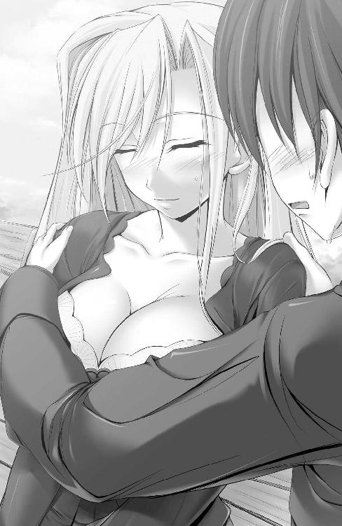
「じゃ、じゃあ取るよ」
「......うん」
意を決しぐっと肩を抱き寄せると、予想以上の華奢な感触に驚かされる。こんもりと胸元を盛り上げる乳房のボリュームに相反して、引き寄せた腰は細く、少し力を入れただけでへし折れてしまいそうだ。せっかくの服がシワになるんじゃないかなんて、どうでもいいことにまで気を回しながら、ゆっくりと顔を彼女の頬へと近づけていく。
「哲平......なんだかとっても......わたし、胸がドキドキしてるの」
「俺だって......同じだよ。恥ずかしくて、でも......ドキドキするのは、全然嫌じゃない」
「うん......なんだか、胸の中からぽわぽわ、あったかくなっていく感じ......」
目を閉じて待つプリンセスの耳元に口寄せて語り合う。傍から見ればやっぱり、いちゃつくバカップルに見えてしまうのだろう。でも今は、他人の視線なんか気にはならない。ただ、目の前の彼女の本心が、知りたい。おぼろげに感じるのではなくて、はっきりと目に見える形で、言葉という形で、知りたいと思う。
（キスすれば......もっとわかり合えるのかな......）
あと数ミリ。ほんの少し唇を突き出せば、柔らかなシャルロットの頬肉に触れる。彼女のぬくもりをじかに感じ、肉の柔らかさと弾力を食んで確かめながら、自分がそこに触れたという確かな証を、唾液をまぶして刻みつけることができる。
改めて腰と首筋に回した手で彼女の肢体を抱き寄せて、押し当たる乳肉の凶悪な感触と、手の甲を流れていく髪の毛の、繊細な触れ心地とに腰の芯まで蕩かされていった。
「は、早く......だんだん、恥ずかしいのが強くなってきちゃってる、からぁ......」
「う、うんっ。じゃあ......」
酔っぱらったみたいに──実際、醸し出す場の雰囲気に酔っていたのかもしれない──ほんのり桜色に染まる彼女の頬へと、生唾呑んで唇をいっそう近づけて──。
「貴様あああああああぁぁぁぁぁ!! お嬢様に何をするっ、かああぁぁッッ～～～!!」
耳朶をつんざく野太い絶叫によって、瞬時に酔いを醒まされた。
「じ、じいや？ どうしたのそんなに息を切らせて」
「探しておったのですずっと！ ささ、帰りましょうぞ。このような野ざらしなところにいたのではお風邪をめしてしまいます。今宵はパーティーのお約束も入っておりますゆえ」
草むらから颯爽と（葉っぱやらイバラを全身、燕尾服にくっつけたまま）飛び出してくるなり、老執事はプリンセスの手を恭しく取り、連れ去ろうとする。
ご丁寧にもう一人の当事者に対しては射殺すような冷たい視線を捧げてくれた。
「て、てっぺ......」
執事に射抜かれ居竦まりかける小心者の少年の名を、名残惜しげにシャルロットが、呼んだ。
（......ふぅ。また......お預け、かぁ）
プリンセスの柔和な声音に癒やされることで、老執事の氷の視線をはね除けながら。もうしばらく不確かで心地のよい、いまだ恋人とは呼べないシャルロットとの関係が続く、そのことに安堵している情けない自分をも自覚する。
このままでいいわけじゃない。いつかはおたがいの気持ちをはっきりと確かめ合って、決めなくちゃならない。その時はもうすぐそこにまで迫っているような──そんな予感に突き動かされ、執事に引かれ去っていく、彼女の背中に向け声をかける。
「シャル......また、今夜ね」
「......ええ。また、今夜！」
ぱぁっと華やいだプリンセススマイルを見つめながら、淡い期待が若い胸の奥でくすぶり始めたことを、否応なく実感させられた。
そして、夜。二人は紳士と淑女の顔をして、あまりに早い再会を果たす。某企業社長主催のダンスパーティー会場。
「あ！ 哲平お兄ちゃんだっ」
「おや。有馬殿、昼間はどうもありがとう」
お気に入りのドレスを纏った小さなレディと、筆頭貴族の証たる鎧を着込んで剣を差し、彼女なりの正装で馳せ参じた、きっちり結い上げられた金髪が見目麗しき女騎士。相変わらずの姉妹の姿を見つけて、ほっとひと息。
「うん、こちらこそ楽しかったよ」
まずは口裏合わせした通り。姉妹の父の前で、さも日中はずっと一緒にデートしてましたよ、的な印象操作を実行する。
「ふむ......」
なにか勘づいているのかいないのか、ヴィンセントは顎ひげをなでつけつつ、手にしたワイングラスを傾け続けていた。
「あ......哲平～こっちこっち～！」
「ほら。あなたのプリンセスがお呼びですよ」
そして女騎士に背を押されるようにして再会を果たした愛しいプリンセスと、手に手を取り合って視線を交わした瞬間。胸高鳴らせた二人の心情を察したかのように、優美なメロディーが会場に流れ始める。
「踊りましょう」
「うん......エスコートよろしくね」
もちろん最後のひとことは冗談だったけれど、真に受けたプリンセスは豊かに実りすぎた胸を張って、にっこりと相槌を返してくれた。
純白の、胸元が少し深めに開いた豪奢なドレス。おとぎ話の中から出てきたみたいな完全無欠のプリンセスが、腕の中に身を寄せて、今、手と手を取り合っている。夢見心地の中で、確かな彼女の体温を感じ取り、ぎこちないままにステップを踏み始め。
「ちゃんと、支えていてね」
甘えるみたいに身体を預けてきてくれたプリンセスの腰を抱き、彼女に教わった通りに二人のリズムを合わせ、刻んでいく。おたがいの呼吸が吹きかかるくらい近づいた顔と顔。交わす視線まで絡め合い、相手が考えていることを読み取ろうと努力する。
有馬の御曹司と、ヘイゼルリンク公国の姫君。たがいの立場を忘れての熱のこもったダンスが、周りの視線を集めてしまっていることは重々承知していた。それでも。
（もっと、ずっと......このままで）
ぎこちないエスコートに彼女が微笑んでくれる。それだけで周囲の雑音は掻き消えた。この幸せな時間が永遠に続けばいいのにと、思ってしまう。
「......哲平は、わたしがして欲しいことを、みんなわかってくれるのね」
「......だからね」
「えっ、なぁに、よく聞こえなかったわ」
好き、だからね──なんて声を大にして、もう一度言うのは恥ずかしかったから。ごまかすみたいにステップを刻み、相手の吐息を感じることでますます肌を火照らせていく。問い直すことを諦めて、シャルロットも再度、幸せなひと時に身をゆだねてくれた。
なのに、幸せな時間は、音楽の途切れとともに、あっさりと終わりを迎えてしまう。
──ぱちぱちぱち。
どこからともなく、誰からともなく響いた拍手の波に押されるように、二人揃って会釈をし、場を逃げ出すように手を取り合って落ち着ける場所を探し始める。
「哲平ったらずいぶんと上達してるんだもの。驚いちゃった」
「練習、したからね。シャルと、たくさん。......俺、飲み物かなにか取ってくるよ、シャルはなにがい......」
ちゅっ──。
ようやく腰を落ち着けられそうなスペースを見つけて、腕の中の彼女から照れ隠しに目を逸らした、ほんの一瞬。そのわずかな隙を突いて、プリンセスの顔が近づいてきて──気づけば目の前に瞳を閉じた彼女の顔があった。
急ぎあたりを見回せば、幸運にも皆談笑に花咲かせていて、仲睦まじい二人に気を遣ってくれてでもいるのか、近づいてくる者もいない。
（俺の、口に......シャルの......っ、やわ、らかぃ......）
時間にしてみれば、ほんの数秒。実際は触れるか触れないかぐらいの一瞬の接着だったのに違いない。けれど、高鳴る胸の鼓動は若い心を掻き乱し、そのわずかな接合を、まるで永遠とも思えるほどに長く感じさせてくれた。
「昼間は、じいやに邪魔されてできなかったから」
照れ隠しに舌をぺろっと出して、悪戯っぽくシャルロットが笑う。抱きついてきた彼女は甘えるように腰を押しつけ、ドレス越しにも量感たっぷりのふたつの膨らみをすり寄せてきた。
まだ腰の芯が痺れたように震えてしまっていて、無性に彼女の赤らんだ頬をなでてあげたいのに、手がかじかんだように動きを鈍らせているのが、たまらなくもどかしい。もう一度、ちゃんと彼女の唇の感触を確かめたい。
（シャルの気持ち......俺の気持ち。もっと、もっと確かめ合いたい）
はっきりと、言葉で示してくれないことが、よけいに慕情を募らせる。おたがいの気持ちは痛いほどわかり合えているのに、肝心の告白だけがタイミングを逸し続けている。
「シャル、あの、さ。俺......」
この時もまた、精一杯の真面目な顔と視線とで向き直り、少年は意を決しての告白に臨む。たどたどしく、けれど一途な口ぶりに、プリンセスの表情も一瞬ほころび。
「哲平......」
そっと体重を預けてきてくれる。彼女の青い瞳は幸せにまどろむように、夢見るように蕩けて、心なしか潤んで見えていた。
（言わなくちゃ。今、今なら......）
今なら、言える。せっかくそんな気持ちになれたのに、相応しい言葉を探る間に、腕の中のぬくもりが強張るのをありありと肌で感じてしまう。
「......ごめん、なさい」
想定外の発言に一瞬、少年の思考が止まる。瞬きするほどのわずかな間に、またしても機はするりと少年の腕の中からすり抜けて。
増大する欲求にどうにか打ち勝てた代わりに、告白する機会と、柔らかなぬくもりとを奪われてしまった。彼女の言葉が唐突すぎて、謝罪の言葉を受けたのだと認識するまでには多少の間を要してしまう。
「シャル、なんで」
どうして謝るの？ さっきまで喜びに満ちていたように見えた青い瞳が、哀しげにまつ毛を濡らしている。憂いた表情でうつむくその様に胸締めつけられて、驚きと、愛しさはますます募りゆく。かける言葉を探す間にも、切なく甘い感情に締めつけられる胸が無性に疼き、悶々とする。
酔いから醒めたように純白のドレスが離れていく。そのステップは一緒に楽しく踊った時とは雲泥のぎくしゃくぶりで、見ていて痛々しくなるものだった。辛そうに浮かべたプリンセススマイルもどこかぎこちなく、無理してる感がありありと伝わってくる。
（どうして、そんな顔......するの？）
悪戯を叱られた子供みたいに震えているプリンセスに問うてみたかった。
「さ、寒くなってきちゃったから。だからちょっとじゃれついてみたかった......だけ」
下手な嘘までついて、今にも泣き出しそうな顔をして、誰かに呼びかけられ、逃げるように人ごみの中へと小走りに消えてゆく、その背中を見つめ。そっと、まだ残る彼女の感触を思い出すように唇に触れて、言葉を発するでもなく、ただ心の中で己の気持ちを反芻する。
「シャル......」
わかり合えたと思った。気持ちは伝え合えていると、今でも信じている。悪戯なんかで唇を許すような人でないことは、誰よりも、嫌になるくらいに深く知っていた。
もう一度見つめた人ごみの中に、もう彼女の姿はなく。ついさっきまでの温みが嘘みたいに冷え込んで、身体の芯ごと身震いする。答えを探すように、視線はいつまでも人ごみの狭間を彷徨い続けていた──。
結局、ダンスパーティーから帰ってからも寝つけぬまま一晩を過ごし、朝焼けの空の眩しさにあてられ、眠たい目を擦る。それでも頭の中をぐるぐると、巡り巡る様々な想いを整理するように、また最初から。もう幾度目か、数えるのも嫌になるくらい繰り返し思い返した昨晩の出来事を、順にたどって思考する。
（シャル......踊ってる時はとっても嬉しそうにしてた。それに、キス......した時だって）
その後急に憂いた表情を浮かべて、離れていってしまった。
ベッドの上に寝転がり、今思い返してみても、あまりに突然な表情と態度の変化だったと感じてしまう。
直接言葉にしてはいなくても、シャルロットからの好意はひしひしと肌で感じられていたし、こちらからの好意もまた、伝わっているものだと思っていた。
（いや......伝わってたはずだ。でなきゃ、あんなこと）
執事の目を盗んでまで作った、初めての手作りサンドイッチを「哲平のために」とまで言って、持ってきてくれた。初めて出会った日一緒に過ごした公園での出来事を、嬉しそうに何度も、何度も語ってくれた。それに、いまだ頬と、口元に残る彼女の唇の感触。
「シャルがいくら気さくだからって、誰彼構わずにキスしたりするもんか......」
プリンセスの唇には特別な意味がある。唇と唇が重なる瞬間に垣間見たシャルロットの表情は真剣そのもので、直後に彼女が漏らしたような気まぐれから起こした行動だとは到底思えなかった。
（シャル......いったい、どうして？）
結局、思考は一晩中繰り返し続けたループに再び陥ってしまう。いつしか疲弊した心は、癒やしを求めるかのように、出会って間もない頃の記憶にまでさかのぼっていった。
見知らぬ地、見慣れぬ豪奢な建物に圧倒され、良家子女の通う秀峰学園という存在自体に縮こまらされていたのを助けてくれた。最初に話しかけてきてくれて、以後もなにかと気にかけてくれた。
プリンセスだから、気になったのではない。シャルロットの、利得を考えるのではなく、自然と、心からの気持ちをこめて行動する、その優しさに強く惹かれたのだ。黙っていてもにじみ出る柔和な雰囲気に惹き込まれ、いつしか彼女の姿ばかりを目で追っている自分に気づかされもした。
『哲平が......シルヴィア以外で初めて気軽に、飾らずに話しかけてきてくれた人だったの』
いつか、そんな風に、心底から嬉しそうに話してくれたのを今でも覚えている。
おたがいの身の上を語らい、好きな食べ物はなんだ、好きな色は、なんてたわいない話をして日々を過ごす。何気ない日常がプリンセスにとっては新鮮で、とてつもなく喜ばしいことなのだと知ってからは、彼女との対話がいっそう楽しく有意義なものへと変化していった。
（執事さんにはあの頃から目をつけられて、よく追いかけ回されたっけ）
まるで嫉妬されているかのように、頻繁に叱責され、学園の敷地中を追いかけ回されもした。老執事の苦虫を噛み潰したみたいな怒りの表情を苦笑交じりに思い出す。
『わたしの大切なお友達なのよ。仲良くしてあげて』
そのたびにシャルロットは執事をたしなめ、時には叱って、拗ねたみたいな態度を取っては初老の従者に困ったような表情を作らせた。
「あの......執事さんか？」
長い一晩の苦悩を経てようやく、おぼろげな答えをつかんだ気がする。
「──よしっ」
思い立ったが吉日。決意を固めた後の行動は迅速だった。
「優さん、朝ごはん今日は早めに頼めるかなー？」
いそいそとパジャマから制服へと着替えながら、階下で忙しく働いているであろう優へと声をかける。ほどなくして戻ってきた返事に応じながら階段を下りつつ、これから、学園についてからの行動方針を練り上げていく──。
秀峰学園武道場。放課後、いつもは剣戟の音と掛け声のみが響く静かな場内に、この日ばかりはどよめきが満ちあふれていた。
「マルシェ！」
ドスッ──借り物の防護服では吸収しきれない鋭い衝撃を伴った一撃が、もう何度目とも知れぬ痛みを少年の胸元へと刻みつける。
「ぅ、ぐっ！」
「どうした、有馬殿。もう音を上げられたか？」
そちらから申し出られたことですよ？ とその燃え盛るような瞳が問うている。応じてまだまだやれると手ぶりで伝えて、震える膝に活を入れて背を伸ばし、再度前を見据え試合衣装の彼女、シルヴィアと相対した。
（シルヴィは、あの執事さんに一撃見舞ったことがあるんだ。だから、そのシルヴィの攻撃をかいくぐれるようになれば......！）
シャルロットの憂いの原因が、あの老執事の妨害にあるのではないか。そう思い至った後に考えた対策が、シルヴィアに稽古をつけてもらうこと。もう一度誰の監視もない環境下で、プリンセスとしてではなく、素のシャルロットの満面の笑顔が見たい。その一念でシルヴィアに願い出、一本気な彼女を根負けさせる形で特訓を実現させた。
「では、もう一度......いきます。マルシェ！」
「ぁくっ......う、うぅっ......！」
練習用の剣とはいえ、鋭いシルヴィアの斬撃は防護用のジャケットをやすやす貫き、衝撃を身の奥にまで届けてくる。わざわざ合図までしてもらったというのに、素人目では捉えきれぬ彼女の突きを、またもろに胴体で受け止めてしまった。
危険だからとかぶらされた試合用のマスクが視界を狭め、慣れないグローブの握り心地に焦りばかりが蔓延する。膝下丈の長いズボンの内側には、緊張と高揚とで掻き漏らした汗がびっしりと溜まり、足取りを重く鈍らせもしていた。
「どうした！ 下がっているばかりでは埒があきませんよっ。脚を前へっ！」
通常「マルシェ！」の掛け声以外は物静かに剣を振るうのみだったシルヴィアが、今日この時ばかりは頻繁に口を開き、アドバイスをくれる。
（シルヴィの言う通りだっ。このままじゃ、ジリ貧だっ......前へ、少しでも前へっ！）
頭ではわかっていても、防具ごと肌まで貫く鋭い衝撃を胸に、腰にと浴びるそのたび、竦んだ身体が勝手に後退してしまう。情けない己の心身を叱咤しつつ、シルヴィアの実力を文字通り身をもって思い知り、あまりに無謀な挑戦であることへの自覚も新たにする。
「有馬様、もう一時間以上もああして......痛々しくて見ていられませんわ」
「フェンシング部員でもあられませんのに。どうしてああまで頑張られるのかしら？」
哀れみや疑問の声が外野から上がるも、少しもやる気を削がれる気配はなく。ただ、長い悩みの末にようやくつかんだ想い人の笑顔への糸口を手放したくなくて、前を見据え、食らいつく。視界をさえぎるマスクを自ら脱ぎ捨て、臆する脚を強引に前に進ませた。
「私の攻撃をこれだけ食らって......まだ眼の光を失わぬ。あなたの心意気に、私は剣で応える......っ！」
手は抜かないと、シルヴィアは告げてくれる。
（少しずつ......シルヴィの息も上がってきた気がする。今なら......）
数試合分の時間をずっと一方的に剣を振るってきたのだ。肩で息をしている様から、隠しきれない彼女の疲労度合いが透けて見える。そもそも相手の攻撃を受けてから応じるシルヴィア本来の戦法とは違えていることで、気疲れも相当積もり積もっているはずだった。
「よ、しっ......お、おわっ!?」
意を決し、もう一歩前に出ようとした途端。両膝が無様に崩れ落ち、ふらついて前のめりに手をつかされた。予想以上に、慣れないことをしたせいで身体への負担が溜まりきっていたらしい。
（く、そぉぉっ......こんなことなら何か運動を常日頃しとけばよかった......）
肉体の許容量を超えて、毛穴という毛穴から汗と一緒に噴き出た疲労が全身に重たくのしかかる。今朝方までの寝不足もこたえていた。霞む目をしばたき、汗とめまいを振り払う。
ふらつき、倒れかけてもなお、どうにか膝に手をつくことで無理矢理に身体を起こし前を見る。見上げた先では、凛々しき女騎士が少しの油断もなく剣を構え、相手が立ち上がるのをただじっと見据え、待っていた。
「......シルヴィ、もう一度。......お願い」
ようやく立ち上がってすぐに、再度の攻撃を自ら願い出て、応じた女騎士の突きを、今度は脇腹でもろに受け止める。
「ぅぐっ......！」
「てっ......ぺい？」
横腹を鋭い痛みが突き抜けるのと、少年が知る彼女らしからぬ哀しみに満ちた声が響いたのとが、ほぼ同時だった。
「......シャルロット殿」
シルヴィアが視線を向けた先に霞む目をやれば、走ってきたのだろうか。息切らせて胸弾ませながら、それでも毅然とした──常日頃にこやかなプリンセスらしからぬ語気の強さに感情の揺らめきを宿らせ。シャルロットが、武道場の入り口に立っていた。
「い、っつゥ......シャル。どうしてここに」
脇の痛みに耐えて、哲平は彼女の、想い人の名を呼ぶ。
「シルヴィア......何をしているの？」
想い人は少年の問いをさえぎって、強張った声で無二の親友へと疑問を投げかけた。哲平がよろけながら立とうとする、その様がよけいに彼女の心を揺るがしたのかもしれない。状況を少しずつ理解したらしいシャルロットの澄んだ青い瞳が、これまで見たことのない感情の色に呑まれてゆくのを、シルヴィアと哲平、双方が目撃する。
「哲平はフェンシング部員じゃないわ。これ以上......哲平を傷つけないで！」
学園内では常ににこやかな笑みと柔和な雰囲気を崩すことのなかったプリンセスの必死の、怒声交じりの口ぶりを目の当たりにし、特訓を息を呑んで見守っていたフェンシング部員たちの間にも、目に見えて動揺が広がっていた。
けれどその怒声を向けられた当人、今なお鋭い突きを繰り出し続けるシルヴィアだけは、少しも動じることなく、むしろ久しぶりの友人と再会した時のような、嬉しそうな笑みを湛えて、ゆっくりと唇を開く。
「これは有馬......哲平殿から申し出られたことだ。シャルロット殿......あなたが本当に哲平殿を好いておられるのなら......！」
好いているのなら、と強い口調で言われて、瞬時にぼっとシャルロットの頬が薄桃に火照るのが垣間見えた。
友人だから。親友だからこその忠言を口にして、女騎士は再度対戦相手へと向き直る。
（シルヴィ......ありがとう）
気持ちを汲んでもらえたことが嬉しくて、けれど息が乱れているせいで言葉にできない感謝の言葉を、そっと心の中で反芻した。
「......っ、哲平、が？ どうして......っ」
「有馬殿はシャルロット殿のために、戦っておられる」
「わからないわ。どうして......哲平が、わたしのためにシルヴィアと戦うのっ!?」
親友と会話を交わしながらも、ほんの一寸も揺らぐことのない剣閃。今も胸元をかすめた剣先を、すんでのところでやり過ごすことができた。徐々に、慣れてきたのだという実感。特訓は無駄にはなっていない、そのことが勇気を後押ししてくれる。
「シャル......俺を、信じて！」
だから、とっさにそんな恥ずかしい台詞を臆面もなく告げられたのかもしれない。
「では......いきますっ！」
とどめを刺そうと突き出された、直線的なフルーレの軌道。これまで何十発と身に浴びてつかんだタイミングに、自然と身体が反応してくれた。重たくなった脚が前に、地から引き剥がすように持ち上げて駆けてゆく。
「......っ！ しまっ......ひぁぁっ!?」
素っ頓狂な、場にそぐわぬ甘い声が響いて、周囲の部員たちが皆一様にシルヴィアの表情に注目した。当然、突進を敢行した当人も、視線を上げて女騎士の、驚いたみたいに凝り固まる表情を仰ぎ見ようとし──。
ぽよんっ。
（ん？ この......感触は、もしや）
無我夢中で突っ込んだ頭頂部にふんわり柔らかな、けれども張りのある衝撃がぶつかった。そう感じ見上げた先には、シルヴィアの、防具を押し上げて実るたわわな膨らみがあり──彼女の胸にぶつかったのだと自覚して、突然に足元のバランスを崩してしまう。
「う、わあっぁぁぁぁ！」
「ぁくっ......」
もんどりうって武道場の床に、抱きついたシルヴィアを引き倒す形で寝転がる。拍子につま先を引っ掛けた、先だって脱ぎ捨てておいたマスクがやけに大きな音を立てガラゴロと床を転がっていく。
ほとんど衝撃が身体に伝わらなかったのは、抱き締めたシルヴィアの肢体、特に弾力に富んだふたつの膨らみが見事にクッションとなって防いでくれたおかげだ。
「さすがに......連続で同じ軌道をたどれば、読まれてしまうか。だがこれで、あの御老体の突進もかいくぐれよう」
ぽそりとこぼした彼女の言葉から、あの愚直なまでに直線的な連撃が老執事の突進を模したものであったことを知る。
（ありがとう......シルヴィ）
抱きついたシルヴィアのぬくもりに引き寄せられそうになるのを堪えながら、心底その気遣いに感謝した。
「ところで、その......有馬殿。そろそろ、どいていただきたいのですが」
「へ......あっ、ご、ごめ」
言われて初めて、ボディーラインがくっきり浮き出た防具姿のシルヴィア、その胸に顔をうずめる格好で覆いかぶさった体勢であることに気づく。
あわてて起き上がろうとした拍子に、ぐらり。前触れもなく視界が歪み、目の前が真っ暗闇に覆われた。
「哲平っ!? ど、どうしたのっ」
（あ、シャル......だ、だいじょうぶ）
心配げな声音の彼女を気遣い、しっかり声に出して告げたつもりが、実際は唇がぱくついたかどうかさえ定かでない。
「シャルロット殿。あまり揺すらずに寝かせてあげてください。あれだけ私の突きを身に受けたのだ。それに、目的を果たしたことで......疲れがどっと噴き出たのでしょう」
どうりで身体が重たいわけだ──。シルヴィアの説明に納得し、気を緩めた途端。再度彼女の、衣装越しにもはっきりとわかる張りのある双丘へと顔をうずめ。その柔らかさに溺れるように、刈り取られた意識が泥濘のごとき暗闇へと落ち込んでいった。
（......あれ？ この、感じ......）
全身がフワフワと不確かな浮揚感に包まれている。昨日の朝と似た心地から、すぐに、夢を見ているのだと気づいた。
（変にふかふかのベッドだな......）
頭の下の枕もやたらと柔らかで、気を抜くとずぶずぶめり込んでいってしまいそうな感覚に、溺れてゆく。さらにはなんだか柔らかな重みが、額のあたりにたぷんと乗っかってきて、ただでさえ火照っている身体へと熱がこもってしまっていた。
（な、んだ。これ......？）
恐る恐る額の上の物体を突っついてみる。
「ぁ......ぁんっ」
するとなぜかかなり間近で艶めいた甘い声音が響いた上、
（や、柔らかい......指が、ズブズブめり込んでくっ!?）
頭の下の枕よりもずっと柔らかでたっぷりとした肉感に、吸いつくようなきめ細かな触れ心地も相まって、指先を食まれてしまったのではないか、などと一瞬錯覚してしまう。触れているだけで幸せな気持ちになれる柔い感触が心地よくて、たまらない。もっと確かめたい、感じたいと、思わず強めに握り潰してしまった。
「ひゃぁんっ......こ、こねちゃ、てっぺ......ふ、ぁ！ 暴れちゃっ......や、ぁぁんっ」
（あぁ、この声......なんだ、そうか。シャルの声だ。上ずって、気持ちよさそう......）
夢見心地をますます助長する（身体のごく一部だけは逆にカチコチと硬直させられた）シャルロットの嬌声じみた艶やかな響きに、胸が弾む。夢の中なのだから、我慢なんて必要ない。だから少しの遠慮もなしに、甘えるみたく頭を振って身を反転させ、下に敷かれた柔らか枕へと抱きついた。
「やっ！ あぁ......っ、お股に顔をうずめちゃ......い、息が、く、くすぐった......ぁぁっ」
すりすりと頬ずりすると、ますますもってシャルロットの声の響きはとろみを増し、ズキズキと切ない痺れを伴い、若い牡の本能を刺激する。
（どこもかしこもプニプニで気持ちよくて......我慢できないよ、シャル......）
頬ずりを続けながら、再度頭上のふたつの膨らみへと右手を伸ばしかけた、その矢先。
「こ、こんのっ......変態がぁ～っ！」
むぎゅぅぅぅぅっ！ 肉がねじ切れるほどの鋭い衝撃に、眠りこける脳神経が強制的に揺り起こされた。
（いたっ、いだだだだだだっ!?）
夢の中の出来事であるはずが、なぜかやたらと手の甲に伝わる衝撃は鋭く、つねられたらしい手の甲の肉がヒリヒリと痛苦を訴える。一瞬で手のひらに感じていた柔らかな幸せが消失してしまうほどの痛みに、ひょっとしたら目尻に涙くらいは浮かべてしまっていたかもしれない。
残念に思い、無意識にあたりを探ってみたものの、もう一度あの柔らかなぬくもりを揉みしだくことは叶わなかった。
「まだまさぐろうとして......！ 寝てるくせにとんだ手癖の悪さねっ。さすが有馬──」
（にしてもこの声って......）
覇気の感じられる活発な声音のぬし。おそらく今しがた手の甲をつねってくれた当人であろう、その声には聞き覚えがある。
「だ、だめっ。聖華さん、哲平をいじめないであげて。手の甲がこんなに赤く腫れちゃってるわ」
（あ。やっぱり聖華さんなんだ......）
社交部部員として学生に尊敬される者であれ、との訓示を自他ともに課す社交部代表殿に、よもや夢の中でまで叱責を受けるはめになろうとは。シャルロットのかばい立てがよけいに身に染みる。
「......はぁ。シャルロットさんはほんと、コイツに甘いんだから。......ま、いいわ。それじゃ、保健室の鍵はここに置いておくから。戸締まり、お願いね」
「ああ。すまなかったな、鳳条院。まさか今日に限って校医の先生がお休みだとは思わなかったのでな......感謝する」
折り返し返答したその声の凛々しい響きは、まぎれもなく女騎士──シルヴィアのものだ。
（......シルヴィもいるのか）
我ながら豪華キャストの夢を見るものだなんて、のんびりぼんやりと思いながら。夢見心地をたゆたっては再度眠気を手繰り寄せ、より深い夢の底に舞い戻ろうと試みる。
片や政財界のドン、有馬一心に新店舗進出の邪魔をされたことから有馬の名に強い対抗心を抱いている、新進気鋭のデザイナー。
片や有馬家とは家族ぐるみで懇意な、ファン・ホッセン家の息女。
出自もさることながらおたがい負けん気が強く強情同士なために犬猿の仲の二人が交わす会話の物珍しさに、自然と意識が惹きつけられる。聞き入るうち、徐々に、否応なしに脳裏のもやが晴れていった。
「別に改まって礼を言われるようなことはしてないわよ。それじゃ......また明日」
「では、私も部活動がありますので。後は......お任せします、シャルロット殿」
なれど眠り王子の目覚めを待つことなく。規則正しく鳴り響き去りゆく聖華の靴音に続いて、シルヴィアの気配までもが早々に遠のいていってしまう。
（......っ、そうだ、シャルっ!?）
夢の中の人物が自分を除いてあと一人になったことで、一気にその人物へと意識は集中し、彼女にまつわるこれまでの出来事が怒濤の勢いで寝ぼけた頭の中へとなだれ込んできた。
シャルロットの笑顔を取り戻すため。執事対策としてシルヴィアに特訓を頼み、成果を上げたはいいが、溜まりに溜まった疲労のおかげで倒れ伏してしまったのだと、ようやく覚醒した意識下で己の置かれた状況を再認識する。
寝ぼけまなこを擦ってこじ開け、重たい頭を振り向かせたその先に、彼女はいてくれた。目尻に溜めた今にもこぼれそうな涙を拭いて、いつもより少しぎこちのない微笑みを見せてくれる、その人の名を、そっと、確かめるように呼ぶ。
「......シャル」
「哲平......？ やっと、起きてくれた。本当に、心配したんだから」
出迎えてくれたプリンセスの瞳が涙色にきらめき、乾いた頬に残る痕跡から、彼女が泣きじゃくっていたであろうことを知る。
ずっとシャルロットの膝枕で寝かされていたことに気づき、あわてて持ち上げかけた頭が、ぐらりと、情けなく揺らいでしまう。
「あ、まだ寝てないと......ダメよ」
そっと差しのべられたシャルロットの手のひらに、額をやんわりなでられる。汗でべっとり貼りついていた前髪が、一本一本ゆるりと取り払われていく。そのくすぐったさと心地よさに、また強烈な眠気に陥りそうになってしまい、ぐっと歯を噛み締め踏みとどまる。
「シルヴィアから聞いたの。なんのために哲平があんな特訓をしたのか。シルヴィアが、どんな気持ちで哲平のお願いを引き受けたのかも......全部」
再度、今度は仰向けになってシャルロットの膝枕にお世話になる。見上げた先でゆさゆさたわわに垂れ下がるふたつの膨らみ。
思わず目を奪われたそのボリュームたっぷりの柔肉の向こう側で、プリンセスはぽつり、ぽつり。ゆっくり、噛み締めるようにして想いを紡いでいった。
「どうして......そんなに、頑張れるの？」
どこか儚げで、今すぐ抱き締めて捕まえておかないと消えてしまいそうな、そんな、不安な気持ちにさせられる頼りない響き。
ふと視界を横切る朱色に目線を飛ばせば、窓から差しこむ夕日が真っ赤に泣いていた。昏倒している間にずいぶんと時間が経っていて、その間ずっと愛しい人が膝枕をしてくれていたのだ。その間、ずっと涙をこぼして、綺麗な目を泣き腫らしていたのだろうか。考えるほど、想うほど、愛しさが込み上げる。
「シャルのことが......好きだから」
気づけば、これまで散々言いよどんできた告白を、あまりにあっさりと吐き出してしまえていた。
「......ッ」
見上げると、息を呑んで固まる大きな瞳と視線がぶつかる。ある程度予測がついていたかのように、何度かうなずいては胸にとどまる言葉を反芻し、なのにどこか驚いたように、目を見開いて硬直している。
「ずっと......シャルのことが、好きだったんだ」
もう一度。膝枕から頭を持ち上げ、今度は抱き寄せた彼女の耳元で、しっかりと、聞き漏らしようのない、触れ合いそうなくらい間近で気持ちを伝えた。
「いつも会うたびに温かい気持ちにさせてくれる。無邪気で、猫のように悪戯好きで、年上なのに危なっかしくて、でも......母さんみたいに、時々俺の全部を受け止めて包み込んでくれる。シャルの全部が......愛おしい」
「......っ、ぜん、ぶ......？」
一瞬しゃくり上げるように、また息を呑んだ後。大きく見開いていた瞳から、止め処もなく大粒の涙がこぼれ出す。
ベッドの上であぐらをかき、真横に座る彼女を抱き締める、その両腕に力は少しもこめていない。逃げようと思えばできる程度の、緩やかな拘束。けれどプリンセスは──シャルロットは逆に涙に詰まる顔を預けて、強く、どこにそんな力があったのか驚くぐらいに強く、頭をすり寄せ抱きついてきてくれる。
「うれ、しっ......の」
嗚咽を交えて、途切れ途切れに彼女が想いを吐き出してゆく。
一緒にこぼれた吐息の熱が、密着する胸元へと吹きかかって、たまらなくドキドキと鼓動が弾む。たぷたぷと、彼女の嗚咽に合わせて弾むふたつの凶悪な弾力。むっちりと押し潰れて、おたがいの制服越しにも鮮明に伝わる肉の感触に、自然と猛った股間の肉棒が跳ねる。
「あ......っ！ や、ぁ......んっ」
当然密着するシャルロットの内腿にも肉勃起の衝動は鮮明に伝わって、恥じらうように、戸惑うように、彼女の両脚がモゾモゾ。腰かけたベッド上で揺らいでいた。
「硬......ぁっ、あ、熱いわ......哲平」
さすがに、何が、とまでは言えなかったのだろう。羞恥に火照った彼女の吐息が、はだけた制服の胸元からねっとりと伝わって、牡のたぎりを増長させる。
いっそうぎゅっとしがみついてきた想い人のぬくもりと、ますます押し潰れてみっちりと貼りついた乳肉の、ゴムまりみたいな弾力、たっぷりの肉感とに酔い痴れ。いつしか抱き締める腕にも、熱がこもる。それ以上に熱を溜めた肉幹は早くも痛いくらいに強張って、抱き寄せたシャルロットの下腹あたりをしきりに突っついては明け透けな主張を繰り返す。
「ごめん......でも、これも、俺の素直な気持ち......だから」
大好きだから、触れていたい。いつも、どんな時だってそばにいて、抱き締めて。身体中で、心と心をつなぎ合わせて。溶け合うみたいに、つながっていたいと、願っている。
「......ベッドから立って、そのまま......背筋を伸ばしていて」
不意に、ふっと張りつめた雰囲気を失くして、シャルロットの柔らかな、いつもの声が耳元へと届いた。見つめ合う彼女の瞳が、優しい輝きを取り戻している。もう、涙は流れてはいなかった。
「シャル......？」
言われたように立ち上がり、背筋を伸ばして、ベッドのすぐそば。腰かけるシャルロットの面前で、直立不動の姿勢を堅持する。昏倒してる間に息苦しくならないよう、配慮してくれたのだろう。半ばボタンを外されたカッターシャツの隙間から吹き込む外気の冷たさが、さっきまで抱き留めていたプリンセスの肢体が温かかった分、よけいに身に染みた。
「......わたしも。哲平のことが好き。大好きよ......」
緩やかな時の流れの中。やっとの思いで絞り出されたか細い告白は、どんな音楽よりも痛切に、胸の奥にまで響く。
「あり、がとう......」
予想はしていても、今、ようやく気持ちを確かな、言葉という形で通じ合えたのだと思うと、胸に熱いものが込み上げる。おかげで妙に間抜けな返答をしてしまったのだけれど──プリンセスはいつもの無垢な微笑みで、緊張も、何もかもを包み、溶かしてくれた。
「好き、だから......。嬉しくて......胸がトクントクンって鳴ってるの。もっと、ぎゅっとくっついていたく、なっちゃう......哲平と、もっと触れ合っていたい......」
しゅるり、と彼女のトレードマークである薄桃のスカーフが首元から取り払われる。ぷち、ぷちと彼女自身の手で、制服のボタンが外されていき、ぶるんと──まるではち切れるように、純白のブラに押し包まれたふたつの膨らみがまろび出る。
「......っ！」
若い牡の情欲が、ドクドクとズボンの内側で卑しい鼓動を響かせた。堪えようのない衝動に、ズボンの締めつけすら疎ましく、早く解放しろと言わんばかりに肉幹が暴れ狂う。
「ずっとよ......ずっと。初めて会った、あの日から。哲平のことばかり考えてるの。朝も、夜も、学園にいる時も、ずっと......胸が苦しくて、切なくなるの」
やっと知ることができたプリンセスの本音は、思っていた以上に情熱的で、堪えていた分切ない響きを多分にあふれさせていた。
狂おしいまでの愛しさに突き動かされて、嗚咽交じりの告白を続ける唇を、今すぐにでも口づけて塞いでしまいたくなる。
「あなたの笑顔が好き。少し困った時の、しょうがないなぁって表情も。時々頭の後ろに立ってる寝癖を見つけるだけで、どうでもいいことのはずなのに。新しい哲平を発見したみたいでとっても幸せな気持ちになれた」
告白はどんどん熱を帯び、やがてうっとりとした吐息を伴って、ズボンの内側に詰め込まれた肉棒の、猛り狂う先端へと吹きかかり始める。
「苦しそう......脱がして、あげるわね」
ドクン。心臓が、昂奮しすぎて充血する肉棒へ、期待を込めた鼓動を伝えた。口の中に溜まった唾を飲み込んで、ブラジャーに押し包まれたもちもちの乳肌へと視線を落とし、彼女の火照った肌もまた、窮屈そうに息づいていることを知る。
（あぁ......真っ白い、きれいな......肌色）
透けるように白く、視界を埋めるほどにたっぷりとした量感を備えていて、見つめるだけでふにふにと弾む。じかに触れれば、きっとどこまでも指先が沈み込んでいきそうな、柔らかそうな肌色が息づいていた。
告白の喜びと、肌色に触れたいと願う素直な衝動。あふれる感情に翻弄され、頭の中がぐちゃぐちゃに掻き混ざる。混乱する思考でどうにか現状をつかもうと努力する、その間にも、刻々と状況は移り変わっていく。
プリンセスの手はズボンにかかり、一拍間を置いてから再度決意を固めたように真下へとずり下がる。
「ん、しょ......っ、ひゃんっ！」
べちっ！
「くぅあっ......！」
考える間にもズボンは脱げ落ち、トランクスも一緒に脱がされて、すぅすぅと冷たい空気に晒された股間が身震いをした。そう、感じたのも束の間。なにか柔らかな感触を、解放されるなり飛び跳ねた亀頭でぶってしまった。
「あ......やっぱり、とっても熱いわ、哲平の......」
ブラの上から右胸を押さえて、シャルロットがうっとりとつぶやく。少し赤らんだ乳肉の上弦を見つめてようやく、男性器の先端でプリンセスの乳肉をぶったのだと理解する。
「シャル、ご、ごめ......んっ!?」
「謝らないで。とっても......哲平の気持ちが伝わって、嬉しかったんだから」
ぴと、と唇に触れた彼女の指で、謝罪の言葉は寸断された。
「ほら......もう、こんなにドキドキ......してるの」
「え、あっ......！」
右手を取られてそのまま、招き寄せられるようにしてシャルロットの右乳肌へと接着する。予想通りの柔らかさと、少しの湿り気。しっとりと汗ばんでいるせいで吸いつくように指先が貼りついた乳肌の、予想以上の熱さに驚かされる。
（シャルのおっぱいに、触れてる......！ 指が、ずぶずぶ、う、埋まって......っ）
丸出しの恥ずかしさを覚える間もなく。目にした光景のイヤらしさと、彼女の体温に触れた悦びとで、浅ましく膨れた肉幹が吼えるみたいに鼓動した。
「わ。あっ......すごいわ、哲平のも、熱くなって......ドクンドクンっておねだりしてる。んぅ......っ。風邪......ひいちゃったりしたら大変だから......あ、温めてあげるわね？」
いつもゆったりと話す彼女にしては珍しく、早口で言い切ったのは──きっと、照れ隠しのため。
ずにゅぅぅっ──！
「くぅ......っ、あ、あぁっ！ シャ......ルっ！」
告白を受けてからずっと、翻弄されっぱなしだ。白い柔肌に魅せられて、じかに触れてその柔らかさに溺れながら、今は肉棒で、そのふたつの膨らみの谷間を割り裂いている。
真下から、少しだけ腰を浮かせたシャルロットの手に誘導され掘り進む。柔肉の詰まった谷間は、外側の乳肌以上にねっとりとした熱気を孕んでいた。ブラをつけたままで寄せ上げられた乳肉が、谷間をむっちりと狭め、侵入した肉幹をギュウギュウと締めつける。
「恥ずかしいから......このまま。ごめん......なさい」
しばらく考えて、ブラを外さないでいることを謝られているのだと、ようやく気づく。
「い、いや、これはこれで......シャルのぬくもりが詰まってる感じが......とっても、っは、あぁ......いい、よ......」
お世辞を言う余裕なんかあるはずもない。飾らない、本心のままの言葉だ。
「......嬉しい、とってもよ。胸の奥がキュンとして、息苦しいくらいドキドキしてる」
ふにふにと肉幹をマッサージする柔乳の絶妙な圧迫と、眩しいくらいに満面の、ほんのりと火照りと艶を含んだ笑顔。強烈なダブルパンチにあっさりとノックアウトされて、沸騰した脳天と肉棒がますます熱を溜めてゆく。
「今、すごく幸せな気分よ。哲平が胸の間でドクドク脈打って......とってもぬくぬく。ふわふわした、幸せな気持ちなの......」
ぎゅっと圧力を強め狭められた双乳の谷間で、こもりにこもった熱気に侵され、悶えるみたいに弾んだ肉幹の中心を甘い衝撃が駆けていった。
（シャルとキス、したい......っ！ もっと、強く......触れ合いたいっ！）
瞬間的に膨れ上がった愛しさに任せて、貪りたいと、願いながら。荒ぶる股間のたぎりに呑まれ、ぼんやり見下ろした先で、愉しげに細められた青い瞳に魅入られる。
「おっぱい、動かすから......下手だったら、言って......ね？」
ドクン、とひと際激しく心臓が、続くように肉棒の根元が脈打った。期待に打ち震える肉幹に、醜い青筋が浮き上がる。それすらしっとりと包み込んで癒やすように、滑らかな乳肌は吸いついたまま、ゆっくり、ゆっくりと上下に擦れ始める。
「はぅ、んっ......なんだか、むずむず、しちゃう......ひゃ、ぁんっ、哲平の先っちょが、傘が開いたみたいになってるところが擦れる、たびにっ、や、ぁぁぁはぁぁっ」
とっくに赤らんでいた頬に加えて、汗ばんで前髪を貼りつけた額と、ちらちらと覗く鎖骨からうなじにかけてのライン。ツンと上向く鼻の頭に、耳たぶまでを羞恥と昂奮の色に染め上げて、うっとり、夢見るように姫君がささやく。
熱く、爛れた吐息が亀頭めがけ吹きかかり、汗ばんでよけいにしっとりと貼りついてくる乳肉の狭間で、痺れるような快感に襲われて肉幹が脈打ち続ける。
「はっ、ぁく、シャル......っ！ 溶けちゃい、そうだよ......」
多分の願望を含んだ錯覚。彼女と、彼女のぬくもりと溶け合ってしまいたいと、本気で願い陶酔してゆく。
「うんっ......わたしも。わたしだって、ずっと哲平と一緒にいられるなら、哲平の熱にドロドロに溶かされて......きっと、とっても幸せな気分になれると思うから......！」
ぎゅうっと抱きつくみたいに乳肉が肉棒を押し上げる。シャルロット自身の手で左右から圧迫された乳肌が、谷間を狭め、いっそう激しく上下に擦れ合う。
「ぅ、あ......っ!? 今、なにか硬いのが擦れっ......ぅくぅぅ、ま、またぁっ！」
行き来する乳肉の突端あたりにある硬く尖った突起状のしこりが、何度も、何度も肉幹を引っ掻き刺激して、その都度甘い衝撃を牡の股間に蓄積させる。歯がゆいほどのもどかしさにたまらず自ら腰を突き上げれば、いっそう強く左右の突起と肉幹が擦れた。
「ん、ふぅっ......や、あぁぁぁんっ！ んっ、んぁ！ てっ、ぺ、あ、暴れちゃだめぇっ......ちくびっ、感じすぎちゃうわ......っ」
たまらず喘いだシャルロットの唇からこぼれ出た、熱い吐息と、明け透けな単語。とろり滴るプリンセスの唾液の雫が、高揚し反り返る肉棒の先端を捉え、湿らせる。
「く......んぅっ」
期待ではち切れそうになっていた幹が、挟み込む柔肉を揺さぶり立てながらドクドクと再び、より強い鼓動を打ち放つ。愛しい人の昂奮の証をじかに浴びて、ヌルヌルと唾液で滑りをよくした乳肉で扱かれ、包まれて。
「う......ふぁ、ぁ......よだれ、こぼしちゃった。ごめんなさい、今......拭き取るから」
「え......？ う、うあぁぁぁっ！」
ぢゅぅっ──。驚きに身を強張らせる暇もなかった。ハンカチでもタオルでもなく、プリンセスの薄桃に息づく唇で、滴った唾液を吸い取るように、亀頭が啜られる。
肉棒の根元に溜まった熱気が、今すぐ解放しろと、しきりに脈動して訴えていた。頭のてっぺんから腰の芯まで突き抜けた甘苦しい衝動に腰が勝手に跳ねて、反り返った肉幹がまたシャルロットの頬を打ち据える。
「ぁん。もぅ......あ、暴れないで？ 哲平の......甘えんぼさん」
そっと幹をつかまれて、また先端にキスの雨が降り注ぐ。鳥のくちばしのごとく窄められた唇で、ついばむみたいに、何度も、何度も。
「っあ、あぁっ！ シャ、シャルっ、そんな......汚いからっ、ぁくぅぅぅっ！」
彼女の唇が触れるその都度、跳ねた腰が上唇のあたりにぶつかって、ビタンと卑しい音が響いた。形よく上向いた鼻先と擦れじゃれ合う陰毛の感触がくすぐったくもあり、ゾクゾクと背徳めいた感情を肉棒に溜め込ませる。
「汚くなんか......はむっ。ん、んちゅっ......ないもの。哲平の、好きな人の身体で、触れたくないところなんて、あるはずないんだから......ん、んちゅぅぅぅっ」
まったく、その通りだと思う。今も肉棒を左右から挟んで支えるふたつの肉マリ。たっぷりとした肉の量感に溺れそうになりながら、しっとり吸いついてくる乳肌に、まるで食いつかれているかのような錯覚さえ覚える。ずっと、触れていたい、ずっと、彼女の温みに包まれ溶け合っていたい。
一国の姫君に奉仕されているという昂奮と、愛しい人に触れ合える喜び。ふたつの想いは混ざり合い、相乗して高まり合って、肉棒の根元をズキズキと甘く疼かせる。気を抜けばすぐにでも達してしまいかねない。迫るその時を間近に感じ、ひときわ膨れた肉先の傘を、乳肉に、自ら進んで腰を振って擦りつけてゆく。
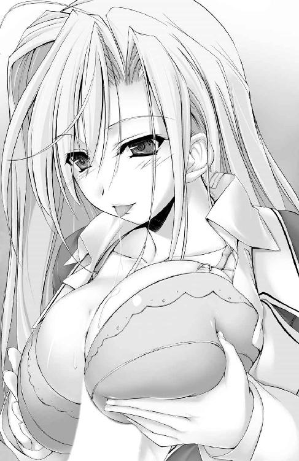
「ふぁっ！ あ、あんっ......今日は、わたしがしてあげようって、んく、思ってたのにぃ......っ。んっ、ちゅっ......ふ、ぁぁっ、また、ビクンッて大きくなったぁ......」
また、熱く蕩けた吐息で尿道口のあたりをくすぐられた。背筋を駆け抜ける切なさに、ますます肉棒は反り、乳肉の谷間で鼓動する。
「は、ぁぁぅ......ッッ！ 俺の......全部おっぱいに......隠れちゃって、る......！」
誘発されて呼吸を荒く乱し、吐きこぼしながら、腰をはね上げては乳肌のすべやかな感触を蹂躙し続けた。レース地のブラジャーで締めつけられ、姫君自身の手で寄せ上げられた乳谷を、摩擦するほど凶悪にくびれを増す肉傘で掻き分け、存在を刻むように掘削する。
「ん......ぢゅっ......んふふっ」
亀頭を啜って惹きつけておいて、目元だけで妖しく笑う。うっとりと細められた碧眼がそろりと視線を持ち上げて牡の視線と交錯した。たったそれだけのことで、脊髄反射するみたいに肉棒を快感が奔り抜け、電撃を浴びたように全身が小刻みな痙攣を始めてしまう。
意識しないままに伸ばした両手が、左右それぞれから肉棒を拘束する乳肌へ。レースの布地の上からたっぷりの肉マリを支えている、シャルロットの手のひらの上をかすめてから、たわわな膨らみの頂上あたりに接着した。
「んぷ......っ、やぁんっ、さ、触られたらっ......すごくドキドキしてるの、伝わっちゃう......んっ、んんんふぅぅっ!?」
「ごめん、我慢......できない、みたいっ......！」
一転、恥じらいに満ちた視線で訴えてきた彼女の意思を、できることなら尊重したい。けれどシルヴィアとの特訓で疲弊したはずの身体は、求め待ちわびた肌と肌との触れ合いに対し自制がまるで利かない状態にまで陥っている。
今も、ブラジャーの上に這わせた手のひらで揉み込むように乳肉をこねくり、つまんで、なで回しては肉欲をたぎらせていた。微細な指先の振動にすら悶え、その都度甘く息づくシャルロットの反応に歓喜する。しきりに脈打つ肉棒の先端で、とうとうくぱりと開いた尿道口から半透明の先走りがだだ漏れ始め──。
「んちゅ、ちゅぅぅっ......ごくん。んんっ、に、苦ぁっ......哲平、これって？」
はぁ、はぁと息を継ぎながら、「おしっこなの？」なんて無垢な表情をして、そのくせ淫靡に頬から耳元までを薄紅に染め、唾液と先走りとでテラテラ濡れ光る唇でたずねてくる。
（だめだ、もう......！）
ズクンと疼いた肉幹の根元で、茹だる白濁のマグマが装填され始める。我慢の限界を訴えるように前のめりになりながら、そっと艶やかな銀髪をなでつけた。
「んくっ！ あ......っ、硬い、のが擦れて......指先でも、感じるよ......」
左右から圧迫と摩擦を加え続けるマシュマロのように柔らかな肉絨毯の中で、唯一コリコリと幹を擦っては震わせる、芯の入った感触。ほぼ同時に指腹でも捕まえた硬い、突起状の感触。おおよその正体の予測をしておいて、ブラ越しにぷっくりと浮いたしこりを、左右同時にこね潰した。
「きゃふぁっ！ あっあぁっ！ んっ......んぢゅ、ぢゅりゅるるるるっ！」
悶え、震える身体を彼女がねじる。その際に一緒になってよじれた肉幹から、いっそう甘い衝動を伴った先走りが噴き漏れて、乳肉に降り注ぎ、白い柔肌をイヤらしく飾り立ててゆく。保健室の天井の明かりにライトアップされて、よけいにヌラヌラ濡れ輝いて見える。
ヌチヌチと谷間で響く卑猥な水音と、先走りに唾液をまぶしたおかげでよりいっそう粘り気を帯びて密着してくる乳肉の、凶悪なまでの柔らかさ。
さらには喘ぎを堪えるためにぱくりと亀頭に吸いつきひときわ激しい吸引で啜られた──その根元から、ドクドクと、発射を待ちわびる白濁のマグマが鼓動とともに迫り上がってくる。
「ぁ、ぐっ......シャルっ、も、もぉ出るからっ。く、口を離し......っくぅぅぅぅ!?」
このままでは、彼女の口の中に漏らしてしまう。下腹に力をこめ、迫る限界を無理に引き延ばしながら告げた言葉に、肉棒を食んだまま。頬を亀頭の形にぽっこり膨らませたプリンセスは首を振り、逆により強い吸引で亀頭を責め立て始めた。
「ぢゅりゅっ......ぢゅ、ぢゅぷるっ！ ん、ちゅ、えろ......っ、れる、ぐちゅ......っ！」
舌の腹でカリをくすぐったかと思うと、間髪を入れずに窄められた唇に、漏れ出た先走り汁を啜り飲まれる。ぎゅっぎゅっとリズミカルに、強弱を加えた乳肉の圧迫も追随して、白濁の解放を迫ってきた。付け根から乳肉に絞られて、そのまま上方向に擦り立てられる。
充填された欲望の塊が乳肉の摩擦に誘導されるように肉幹の中を迫り上がっていくのを、愉悦の只中に溺れながら、鮮烈に知覚させられる。
「くぅ、うっ！ も、もぉほんとに......出っ......！」
根元から先端まで肉の悦びに痺れさせられた状態で、腰を引くことなど、できるはずもなかった。いいよ、と目だけで合図をくれる。同時にいっそう熱を孕んだ口内で、たっぷりの唾液が爆発寸前の亀頭にまぶされて、突き上がる射精欲求までが吸い絞られ、引きずり出されていくような、そんな錯覚に襲われた。
「んぢゅぅぅぅぅうぅぅっ！ ぢゅぽっ！ れろるっ！ らひて？ たくふぁん、んぽっ！ 哲平の熱いのっ......ぁぷ！ 気持ひいひひょうこっ、らひてへぇぇぇっ！」
ほじほじと舌先で尿道が抉られる。喉の上、ざらざらとした部分に亀頭を押しつけたまま、とどめとばかり左右から乳たぶが肉幹にのしかかってきた。ぐぽっと目一杯咥え込んだ唇の巻き込みに、釣られるように。
引きずり出された肉欲の塊が、とうとう亀頭の傘を突き抜けて──。
「んんっ！ ぐ......シャルぅぅぅぅぅっ！」
どくぅっ──どぷっびるるるるるるるるるぅっ！
溜めに溜めた濃厚な白濁が、放尿よりも激しい勢いで吐き出され、プリンセスの喉を叩く。予想以上の濁汁の勢いに、口内全体が引き攣れて、その振動でまた、よけいに脈動する肉棒から白濁汁が打ち放たれた。
「んぷっ!? んんっ、んーっ！ んく......ごきゅ、ん......んふーっ、ふっ、ふぁむっ......れんぶ、飲んれ、あげる、ぅ......んふぅ、らからぁぁ......ごきゅっ」
時折せき込み、うっすら涙の浮かぶ瞳を白黒させながら。喉を鳴らして白濁を嚥下して、また健気に乳と唇で肉幹を締めつける。
「ぁあっ！ ぐ......！ まだ、出るっ！」
びゅぐぅっ！ びぐっどぷどぷんっ！ びゅっ、ぶびびびッ！ びゅぐぶうぅぅぅッッ！ 小さな口の中にとどまり切れずに、飲み下すペースよりも多く放たれた濁液が、どろりと口端から噴き漏れ、泡立って、形良い顎を伝い制服のスカートへと醜いシミを刻む。
「ごめんっ......俺、我慢できないから。無理......しないっ、で......あぁくっ......！」
吐精の衝撃に酔いながら、痺れて笑う膝をどうにか支えるのが精一杯で、吸いつくプリンセスの唇から肉棒を引き抜くことができない。だから、無理はしないで口から肉棒を吐き出してくれていいのだと、何度も念を押して忠告する。
「無理なんれ、ひてないもろ......んくっ！ ぢゅっ、ぢゅずぅぅぅぅぅ......んぷぁ」
泣きたくなるくらい、嬉しかった。啜られる肉棒の先端から、脈打ち白濁を打ち出す根元まで、一分の隙間もなく唇で、乳肌で、彼女のぬくもりと献身に包まれて、射精のもたらす甘美な衝撃に溺れ、歓喜する。シャルロットの吸引が続く限り、射精の快感は長引き、どこまでも牡の心を蕩かせて。
「んぢゅぅっ......ぢゅりゅるるるっ。んふ......っ、まら、れてる......てっぺ......らいふきらよ......んぢゅぅぅっ！」
まるで歌うように紡がれる愛の告白と、相反して卑猥に轟く、くぐもった吸引音。愛しさを増長させる亀頭への刺激も追加され、子種を喉奥に注ぎ込みながら、自然と右手は艶やかな銀髪へと伸びていった。
「っふ......あ......。てっ、っぺい？」
「ありがとう......シャル。大好きだよ」
吐精の甘美にまどろみながら、そっと彼女の髪を梳いて、なでる。一国の姫に精液を飲ませた。その仄暗い悦びよりも、瞬間的に増大した愛しさが勝り、いつまでもこうして触れ合っていたいと、心底から願う。
「ダメよ哲平......そんなに、優しくされたらわたし......離れられなくなっちゃう」
幸せ気分を吹き飛ばす、たっぷりの憂いを帯びた、彼女らしからぬ声音だった。やがて、嗚咽を上げながら、今まで肉棒を咥えて放さなかった唇が、ゆっくりと、ずっと堪えてきた激情の残りを搾り出すように吐き出し始める。
「......っ。ずっと......我慢してたのに。哲平のこと好きになっちゃ......いけないんだって、ずっ......と、我慢して......どうしよう。もう離れたくないって......思っちゃってる......」
嗚咽を堪えてたどたどしく、やっとの思いで気持ちのすべてを告げたプリンセスの瞳から、抑えきれなくなった大粒の涙がいくつもこぼれては床を濡らす。彼女自身の制服のスカートにも無数の黒い、涙のシミが刻まれていく。
「どうして......そんなに、自分の気持ちを抑えようとするの」
ずっと、問うてみたかった言葉。こんなにも気持ちを伝え合ったのに、また、彼女が離れていってしまおうとしている。そんな焦りと不安が、これまでどうしても口にできずにいた疑問を舌に乗せ吐き出させた。
問われた少女──いつもより幾分か幼く映る、今にも泣き出してしまいそうな彼女は、ゆっくりと、吐露するように抑えてきた気持ちを吐き出し始める。
「だって......わたしは......この冬が終わったら、帰らないといけないのよ？ 日本にずっと住んで、お爺様の跡を継ぐ哲平のそばにいることはできないの......！ でも、それが、王女としてのわたしの......務めだからっ。だから、我慢しようって。だか......らっ」
彼女は留学生で、卒業式を迎える三月には母国へと帰ってしまう。薄々勘付いていた、けれどなるだけ考えないように、意識の隅に追いやってきた現実。
悲痛なシャルロットの告白に、胸が引き裂かれる思いがした。たった今まで誰よりも幸せだったのに、聞かずに浸っていればよかった。一瞬だけ、情けない感情が噴き上がる。
「会いに行くよ。夏休みも冬休みも。なんだったら休日のたびに通ったっていい」
すぐさま首を振って弱気を追い出し、射精直後の激情の赴くがままに口走った。
祖父の威光を利用すれば、有馬の財産をもってすれば、可能なこと。けれど、そんなことをして会いに行っても、きっと彼女は喜ばない。わかっていたはずが、この時ばかりは──何か言って引き留めないとシャルが遠くへ行ってしまう、暗闇よりも恐ろしい危機感に突き動かされ、滑る舌を止めることができなかった。
「お爺様が、哀しむわ」
予想通りの悲しみによどんだ声音で、少女は小さく首を横に振る。
「それでもっ。俺にとって、シャルはたった一人の......大切な女の子だよ」
がむしゃらだった。頭の整理もつかないまま、それが相手にどう思われるかなんて考えもせずに、想いの丈をぶちまけていく。
「そんな風に言われたら......甘えたくなってしまうじゃない」
一瞬だけふわりと、優しい風が舞い戻る。舞った銀髪に彩られて、彼女の微笑みが届けられた。
「シャル......っ！」
しゃくり上げる涙声に合わせて震えている、その華奢な肩先を激情に任せて抱き寄せる。好きなだけ甘えて欲しい。そう伝えるように、ぎゅっと、冷えてしまった彼女の身体を温めた。
一瞬だけびくりと跳ねた後。まるで童女のように一切の装飾を取り払い、堰を切って泣きだした。いつもの優雅さをひそめた姿に、胸が詰まる。力強く抱いているはずなのに、腕の中の彼女がまるでふっと掻き消えてしまうんじゃないかとさえ思ってしまう。
「......るの」
「えっ......？」
あまりにか細い声だった。だから聞き取れずに、問い返してしまう。そして。
「国に帰れば、すぐに......婚約発表、されるの......っ」
聞きたくなかった。信じられない言葉を、聞いてしまった。
（シャルが、婚約？ 誰と......俺じゃない、誰とっ!?）
ただでさえ激情に乱れていた胸の奥が、ミキサーでぐちゃぐちゃに混ぜられたみたいに混乱する。うるさいくらい鳴り響く鼓動が、耳について離れない。吐息の乱れと同時に、めまいまでが誘発されて、彼女の身体がなければ倒れ込んでしまいかねなかった。
その無様な様をしっかりと見て取って、今度は彼女のほうから目一杯強く、抱き締めてくれる。そして、切々と真実を明かしてくれた。
「お相手は......会ったこともない人よ。お父様が決めた、ひと回り以上も年上のおじ様」
「シャルは、それでっ......！」
それでいいのか、なんて聞くまでもない。目の前の彼女は泣き腫らして、涙でぐしょぐしょの、普段の優美さからは程遠い顔をして震えていた。
「いいわけないじゃない......だって、わたしも......哲平のことが、大好きなんだもの！」
「だったら......！」
国として決めた重大事を、王族の一員たるシャルロットの一存で軽々と覆せはしないのだと、頭の中で理解はできていた。けれど納得しきれない心が反発し、反論を舌に乗せる。
「......ずっと、ずっと言わなきゃって、会うたびに思ってたのに......ごめ、なさい......っ」
荒ぶる声に身を竦ませ、いったんは収まった嗚咽をいっそう酷くして、彼女は途切れ途切れの謝罪を口にした。痛ましいその姿に、謝られているほうの胸が張り裂けてしまいそうになる。
謝らないで、これからどうしよう──話したいことは、それこそ時間が惜しいくらいにたくさんあった。なのに、唇がうまく動いてくれない。乾いた喉と舌が、貼りついたようにぴくりとも反応してはくれなかった。
「苦しいの......っ！ 哲平を大好きになってくたびに、さよならしないといけないって思うから、胸が締めつけられて......それでも、好きだって気持ちに嘘、つけなかった......」
衣服も整えぬまま、腕の中で震え続ける、細くて華奢な身体。柔らかなぬくもりはそのままだったけれど、印象はずいぶんと違ってしまっていた。いつもの柔らかな笑顔も、洗練された仕草も、なにもない。ただ泣きじゃくる彼女は、本当に儚げで、小さく映る。
見上げた窓の外はもう星々のきらめきに照らされ始めていた。肌寒く凍える身をかばうように抱き締め合い、シャルロットの嗚咽が止まるのをじっと待つ。
どうすればいいのか、どうすれば、よかったのか。哀しそうなシャルロットの顔なんかこれ以上見たくはなかったから。
「俺だって......もう、自分の気持ちに、嘘なんかつけないよ......」
自らに、それとも腕の中で涙するプリンセスに。誰にともなく、やっと吐きこぼした心情は、再度見上げた、窓の外。嫌になるくらいの暗闇に吸い込まれ、掻き消えていった。
寝転がるベッドの上。頭に敷いた枕の座りが悪い気がして、幾度となく寝返りを打ちながら、天井を見つめる。明かりもつけないままの自室にまた、眠れぬ夜がやって来ていた。
「シャル......」
声に出して大好きな女の子の名を呼んでみる。保健室を出たのは、八時を少し過ぎたころだった。別れ際の哀しげな瞳、迷うように揺らめいた碧眼が思い出されて、胸がまたシクシクと痛みだす。痛みを打ち消すように、今日あった出来事を思い返してみる。
シルヴィアと特訓をし、気絶して運び込まれた保健室で、肌と肌で触れ合った。気持ちを伝え合い、同じくらいに愛しさを共有できている。そう、確信した、その直後に──彼女の憂い顔が王族という肩書きに起因していることに、気づかされた。
『苦しいの......っ！ 哲平を大好きになってくたびに、さよならしないといけないって思うから』
最後は終始泣き通しだった、まるで助けを求めてさすらう迷子の童女のような目をしてすがりつくばかりだった、シャルロット。彼女には親が決めた、顔も知らない婚約者がいて、国に帰ればすぐにでも婚約発表がなされてしまう。だから、彼女はいつも最後の一歩を踏み出さずにいたのだ。
（それなのに......今日。もう昨日か......学園で、保健室で俺とシャルは触れ合った）
シャルロットが見知らぬ相手との結婚を望んでいないことぐらい、脳味噌がついているのなら誰にだってありありと見て取れた。それくらい彼女は困窮し、感情のままに取り乱して泣き続けていたのだ。
不意に、シャルロットの親友であるシルヴィアの顔が思い浮かぶ。シルヴィアかその父であるヴィンセントに頼んで、なんとかシャルロットの家族、とりわけ父親の本意を聞き出してもらえれば──。
（......いや、ダメだ。俺とシャルの問題なんだから、誰かをあてにしてるようじゃ、ダメなんだ。自分たちの力で、解決しなきゃ）
そうでないと厳然たる王族の義務に従っているであろうシャルロットの心を、ましてや一国の王である彼女の父親を動かせるはずもない。
（そうだ......王族のシャルと添い遂げるには、それ相応の覚悟が必要なんだ。わかってた、はずじゃないか......っ）
これまで、考えてこなかったわけじゃない。いくらシャルロット自身が逃れたがっていても、彼女には必ず付いて回る、プリンセスという肩書き。決して無視できるはずのない重荷を分かち合うだけの覚悟。それなしでは、彼女の隣に立つことすら許されない。
シャルロットほどでないにしろ、有馬という肩書きを背負う身。手を取り合い歩むための障害は、数え切れないほどあった。
思案は続く。果てしのない闇を裂いて進むかのような、行く先の見えない不安と焦りに駆られながら。
『好きなの......あなたが、大好きなのっ......！』
校門を出て別れるその際にまで握った手を離さなかった、愛しい人の言葉を幾度も反芻する。
「そうだ......一番大事なのは──」
やがて夜明けが訪れるころ。ようやく見えてきた迷路の出口の明るさに目をしばたき、同時に深い睡眠欲求に襲われて──倒れ込むように、いまだうまく座らない頭を枕に押しつけ、束の間の休息へといざなわれてゆく──。
有馬邸の広大な食堂に、長く、重たい沈黙が舞い降りていた。
昨日の告白と謝罪を気に病んでいるのか。それともまだ結論の出ない中呼び出され、二人きりでいることに居心地の悪さを感じているのか。おそらくは、その両方だ。手を伸ばせばすぐ触れる隣の席に座っているのに、やけに距離を感じる。うつむいたままの彼女のらしくなさに、また胸を締めつけられるような切なさが去来した。
「......だんまりな女の子を連れていても、楽しくなんかないでしょう？」
嫌ってとでもいうように、似合わない暗い顔でうつむいている。シャルロットは、「どうしようもないことだから」と諦めてしまうつもりなのだろうか。
でも、本気で嫌われたいのであれば、そもそも誘いに応じる必要などない。突然の一方的な呼び出しなど、すっぽかしてもよかったはずなのだ。
（だけどシャルは来てくれた。今も、俺のすぐそばにいてくれてるんだ）
お気に入りのブラウスとスカートで、目元には昨日の──もしかしたら今朝方まで続いたのかもしれない涙の跡を隠すように、薄いアイラインが引かれてある。
目線を落とし、黙りこくって、それでも逃げることなく来てくれた。今も審判を待つように肩を震わせているその姿を見るにつけ、彼女は王族としての責任と自分の本当の気持ちとを量りにかけて、迷っている──そう、思えて仕方がなくなる。
だとすればこれが最後のチャンス。この機を逃せば、愛しい笑顔を永遠に失ってしまう。
「......寒くなってきたし、そろそろ始めちゃおうか」
自分の気持ちのためだけじゃなく、彼女自身のためにも。大好きな人をつなぎ止める。そのための決意と覚悟は昨晩、いやというほど長く続いた思考の果てに、済ませてある。先に決心した強みか、気負いなどよりもむしろシャルロットに笑顔を取り戻してあげたい、そんな気持ちが強く胸の内にくすぶっていた。
二人きりで座るには広すぎる、長い長いテーブル。有馬家の食卓の端にちょこんと座る二人の目前に置かれた小さな土鍋は、未熟なりに考え出した、シャルロットの笑顔へと続く第一歩だ。
つい数時間前、仮眠から覚めてすぐにあわてて買いに走った真新しい鍋。下に敷かれたカセットコンロも、豪奢な食堂にはそぐわない安っぽい一品だ。
だが、それでいい。有馬哲平としてではなく、ただの哲平としてもてなすのだ。無駄に豪華な器で飾り立てたくはなかった。
「危ないから、顔は近づけないでね」
正体不明の鍋の中身を覗き込もうとする、しょげていても相変わらず好奇心旺盛な姫君を制し、一応の注意事項を告げておく。鍋の中身の仕込みはもう終わっている。後は今まさに点火したカセットコンロで、具材を温め直すだけだった。
「もう少ししたら、温まると思うから」
昨日、強く抱き留めても決して拒絶はしなかったシャルロット。そして、王族だから。国に帰る運命だからと、小さく、哀しげな瞳でかぶりを振った。
その彼女の心をもう一度揺り動かし射止めるためには、素直な気持ちでぶつかるしか他にない。考え抜いた末に結局原点へと戻ってきた。
辛い時こそ前を向いて歩くのだといつも言ってくれた、母の言葉を胸に秘め、上げた視線をまっすぐに彼女──シャルロットにぶつける。
いつもにこやかだった青い瞳は、今日ばかりはうつむいたまま、なにも応えてはくれない。ただ時折、静寂を厭うようにぐつぐつと煮え立つ鍋のほうに、目線をちらちら向けるだけ。すぐそばに座る、広い食堂でたった二人きりのパートナーの顔は、一度として見つめてはくれなかった。
（やっぱり、そんな顔は似合わないよ......シャル）
固い決意を詰め込んだ胸にさえ、ズキリと容赦なく、鋭い刃は突き刺さる。
（俺の痛みなんか、今はどうだっていいんだ......弱気になってる場合かよっ！）
彼女を振り向かせると誓ったのだ。シャルロットがまだ迷いを振りきれていないのなら、今はただ、彼女の哀しみを少しでも和らげてあげたい。
「そろそろいい、かな......」
煮えたぎる土鍋のふたがカタカタと鳴る、その音が次第に大きく、間隔を狭める。泡を吹き始めたふたをそろりと持ち上げると、途端に食欲をそそるにおいが鼻先をかすめ、広がった。
当然、遠巻きに興味を惹かれていた彼女の鼻先にも、胃袋に染みる香りが届けられる。
「前に、話しただろ。日本では冬に鍋を食べるんだって。初めて作ったから美味くないかもしれないけど......俺の、母さんの味。シャルに、一度食べてもらいたかったんだ」
鍋の中身は白菜に長ネギ、エノキ、そして肉団子。味付けもあっさりめで、どこにでもある、ごくごく普通の鍋料理だった。
「......っ！ 哲平の、お母様の？」
白い肩先をこれまでとは違う意味で震わせて、やっとシャルロットの顔が上がる。そして、ゆっくりと、宝石のような輝きで、迷いを示すように揺らがせる瞳がパートナーの瞳をまっすぐに見据えた。
「冬の楽しみも、春の楽しみも。まだまだシャルに教えてあげたいことがたくさんあるんだ。ずっとシャルと一緒に......楽しいことだけじゃなくて辛いことも......分かち合っていきたいって、思ってる」
目を逸らすことなく想いのすべてを伝え、彼女ももう視線を外したりはせずに、最後まで聞き届けてくれた。
「わたしが......王女でも？ きっと、苦労をさせてしまうわ」
食欲をそそるにおいが立ち込める中。スンと鼻を啜って、「辛い想いをさせたくないの」、そう彼女は瞳で語る。
「俺が好きになったのはヘイゼルリンク公国のお姫様じゃないよ。シャルロットっていう、世間知らずでほっとけなくて、でもいつも嬉しそうに微笑んでくれて......温かい気持ちを俺にくれる、世界でたった一人の大好きな女の子なんだ」
彼女が引き攣るみたいに息を呑むのがありありと見て取れた。
間を置かず畳みかけるように、けれど、決して焦ることなく緩やかに。いったん開いた唇と舌はとどまることなく感情を吐き出していった。
「シャルにはいつだって笑顔でいて欲しいから。だから、君が国に帰ることで哀しむっていうんなら、俺は......俺はシャルを離したくない。それが......俺の正直な気持ちだよ」
理屈じゃない。おたがい、背負った肩書きに対する責任があることも、周りに迷惑をかけてしまうだろうことだって重々承知の上だ。昨晩ずっと悩みに悩んだ末に導き出した結論。
（それでも俺はシャルと一緒にいたい）
迷いはとうに捨てていた。
「てっ......ぺい。ほん、とうにっ......？ 本当に、それで、いいの？」
「うん。もう、逃げたりしないよ。だから......シャルの、正直な気持ちも聞かせて欲しい」
鍋の中身をよそったお椀を差し出しながら、触れた手と手のぬくもりを共有する。重なり合う視線。そのすぐそばに、彼女のぷっくらと弾力豊かな唇が息づいていた。
「わ、たしだって......。わたしも、哲平のことが好き。一分一秒だって離れていたくないくらい、大好きよ」
感極まって震える声音に合わせ、手にしたお椀の中にいくつもの涙の雫が注がれる。波打つ中身がこぼれそうになって、おぼつかない彼女の手がテーブルの上に椀を置く。
それからゆるり、立ち上がり──そっとまぶたを閉じた美貌が差し出された。昨日、指先で、肉棒で愛でた豊かな膨らみが、二の腕に抱きついてきて、ふにふにと形を変える。
「シャ......んっ」
やっと応えてくれた。膨れ上がった愛しさを胸にその人の名を呼ぼうとして、瞬きひとつする間に唇は塞がれていた。
「哲平、てっぺい......。ん、ちゅっ......んんぅっ」
ひとしきりついばむような仕草で唇中を食んでから、そっと名残惜しげに離れてゆく。くすぐったさを覚えたのは身体ばかりじゃなかった。ようやく愛しさで満たされた心も、無性に照れ臭い気分をむずがるみたいに、小躍りしている。
「今までは、将来のことが決まってることが当たり前だった。でも、哲平に出会ってから。あなたが与えられた環境に流されずに努力してる、その姿を見て気づいたの。他にも、たくさんの道があるって......世界が急に広くなったみたいで、すごく、嬉しかった」
まだ、昨日泣き腫らした彼女のまぶたは痛々しいまま。けれど今はその青く澄んだ瞳に涙はなく、微笑をたたえる唇から哀しみの嗚咽が漏れることもない。
「ずっと......一緒に、いてくれる？」
取り戻した笑顔で美貌を華やがせ、愛しい人が身を寄せてくれる。しなだれかかってきたその腰を力強く抱き締めて、今度はこちらから。
「んむぅっ。て、てっふぇ......ちゅ、ちゅぅぅっ、んちゅぅぅっ」
押し当てるだけのぎこちないキス。すぐに応じた彼女の舌が、ぬらぬらと唾液のスジを引いてマーキングを施していった。唇だけでなく、鼻すじ、目尻からまぶたの上。額に、両頬。耳たぶからうなじに滑り下り、しまいにはボタンを外されて胸元にまで。
止め処なく降り注ぐキスの雨を、くすぐったくも喜ばしく受け止めて、いっそう抱いた腕に力を込める。
「わたしも、もう逃げない。ずっと、あなたのそばにいたい。哲平を大好きだって気持ちから、逃げたりしない」
決意を秘めたまなざしが、一段と強く笑顔の輝きを高めていた。
「約束するわ。もう、哲平のそばを離れないって......約束する」
言い終えるのを待つことなく、また彼女からの熱烈キス。諸手を挙げて抱きつくその胸元で、豊かな膨らみがたぷたぷと弾んでは心地よさと安らぎ、そして高揚を与えてくれる。
「俺も......約束する。絶対に、シャルの手を離したりなんかしない、ずっと、そばにいてみせるから」
鍋の中身が冷えてしまったのに気づくまで、何度も、何度も。飽くことなく唇同士、押しつけ合い、乱れた鼻息を鼻先で浴びてはおたがいの熱っぽさを知る。これまでの分を取り戻すかのように──給仕をするべく優が食堂に姿を見せる、その直前までふたつの身体は抱き合い、ぬくもりを共有し続けるのだった。
「どうやら......私の心配は気苦労に終わったようだ」
淡い桜色の振り袖を着こなし、少しだけ歩きにくそうにしながら一番に駆けつけてきてくれたシルヴィア。彼女は開口一番頬をほころばせそう言って、親友と、元婚約者と、二人分の幸せを、友人として快く祝福してくれた。
「まったく。私たちが誰も気づいてないとでも思ってたのかしら」
「だとすれば、見くびられたものです」
顔を合わせるなり注文をつけてきた浅黄色の着物を着た聖華と、さりげに聖華とお揃い柄、臙脂色の着物を身につけた綾乃も、今は鍋を囲んで笑顔で談笑している。
（心なしか聖華さんと話す時の金子さんは顔が華やいでいるような......気のせい、かな）
「おお！ このたびはお招きいただき感激至極ですよ有馬さん。これからもぜひ竹馬の友として、この根津、晴彦！ 有馬さんとは末永くお付き合いしたいものです」
「どうしてこの人、いつもこんなにハイテンションなのよ......」
羽織袴で現れた根津君の必要以上に音量のあるあいさつに、竹園さんのぼやきが重なって、ちょっとした疑問は吹き消されてしまう。花模様鮮やかな桃色の着物を着た竹園さんに引きずられるように、根津君は喧噪の中へと消えていった。
「ね、優さん。これって本当にお兄ちゃんが作ったの？」
「はい。私どもが用意いたしますから、と申し上げたのですが。どうしてもご自分でお母様の味を再現なさりたいと申されまして」
厨房に一番近い、壁一枚隔てた向こうでは、姉と同色の着物を着てちょこんと腰かけたマリアが、いつも通りメイド服姿の優と談笑している。
（優さんにも着物着てもらいたかったんだけど......）
『私は有馬に仕えるメイドとして、給仕などをこなさなければなりませんので......』と、やんわり辞退されてしまった。
どこまでも生真面目で少しだけ意固地な彼女の反応を思い返し苦笑する。だけれどその態度は有馬に奉公することに誇りと喜びを感じてくれている証拠でもあるのだ。
（世話好きな性格もそうだし......ほんっとメイドが天職、なんだろうなぁ）
今も鍋料理の汁をこぼしたマリアの世話を甲斐甲斐しく焼いている。
「マリア。だからそうがっつくものではないと、さっきから言っているだろう」
案の定、妹の動向を見守っていた姉騎士からのお小言が飛んできて、身を竦めたマリア。それでも姉妹は揃って笑みをこぼし、宴を楽しんでくれているようだった。
（みんな、楽しそうにしてくれてる。呼んでよかった......かな）
シャルロットと二人きりで気持ちを伝え合い、冷めてしまった鍋料理を温め、たいらげた後。
『こんなに美味しいんだもの。社交部のみんなも呼んであげましょう？』
そう提案してきたのは、ほかならぬシャルロットその人だった。
「ふふっ。みんな着物姿で......なんだかいつもと違って見えるわ。とっても楽しそう。ここだけ、お正月が来たみたいね？」
隣室のドアの隙間からそっと仲間たちの動向を覗き見て、抱き締めた腕の中からシャルロットが微笑んでくれる。この笑顔が見たかったからこそ、どんな苦労も厭わずに、一歩踏み出すことができたのだ。
「哲平のアイデア、大成功ね」
和装でみんなに集まってもらおうという提案も、正月は自国で過ごすと寂しそうに告げたシャルロットに少しでも日本の風情を味わってもらいたいがため。そっと覗き見ていたドアを閉めた彼女の屈託のない笑顔を捧げられて、狙いが功を奏したことを知り、胸の奥が安堵と喜びで満たされる。思わず、抱きつく腕に力がこもってしまったほどだ。
「シャルの着物姿も似合ってるよ」
背中を向けた彼女に後ろから抱きつくような姿勢でいるために、よけいに色っぽく見えるのだろうか。牡丹模様、藍色の着物を着たシャルロットはいつも下ろしている長い髪の毛を結い上げていて、耳裏からうなじにかけての白い肌色が新鮮に、かつ眩しく映る。身じろぎした際などには鎖骨のラインまでが覗けてしまい、否応なしに鼓動は高鳴りっぱなし。視線は釘付け状態にさせられた。
「ありがとう。哲平の紋付き......えっと、袴だったかしら？ 和服姿もとっても素敵よ」
「惚れ直しちゃう？」
冗談で聞いたのだけれど、彼女はにっこり、極上の笑みを浮かべてこくりとうなずく。あふれる愛しさが我慢できなくなって、少しだけ強めに抱き締めてしまった。
「......でも、着付けてくれた優さんにはいろいろと迷惑をかけてしまったわ。これからは、自分一人で着られるようにならないとダメね」
称賛を受けてすぐに、恥じらうみたいに身を縮こまらせる。隠さないでと背後から腰に回した手で上体を起こさせ、よりいっそう密着を強めてしまう。
「自分で着物を着られる若い人なんて、日本人でもそうそうはいないよ」
「そ、そうなの？」
たわいない会話を交わす間にも、おたがい押しつけ合った股間と尻肉とで、相手の高揚と熱気とを鮮烈に感じ取っては、ますます肌と肌、吐息と吐息を絡ませる。
隠れるように駆け込んだ、食堂に隣接する厨房内に二人きり。せっかく呼んだ仲間との談笑にも加わらず、すでに用事のない場所に身を潜めた。理由は単純明快なものだった。
「だ、だって......哲平ともっとくっつきたいなって、思ってしまったんだもの......っ」
自分から皆を呼び寄せる提案をした手前、よけいにがっつくがごとき行動が恥ずかしいらしい。いっそう火照らせた身体をよじりながらシャルロットがつぶやく。
（でも、俺だって同じ気持ちだよ、シャル）
わざわざみんなのいるすぐそばでしなくても、などと野暮なことを言って、せっかく訪れた機会を無下にするつもりは毛頭ない。だから、腕の中の彼女を、これからずっと離さない。そんな意思表示を込めて力強く抱き締め、添えた指先で彼女の顎を振り向かせ、キスをする。
「んむ......っ。哲平のキス、野菜とお醤油の、味がする......おいしっ、ん、ちゅーっ」
間髪入れずに舌まで差し入れてくるシャルロットの、打ち解けた笑顔と甘えるように転がる声音とに心がくすぐられた。同時に舌先で口内のあちこちを突っつかれて、むず痒さと切ない衝動とで股間がたぎる。
「はふ......ぅっ、やんっ......お尻に、当たってる、ぅう......！」
「シャルのことが欲しくて......こんなに硬くなってるんだ、ん、んぅぅっ！」
ズリズリと、着物のすべやかな感触を味わいながら、薄布一枚隔てて息づく尻肉の厚みのある弾力と吸いつくようにきめ細やかな肌艶を連想し、ますます熱を孕ませる。
「シャル......っ」
腰の芯に溜まりゆく性的衝動に抗えずに、両手を彼女の一番の性感帯──今もすぐ目と鼻の先で揺れている乳房へと抱きつかせた。
「ひゃ、あっ、ぁんっ......！ て、てっぺ、そ、こぉっ！ はぁぁぁ！ 少し強い、わっ、あぁぁーっ......」
洋服よりも締めつけの緩い着物を通して伝わる温み。乳肉に際限なくズブズブと指先が沈み込んでいくような感触。薄布を通して伝わる、たわんでいっそうむっちりとした尻肉にのしかかられて、勃起した幹が歓喜で打ち震えていた。心なしか汗ばんで火照っている気がする、その心地よい圧力に、酔い痴れる。
（ずっと、こうしてたい......ずっとぎゅっとくっついてたいよ）
指先と股間両方で感じる、極上の触り心地に意識を奪われ、背筋を駆ける甘美な衝動に溺れてゆく。
「ふぁ！ あ、あぁぁー......っ。指が、とてもエッチな動き......して、るぅっ」
追随して耳朶を貫いた、通常よりも甲高い、嬌声。愛しい人が快感を覚えている何よりの証拠を捧げられて、よけいに指先の動きは活発に、肉棒も袴を突き破る勢いで膨張し、シャルロットの尻肉を突き上げていく。
「保健室で触った時よりもたぷたぷして、それにずっと柔らかい感じがする......」
もしかして、と指先を上下左右に這わせてみる。
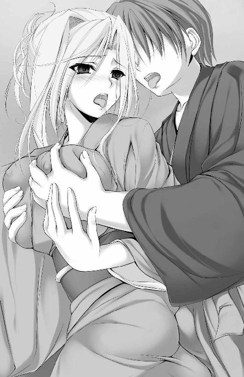
「はっ、あ、あぁぁ......っ、だ、め......せっかく着付けてもらった着物、はだけちゃうっ。お、おっぱい出ちゃうぅぅっ」
指先の動きに合わせて、着物越しの乳肌はやわやわと形を変えた。こねる指を追うようにたぷたぷと揺れ、押し潰せばあっさりひしゃげ、引っ張ればどこまでも餅のように伸びてついてくる。
「シャル......ひょっとして下着、つけてないんじゃ......？」
締めつける物がまるでないからこその柔軟な乳肉の反応。
こくりとうなずいて、あっさり事実を認め、シャルロットは逆に「どうしてそんなこと聞くの？」、そう言いたげに視線を寄越してきた。
「和服を着るときは、ぁ......っ、し、下着はつけないって、聞いたわ」
乳首をこねられる、その甘美な衝動に耐えながら、喘ぎ交じりの返答。
（確かに本来はそうだけど......）
でも今は普通に下着をつける人がほとんどだよ、だとか、ラインの出ない下着を身につけるって手もあって、なんて忠告しようとして、結局口をつぐむ。
今は、揉み込んだ手のひら全体で感じるたっぷりの肉感と、押しつけた股間で感じる湿り気を帯びた股肉の感触、より強く彼女の乱れぶりを感受できる状況に置かれたことを感謝して、ただただおたがいを感じることに没頭したい。
「シャルの身体......すごく熱くなってるのがよくわかるよ」
モニュモニュと指先を沈み込ませる乳肉を、着物の上からこね潰す。同時に、はらりと舞う長髪の狭間で隠れたり現れたりを繰り返す小ぶりな耳たぶに、こちら側の熱気を伝えようと息を吹きかけた。
「やぁん......っ。哲平ったら、いじわるなんだから......あなたのだって、もう......」
──きゅっ！
「んくっ!? シャ、シャルっ、そこはっ......！」
柔乳を揉んで、うなじに吸いつき、幸福な気持ちで胸を、たぎる情欲で股間を満たしていたところに、思わぬ反撃を食って鼓動が弾む。
「ほぉら、こんなにガチガチにしてぇ......。熱いわ、手のひらが火傷しちゃうくらい......んっ、ふ、ふわぁぁっ......また、ビクンッてしたぁ......」
俺の股間のモノが、それとも君の胸の先が──？
問いかける余裕すらなく、肉棒の根元、玉袋のあたりを後ろ手に回した右手のひらでやんわりさすられ、ゾクゾクと快楽の痺れが背筋を駆け抜ける。その痺れに溺れたように、二人とも、合計四つの瞳が揃ってトロリと蕩けてしまった。
「ん、しょ......ゴシゴシ、してあげるといい......のよね？ 前に哲平のお部屋で見つけた本に書いてあったんだから」
「うぇあ!? い、いつの間に......っ、っく、あ、ぁぁぅ！」
見つかったのはどの本だろう。そんな疑問すら肉の快楽の前に押し流されて消える。
根元から幹に沿ってなで上がりながら、時折尻肉で挟んでは裏筋を爪先でくすぐるように刺激されて、正直な肉棒はその都度ドクドクと、歓喜の鼓動を響かせ脈打った。
「ん、ふぁ......っ、ここね？ 哲平の気持ちいいところ。たくさん、たくさん擦ってあげるわね......くぅ、ぅぅぅんっ」
手のひらと、尻肉を使って肉棒を摩擦しながら、彼女自身もまた甘い嬌声を響かせる。恥じらいながらも大胆に揺れる腰つきと、二人きりの厨房内に残響する、乱れた吐息。
シャルロットも、感じている。そのことに気づいた後はもう、相手のぬくもりと昂奮を感じる、そのことだけで頭の中がいっぱいになった。
「哲平の手......すごく大きくて温かい......っ、ん、は、ぁぁっ......ぎゅってされてるだけで、とっても幸せな気分に、やはぅっ！ な、なるのぉ......っ」
着物の上からでもはっきりわかるくらいに勃起した乳首を左右、時間差でつまんでコリコリとこねる。告白を中断されたことを瞳で咎めてきて、けれどすぐに胸先から伝わる甘い刺激に、シャルロットは酔い痴れてしまう。いっそう揺れ幅を広げた尻の谷間で、挟まれた肉棒が火照り狂い、溜まった熱気と肉欲とを吐き出すみたいに脈動を続ける。
「有馬の奴はどこに行ったのよ？」
「はて。そういえばお見かけしてませんね」
「お兄ちゃんなら、確かシャルロットお姉ちゃんと厨房のほうに行ったよ」
（聖華さん、根津君、マリアちゃん。すぐ、近くにみんないるんだ......！）
壁一枚。扉一枚隔てた向こうで、仲間たちが楽しげな声を聞かせてくれている。その声の通り具合。厨房内の二人の状況を知らないで、遠慮なしに響く足音の距離感から、彼女たちが間近にいることを再認識し、背徳めいた高揚で胸高鳴らせる。
「シャルロット殿と......二人でか？」
「まったく。自分たちで呼んでおいて客をほったらかしだなんて。どうせいちゃついてるに決まってるわ」
「聖華様......りんごのように赤らんだお顔も素敵です......」
見事な指摘にドキリとし、直後のうっとりと蕩けた綾乃の物言いに、また別の意味で鼓動が跳ねた。
新たに用意した三つの土鍋が小ぶりだったことと、運び出すのが容易だからと厨房に近い位置から順に並べていったこと。広大な食堂の半分も使っていない配置が、仲間たちをより厨房に近い距離に固まらせる結果を呼び込んでしまった。
「みんなの声が、聞こえるわね......や、はぁぁ、んっ......哲平ったら、声に反応して大きく、してるぅぅ......」
「シャルだって、手と腰の動きが大胆に、ぅあっ！ 大胆に、なっ......て」
二人、同じように状況に酔い、昂ってゆく。
「あ、あぁっ......もっと、強く」
陶然としたシャルロットの声が肉棒に響いてまたドクリと雄々しく吠える。
「苦しそうにしてるから、出してあげる、ね......？」
「あ......ぅぅ！ シャっ......んくぅ！」
あっさりと位置を特定され、袴の結び目がほどかれる。間髪入れずに、いつもののんびりぶりが嘘のような素早い手つきで羽織の裾がまくられて、白く柔らかな指先が侵入した。
襦袢の内側にこもる熱気をまさぐりながら進む、少しひんやりとした指先に内腿をなでられ、引き攣ったように下肢が震える。前触れなく訪れた刺激に抗うこともできずドプリと先走りのツユが下穿きの中に噴き漏れて、よりいっそうの熱を溜め込んでしまう。
「みぃつけた......♪」
下穿きの上端からもぞりと這いずり忍んできた、冷たい五本の指できゅっと握られ、肉棒が跳ねる。
「......ッッ！ ひんやりしてて、シャルの指っ、すごい、いいっ......！」
「出してあげるね......？ 窮屈な穿き物の中から出して、直接わたしのお、お尻に......っ、ん、ふあぁぁぁぁっ......！」
直接、シャルのお尻と。魅惑の光景を想像してより硬く強張った肉幹が、白い指の拘束を振り払おうと跳ね回る。自然、圧力を強めてきたシャルロットの指に肉棒の根元から搾られて、腰の芯で熱い塊がうねり出すのを知覚した。
ず、りゅッ......！
「は......あぁぁぐっ......！」
細指に巻きつかれたまま下穿きから引きずり出され、まくれた長襦袢と羽織をくぐって、勃起した肉欲棒が外気に触れる。こもった熱は幹にしがみつき包むシャルロットの手のひらとの間に溜め込んだまま。剥き出しの亀頭が、弾力に富んだ尻の感触と、着物のすべやかな心地とに触れて、先走りを大量に噴き漏らした。
「ひゃあぁんっ！ か、硬ぁいっ......お尻、焼けちゃうぅ......」
肉棒の熱にも負けないくらい熱い吐息と嬌声とを漏らして、シャルロットの腰がよじれる。わずかに空いた隙間から熱が逃げてゆく。そのことがたまらなく切なくて。
（シャルのお尻も......っ、直接、もっと......！）
隙間に差し入れた右手で、帯をほどく。
「きゃっ......」
彼女が可愛らしい声を上げ身を丸めようとした隙を見逃さず、はだけた襦袢と着物を一緒くたにまくり上げて、目的の場所を凝視する。
シャルロットの股間。尻側から見たそこは、少し脚を開き気味のせいもあって、暗がりながらもツユが煌めいている様子がはっきりと見て取れた。
「も、もうっ。せっかく着付けてもらったのにぃ......」
「ごめん。でも、どうしてもシャルともっと......じかにくっついていたかったから」
言い訳をしながら腰を押し出し、目の前の三角地帯。シャルロットの股下のわずかな隙間へと肉棒を押しつける。
「ひぁっ！ ぁん......てっ......ぺい？」
不安そうな瞳で彼女が振り向き見つめてきた。安心させるように何度かうなずき合ってから──ず、ぬりゅりゅっ......。
ゆっくりと、腰を突き出してくれたシャルロットの内腿の谷間へと肉棒を押し入れていく。壁に手をつき、素股のしやすいように体勢を整えてくれた彼女の身体が緊張と不安と昂奮とをない交ぜに強張っている。
「ぁ......ん、ぎゅっとして......」
求められるままに抱き締めて、同時に前に押し出た肉棒が内腿の谷間を貫き通す。カリ首が腿肉に擦れる時の刺激が腰の芯にまで響いてきて、どぷどぷと先走りの汁を狭い谷間で吐き出した。
「ぅあ。あっ......くぅ......！」
とっさに歯を食い縛らなければ、漏らしてしまっていたかもしれない。大量の、射精と見紛うかのような濃い先走り汁が、滴りながら愛しい人の腿肉に絡まり、染みてゆく。
「ぁはぅ！ またビクンビクンって、お股の間で、は、跳ねてるぅぅ......っ！」
むずがる彼女が腰を振る。モジモジ恥じらって内腿が擦れ合う、そのたびに肉付きのよい腿肉でみっちり挟まれた肉棒の先端──エラの張った傘の部分が摩擦を浴び、歓喜の脈動を響かせた。両腿の圧迫によりカリの手前で堰き止められた鼓動は、痺れるような快楽を伴って幹の根元に堆積していく。
「シャル......っ、少しの間だけ、じっとしてて......！」
「ふぇ......きゃぁぁぁんっ！」
ず、ぬりゅっ、ぬぶぷぷぷっ......。
手のひらにとても収まりきらない尻たぶをつかんで引き寄せ、ぴったりと密着する。肉棒の根元に茂る陰毛がくすぐったいのかしきりに腰を振ろうとするシャルロットの動きを制しておいて、押し出した肉幹で剥き出しの彼女の股間を強かに掻いた。
「ひゃ、あぁっ......ズリズリ、きてるぅっ、ふぁ、あはぁぁぁ～～～っ！ そ、んな、ぁっ、あぁぁっんんんぅ！ 強くしたら、はっ、恥ずかしい音が鳴っちゃ......くぅン！」
幾度となく、止め処なく股間の隙間を往来させた肉幹に、ぽたぽたと滴る蜜が絡む。紅潮し昂奮でふっくらと膨れた陰唇を擦るその都度、甘い痺れが肉棒を駆け巡り蓄積されていった。摩擦の回数を重ねるごとに染み出る蜜の量は増して、やがて掻き混ざり、グチグチと卑猥な粘着音を響かせ始める。
「ゆっくりがいい？ それとも......」
最初は緩やかに、デリケートな箇所をなでるように幹でさすってゆく。
「やっ、あ、はぁ、ぅぅ～っ......哲平の、いじわるぅ......っ」
シャルロットの内腿がもぞもぞ擦れ、挟まれた亀頭がまた悦びの鼓動を轟かせ、噴き出た先走りが彼女の下肢を伝う。その様がまるで、シャルロットがお漏らししたかのように映り──言い知れぬ情欲に襲われた心臓がドクリと跳ねた。
ぐち......ぬぢゅ、ぷぅ......っ。
「は......ああぁはぁぁぁ......っ！」
ゆるゆると腰を振る。それだけで大量の蜜が、焦れて揺らめく尻肉の谷間からこぼれ出してきては牡の幹にまぶされていった。
「いじわる、しな、んはぁぁぁっ!?」
ぬぷぅっ！ にゅぢゅにゅぢゅにゅづぅぅぅっ！
我慢しきれずすがりついてくるところを狙い打ち、量感たっぷりの尻に思いきり腰を叩きつける。そのまま素早く前後にピストンして、恋人の肉と心をこれでもかと揺さぶった。
「っ、ゆっくりでも、早くしても......シャルのあそこはドロドロになっちゃうんだね？」
愛しい人の返事を待つ間、徐々に摩擦の速度と圧力を強め、答えをせっつくように肉勃起の先で股間のスジを突き上げる。その都度尿道口から流入した快楽の痺れが少年の下肢を突き抜け、ますます腰の動きは大胆に、激しさを増していった。
「くぁんっ、やっ、ぁぁはぁぁぁ......も、もっと、ぉぉっ」
「っ、はっきり......言って欲しいな」
摩擦に乗じた肉欲のたぎりで肉幹はすでにパンパンに膨張し、悶える彼女の内腿の締めつけも相まって、いつ暴発してもおかしくない。それでも歯を食い縛り射精欲求に、甘美な誘惑に耐え忍んだのは、ひとえにシャルロットの口からおねだりが聞きたかったから。その一念に尽きた。
「......っ、もっと、つ......よくぅぅ。てっぺ......ぇっ！ あなたの、好きなようにっ、ズリュ、ズリュって擦って欲しいのぉっ......！」
「わかったよ、じゃあ......いくね？」
どうにか平静を装い言い終えて、すぐさま行動に反映する。
ぐりゅっ......ぬりゅっ、ぶぷぷぷぅっ......。
「ひぁぁぁぁぁっ！ ンッ、ンンッ、いい、っよぉ！ てっ、ぺ、んふぅぅンンン～ッ！」
幹を押しつけるように圧力を強める、ただそれだけでジュプリと蜜はあふれ、小刻みに震えるシャルロット自身の内腿を伝い落ちて床に水溜まりを無数に作っていく。
ぶぱんっ！ ぱんっ！ ぱぢゅ！ ぶぴぃっ......にゅぢゅぶぷぷ！
続けざまに加速して擦り立てる恥肉から、グチュグチュとはしたない音色が響き、粘性の強い愛液が滴り落ちてくる。
蜜と摩擦熱にまみれた肉幹が歓喜の胎動を響かせる。応じてヒクつく膣口に亀頭をくすぐられ、汗と蜜と先走りとでぬるぬるの、もじつく太腿にきつくきつく搾り取られて、幹の中を迫り上がる衝動が、少年のまぶたの裏を白く染め上げていく。
（はぁ、あぁっ......シャルが喘ぐたびに、腰の芯が、し、痺れるぅぅ）
彷徨う視線の先で、たぷたぷとシャルロットの豊乳が垂れ下がっているのが見えた。前屈みの彼女の胸元。はだけた和服では隠しきれない、重力とたっぷりの重量に負けて垂れた、母性の象徴。綺麗な髪が遊ぶ背中に覆いかぶさるようにして距離を縮め抱きつくと、すぐさま指先にコリコリと硬い感触が突き当たる。
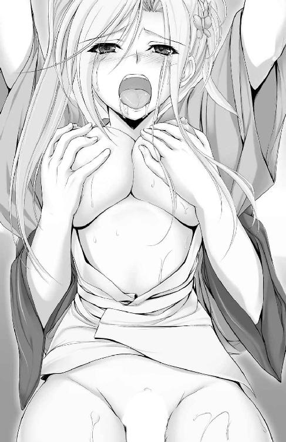
「ひぁんっ!? や、ぁっ、おっぱいも一緒に、なんてぇっ......よ、よすぎちゃうのぉっ。感じすぎっ、ひぐぅぅぅ！ んっんふぁ！ ちくびっ、いいぃぃっ！」
ぎゅっとつまんだコリコリ──左右それぞれの乳先で咲いた桜色のポッチをこね回す。見る間に表情を崩して歓喜の声を上げるシャルロットの、振り向かせた口元からこぼれたよだれをなめ取りながら。
「ん......ちゅっ。こっちも、コリコリ......してあげるっ」
擦られ続けてすっかりトロトロの蜜まみれとなり、ほぐれきった肉ヒダの最上部。割れ目の端で健気に息づく小指大の肉豆。女性器最大の性感帯であるクリトリスを、肉幹の背で思いきり擦り上げてやる。
「ふにゃぁぁっ！ や、は......っ、～～～ァァァッッ!!」
引き攣ったような声で喉を震わせ、のけ反ったシャルロットの膝が笑う。ひときわ強くぎゅっと肉棒に抱きつくように締めつけてきた腿肉の不意の圧迫に、溜めに溜めた肉欲の塊が鈴口のすぐ手前にまで迫り上がり。
「ぐ、ぅ、ぅぅぅっ、き、つぅぅ......っ！」
皮肉にも、強すぎる締めつけによって再度、すんでのところで堰き止められてしまう
「んはぁっ、は、はぁぁぅっ......っ、ッッ！」
想い人はまだ息が整わない様子で、背中から足元にかけてを痙攣させながら何度も、何度も呼吸を繰り返す。併せて肉棒にぴゅるぴゅると、ねっとり濃密な蜜液が噴き漏れる。
（ひょっとして......シャル、イッちゃった、のか？）
おそらく自分の指でさえ触ったことがなかったであろう場所。女性の身体でもっとも敏感な小さな肉豆と、大きさの割に敏感な左右の乳首。三か所を同時に責めて、無垢なプリンセスを絶頂させた。
（俺の手で、シャルが......っ！）
底なしの征服欲が湧き上がる。意地汚い浅ましさだとわかっていながら、堪え切れない圧倒的な嗜虐快楽に侵されて、ドクドクと胸が鳴る。胸以上にたぎった肉棒が、充填された情欲を毛穴から少しずつ吐き出しつつ、想い人の内腿を鼓動と熱と粘液とで犯していく。
にゅる、ぬりゅるっ、にゅっ、づりゅるりゅりゅっ......！
「ふああぁ......あっ、あふ、ふ、ぅぅぅぅ......！」
ガチガチに張りつめた肉幹を、昂奮し肥大した膣肉が割れ目の左右から挟むように包み込み、絡んだ蜜汁が押せば押すほどボタボタと床にこぼれ水溜まりを増やしていく。
ドア付近についていたシャルロットの汗ばんだ手が抽送のリズムに合わせずり落ちて、逆に喘ぐ唇はツンと上向き、顎までのけ反らせて喉を歓喜に震わせる。襦袢が汗でしっとり貼りつき、滑らかで、艶めかしい背中のラインをくっきり浮かび上がらせていた。
「ぁくっ、シャルの一番感じるところ、全部......またいっぺんに押してあげるっ！」
ぎゅっとつまんだ左右の乳首──さっきまでよりも勃起して硬くなったしこりを気持ち強めにこね潰し、乳首以上に硬く尖っていた、蜜汁まみれの陰核を肉棒の先端ですり潰す。
「ひあっあッ、あぁあ──―っ！ てっ、ふぇ、そこっ、そっ......ふぁあぁぁぁぁぁンンン──―ッッ！」
男性器の一番敏感な鈴口と、女性器の一番敏感なクリトリス。おたがいの身体の弱点同士、何度も繰り返しキスをした。接着するたびに腰と頭の芯まで響く甘い衝撃に感じ入り、脚が震える。ぬくもりを引き剥がす名残惜しさに浸りながら腰を引く際には、ネトつく男女の粘液が混ざり合い、糸引くのを体感した。それがまるで二人の絆の深さのように思えて──。
「ふぁ......あっ。ちぎれ、ちゃう......っ、んんぅっ！」
やがて自重によって粘液の糸が途切れてしまう、その前に。どちらからともなく腰を寄せ合い、再度隙間もないくらいに密着する。
「はぁ、はっ、あァ......っ、シャル、いいよ、すごく、感じる......！」
むっちり詰まった尻肉に下腹を押しつけ、彼女の股間を陰毛でくすぐりながら、愛しい人の熱と蜜を、一番敏感な生殖器官で感受した。
「わ、たしもっ......てっぺい、わたしもよ。哲平の......昂奮してるの、とってもよく感じてる、のぉ......っ」
きゅっと締められた左右の腿肉の狭間で、息苦しさに耐えかねた亀頭が激しく跳ねる。絡んだ蜜汁を潤滑油に圧迫を抜け出し、シャルロットの股間から顔を出すなり、濃厚な先走りを止め処なく吐き出し、彼女の薄い恥毛を濡らした。
（今日こそ......二人一緒に......！）
一人よりも二人で、一緒に。そのほうがずっと、身体だけでなく心も幸せになれるはずだから。
「うん......っ、てっぺ、いっ、しょに......ィィッ」
乱れっぱなしの二人の吐息がリズムを重ね、擦れ合う男女の性器が我慢汁を絡め合っては鼓動する。視線を交わらせるだけで、おたがいが同じことを考えていたのだと知ることができた。
一気に、階段を駆け上がるように腰の芯から背筋まで、甘い衝動が奔り抜けて──ひととき。ふたつの身体が溶け合いひとつになったかのような錯覚に陥る。実際は毛穴から噴き出した多量の汗が衣服から染み出し、押しつけ合った肉と肉とをつなげていたにすぎなかった。
「──シャルロット殿。ずいぶんとこもっておられるようだが、もしや何かお身体の具合でも悪いのではないか？」
「......っ、シル、ヴィア？ だ、だいじょうぶっ、だから......ぁあ、あはぁぁ......っ！」
扉一枚隔てた向こうからの親友の問いかけ。心配してかけられた声に、なんとか気丈に対応しようとしているシャルロット。けれど彼女の尻は貪欲に暴れる肉棒を決して離すまいと挟み込み、フリフリと揺れる腰の動きは、むしろ大胆さを増していく。
「しかし......息が荒いようだ。もし私たちに気を遣われておられるのであれば」
「う、うぅん、ちがっ......ァんっ、ちょっと、哲平とキッチンのお片付けをしてて......息が切れちゃった、だ、だけなのぉ、だ、だから、ぁぁ......ッッ！」
にゅぼぉ......っ、ぶぽっ！ ぢゅぱぁんっ！ ぐぢゅっにゅぶぶぅぅぅっ！
目の焦点を明滅させながら、親友に嘘をつく。ズリュズリュと股間の接合部で流れるはしたない粘着音は、幸いにも厚めのドアにさえぎられ食堂側には届いていないようだった。
（ぅく、シャルぅぅ......っ！）
ず、りぃぃ......っ、ぱぁんっ！
留め切れない歓喜の嗚咽が唇から漏れるよりも早く、我慢しきれなくなった腰がプリンセスの尻肉を打ち据える。
びぷっ！ にゅぶぷぷぷぅぅっ！
「ひゃ......あぁぁぁぁんっっ！」
押し出されるように漏れ出た、泡立つ蜜汁がはしたない音色を響かせて。その上に乗る甘くふやけた恋人の嬌声に引き寄せられ、哲平の腰は止まらなくなった。
「......？ あ、あのシャルロット様。片付けなどは私がいたしますので......」
ひとことふたこと話しかけて去ったらしい女騎士に替わり扉向こうから聞こえてきたのは、メイド少女の、心持ち焦った風な声だった。
きっとエプロンドレスの裾をつまんだりなんかして、気が気でないのだろう。客人であるシャルロットに片付けなどさせられないと、気をもんでいる様子がありありと伝わってくる。そんな日常的な光景が、すぐ向こうにあると思えば思うほど、肉棒にたぎる欲熱は増長し、幹を震わせ迫り上がる。
ぶぽっ！ ぶぢゅぶぶ！ にゅぼっ！ ぶぽんっ！ にゅるっ......ずぬぷぷぷ......っ！
「あぁ、はぁぁぁ......～～～......っっ！ やっ、あ、もっ......～～～っ！」
「ゆ、優さんっ！ 気を遣わせてごめんっ......でも、もう終わるから......っ。もう、すぐにっ......出る......からっ！」
「哲平、様？ ......わかりました、では......皆様と一緒にお待ちしております」
用事を済ませ、もうすぐ厨房から出てくる。そう理解して優が扉前から立ち去っていく。
同時に。
「んっ、あぁ、あふぅあぁぁぁ......！ もぉ、出そぉ、なのねっ？ てっぺい、わ、わたしもぉ......っ。もぉ......なんだか、出ちゃいそぅなのぉっ！」
挟み込んだ腿肉で亀頭の脈動をつぶさに感じ取り、射精の予兆に気づいたシャルロットが、背を反らせ、長い髪束を振り乱して、潤む視線を寄越してきた。なにか切羽詰まったみたいな、訴えかけるような、深いスカイブルーのまなざし。
小刻みに痙攣し始めた膣肉が、またねっとりとした蜜液を肉幹に噴きつける。もうとっくに蜜まみれの、彼女のにおいと熱にマーキングされた肉棒で、執拗に扱き上げた彼女の性器が、しきりに限界を訴えながらさらなる高みに至ろうと鼓動を刻む。
応えるように亀頭でクリトリスを目一杯押し潰して。
「シャル、シャルっ！ 一緒に......っ！」
「はぁ、いっ、あっ、んっあぁぁぁ～～～っ！」
押し込めきれなくなった欲望の塊が膨大な快楽と一緒になって肉幹の内側を駆け昇る。痛いくらいに強く締めつけてきた恋人の太腿を押しのけるように、ひときわ強く膣肉を擦り上げ、こじ開けられた鈴口から真っ白な快楽が解き放たれていく──！
──どびゅ、ぶびゅるううぅぅぅぅぅぅッッ！
「ひぁッ、あ、あぁァ！ てっ......んふわあああぁぁぁあぁぁぁぁぁぁ～～～ッッ!!」
びぐんっ！ ぶびゅぐっびるるぅぅ！ ぎゅぅぅぅぅ......どぷっどびゅぶりゅりゅるる！
跳ねたシャルロットの腰に釣られ、引き寄せられた肉棒が精を放ち、痙攣しながら膝から崩れ落ちる恋人の腿肉に搾り取られるみたいに、腰の根元から噴き上がる白濁を止め処なく吐き散らかして、甘美な絶頂の波に呑まれた。
どぷんっ！ びゅぢゅ、ぶぢゅんっ！ ぶびッ！ びゅちゃぶぢゅぅぅぅっ！
「ふくっ......あ、あはぁぁぁ......っ、ビクンッて、してる......ふぁぁぁぁぁっ！」
ほぼ同時に、絶頂に至ったシャルロットの腰は緩やかに前後を続け。
ぷしっ！ びゅっ、びゅぴゅぴゅぅぅっ......！
「ん......ッ！ まだ、出る......よっ！ シャルのが、あったかい......からっ」
イキ果てて潮を吹いたシャルロットの股肉のほぐれきった柔らかさに包まれて、押しつけるようにして射精と、絶頂の波は続く。頭の中が痺れて白く染まったまま、腰だけが恋人の求めに応じて、壊れたゼンマイ人形がごとく前後に揺れ続けていた。
腿の谷間から生え出た亀頭に覆いかぶさるシャルロットの右手のひらに、ビヂャビヂャと白濁がぶち当たる。もったいないとばかりに受け止める、彼女の瞳はトロりと甘美に溺れていて、随喜に震える喉から、思いの丈を振り絞らせた。
「んふ、ぅぅっ......！ はくぅ！ ってっぺ、あ、愛してるわっ、ずっと......ずっとよ！ わたしが母親になっても、お婆ちゃんになっても、ずっと......ずっと一緒に......っ！」
脈打つ肉棒から吐き出された濁液はプリンセスの股間を白く染め、塗り込められて泡立ち、恋人の胎に熱と、鼓動を孕ませる。粘つく白濁はシャルロットの尻の谷間から、荒く息づく背中、はだけた長襦袢にまで飛び散って、においまでをも彼女の身体に刻みつけていく。
「ああ、ずっと......ずっと一緒だよっ。頼まれたって離すもんか......っ」
延々吐き出される精液を、彼女の噴くさらついた潮が洗い流していった。混ざり合うたがいの体液と、体温。重ねた肌と肌の熱を共有して抱き合ったまま。再度、痺れを切らした聖華が呼びに来るまでの間。わずかな隙間さえもったいないと重なり合った、二人の吐息だけが厨房内を満たしていく──。
用意した三つの土鍋を空にして、仲間たちは夕方過ぎにはみんな帰ってしまった。
『シャルロット殿、よろしければご自宅まで送っていきますが......』
『ありがとう、シルヴィア。でも、わたしは、いいわ』
親友からの申し出を断り、そっと『もう少しだけ、一緒にいたい』、そう耳打ちしてくれた。その彼女と手と手を取り合って二階の自室に駆け込んだのが、午後七時前。壁にかけられた時計の針は今、午後七時半を少し回ったあたりを指し示していた。
「んっ......。優さんに、気づかれちゃったかしら......？」
「かもしれないね」
厨房内で二人揃って達した後。床に落ちた体液などを拭いてから身なりを整え、改めてシャルロットの着付けをしてもらうために優を呼んだのだが、室内に漂う妙にこもったにおいの元を、彼女はしきりに気にしていた。どうして姫君の和服が派手に着乱れていたのか根掘り葉掘り聞いてきこそしなかったものの、その細められた瞳には咎めるような意味合いが含まれていたような気もする。
あえてつぐんだ唇が発したかったのは、自らの立場をお考えください、といった類の言葉だったのだろう。忠心から苦言を呈すべきか、けれどメイドとしての分もわきまえなければ──常にあるじのことを第一に考えてくれる優の気持ちは重々承知してもいた。
なのに、今また、部屋のあるじである少年は自身の、独寝するには大きすぎるベッドの上。背後から抱きすくめた恋人のぬくもりを甘受して、せっかく優が着付け直した着物を、女の子座りした恋人の肩先からするすると滑らせ、脱がしていく。
「ふ......ぁっ、寒いわ。もっとぎゅってしていて？」
部屋主である我が身はさっさと着替えを済ませてしまったけれど、腕の中の彼女はまだ汗で濡れた和装のままだ。新たな着物を用立てる、そのほんのわずかな時間すら惜しむように、シャルロットは『もっと、一緒にいたい』そう、言ってくれた。
（シャルが求めてくれてる。だったら、応えたい......ずっと、待ち望んでた。夢見てたことが、今俺の腕の中で......現実になってるんだから）
シャルが風邪を引かないように、なんてのは建前だ。おたがいが迷惑をかけ合ってでも、もっと抱き合っていたいと願っている。ようやく成就した恋心を、押し留めておけるだけの理性も、理由も残ってはいない。
「あ～れ～っ......ってやったほうがよかったかしら？」
冷えた肩を襦袢の上からさすられ、くすぐったそうに身をよじりつつ、愛しい人はテレビで見たのだろう偏った知識を披露する。真剣なその顔つきがおかしくて、愛しくて──とってもくすぐったかったから。
「俺は悪代官じゃないんだけどな......でも、シャルがして欲しいなら、また帯を巻き直してから、ぐるぐる、する？」
とっくにほどいてしまった床の上の帯を見ながら、話に乗る。たわいない冗談話。学園で何度も彼女と交わしたこの程度の会話が、久しぶりなせいもあってひどく愛おしい。
「あっ、やぁんっ......哲平ったら、脱がし方がなんだか、いやらしい、ぁっ......ん」
肩先をさする手つきそのままに、自然と着物をずり落として、彼女自ら手を引き抜いてもらった。下着をつけていないシャルロットの身を覆うのは、これでもう一枚だけ。白く、汗で濡れているせいでぴったりと肌に貼りついて、魅惑のボディラインを浮かび上がらせている長襦袢。そっと胸元の膨らみへと手を添える。
「シャルの胸、触ってると妙に落ち着くんだ。母性の象徴、だからかな」
少々気恥ずかしく思いながら素直に告白して、乳肉を下から持ち上げるように、もむ。
「ひゃ、ぁあっ......甘えんぼさん、ぁっ。でも、いいわ......これまでの分も好きなだけ、甘えて。あなたが喜んでくれると、わたしも幸せな気持ちになるの......だから、もっと」
哲平のしたいように、して──。そうぼそりと告げて、羞恥心で真っ赤になった顔をうつむかせてしまう。
嬉しさで頭と股間に血が上る。もっと彼女の表情を見ていたくなり、ドクドク跳ねている心音を聞きながら、探し当てた右の乳首をきゅっとつまんで扱き立てて。
「ひぁんっ！ あっ、あぅぅっ......そこは、び、敏感っ......だからぁっ」
敏感だから。そう言いながら潤む瞳で見つめてくるシャルロット。けれど、もっと優しくして、と、当然続くであろう言葉は紡がれなかった。逆に、まるでもっと強く、気持ちを伝えて欲しい、そう言わんばかりにそっと差し出された乳肉を、求めに応じこね回す。
「はぅっ、ぅんんっ！ おっぱいだけじゃなく、その......ひあぁぁぁぁんっ！」
女の子座りを崩して、もじもじとすり合わされていた恋人の内腿に、きらめく湿り気を見つけた直後。恥ずかしそうにおねだりする、伏し目がちの瞳と震えながら湿り気を覗かせる唇とに昂奮を煽られて、腰から回した右手をずぶりと股下に差し入れる。
（う、あ......っ、すごく、熱くなってる）
発汗と欲情による発熱。双方の相乗効果により、そこはうだるような熱気を孕んでいた。
「もう......濡れてるんだ」
ぬるりとした感触が指先に触れる。感激と驚きで思わず口を滑らせて、すぐに後悔した。
「て、哲平......っ、意地悪、しないで。あなただからよ、あなたの指が触れるって思ったから、それ、だけでぇっ......なんだかお股が、ムズムズってして、切なく、なってぇ......」
はだけた襦袢の合わせ目から潜り込んだ指先で触れる、その箇所が小刻みに痙攣して震えている。いつもの彼女の体温よりもずっと高い熱を孕んで、愛しげに指先に吸いついてくる、シャルロットの股間。
（シャルが、俺の指で感じてくれてる......っ）
心が歓喜で満たされていくのを感じた。同調して悦びを蓄え反り立っていく、肉棒を自らの左手で部屋着用のハーフパンツから解放する。
「ひゃぁぅっ！ 今お尻にぺちんてぶつかったの......哲平、の......？」
「ん。シャルのことが大好きで、こんなに硬く張りつめちゃったんだ」
グイと押しつけた肉幹の硬さと秘めた熱量の膨大ぶりは、襦袢越しにも鮮烈に恋人に伝わった。お返しとばかりフリフリ揺さぶられる、尻肉と擦れて肉棒の根元から甘美な衝動が迫り上がってくる。
「......ぅ、くぅぅっ。シャル、襦袢の裾をまくって、お、お尻......俺のに、もっとっ......」
もっと強く、じかの生尻を押しつけて。はしたない願いを皆まで言う前に承知して、彼女は淫蕩に蕩けた顔を縦に振り、瞳を細めて悦に浸る。
「んふ、ぅん......哲平がして欲しいなら、どんなことだって、してあげられるんだから」
シャルロットの手でめくられ、襦袢という障壁は消え去った。垣間見える、昂奮で火照り薄桃色に染まる恋人の尻肉。
ぐ......っ、ぬりゅるぅぅっ......！
「ひぁっ！ ぁんっ、哲平の先っぽ、もう濡れてるぅっ......」
「シャルのお尻だって、すごく熱くて、それに股下がドロドロになってるよっ......！」
相手の湿り気を帯びた生殖器に触れ、歓喜の声を漏らしたのも同時なら、その歓喜を素直に肉欲につなげ、触れ合う部分を甘い痺れで震わせたのも、同時だった。
ベッドの上で前のめりに、尻を突き出したシャルロットの姿勢は、お世辞にも洗練されているとは言い難かったけれど、ひどく煽情的で、艶めかしい。はだけた襦袢が覆う背中には長く美しい髪がそよぎ、小さく震えるたびに甘い香りが男女双方の鼓動を速めさせる。
視界を埋める、両手に余るほどの恋人の尻肉。へそ下にぴったりと押し当たってたわむ、その谷間に挟まれた肉棒が、へそに貼りつくほど反り返りながら脈動を恋人へと伝えた。
見ているだけで征服欲に駆られて漏らしそうになる。垂涎の光景は、昼間至福の中で果てた素股の感触を鮮烈に甦らせ、若い牡の情欲を一気に引き絞らせようとした。
（んくぅぅぅっ、まだだっ、まだ......二人で、また一緒にイクんだ......っ）
根元から幹の半ばまで迫り上がる快楽衝動を、生唾を飲み込んで耐え忍ぶ。
「んひあぁぁぁぁっ......！ はふ、はぅ......っ、てっ、ぺぇっ......わたし、すごく、感じやすくなっているみたい、ふぁっ！ 大好きって気持ちがどんどんあふれてくるのぉっ」
ひと擦りだけで果てそうになったのは、彼女のほうも同様だった。けれどそのくせプリンセスの尻は貪欲で。快楽に震えながらすりすりと、何度も尻から股下へと肉棒を擦りつけては、より強い寒気に溺れ、打ち震える。
白い尻たぶがプルプル弾む。その吸いつくような肌の質感と弾力に富んだ感触。汗ばんでよけいにぴっちりと貼りついてくるヒップのたっぷりとした肉感の中に埋もれ、このまま溺れて欲望の限りに吐き出してしまいたい。
「くぅっ......シャルっ......！」
浅ましい欲望を堪えるためか、それとももっと強く感じるためか。自分自身判然としないまま前屈みにシャルロットの肩に覆いかぶさり、いっそう密着を強めた腰を、芯から突き抜ける快感で痺れさせた。
「ひぁぁ......っ！ やっ、てっぺぇっ......ん、んふぅあぁぁぁ......！」
シャルロットのほうからも、グイグイと尻肉が押しつけられてくる。その上で、何度も、何度も。おたがいを馴染ませるように、彼女の腰の動きに合わせて男女の肉器官は擦れ合う。双方が吐き出した先走りのツユでやがてグチュグチュと卑猥な水音が鳴り響いても、シャルロットは甘い吐息と可愛らしい嬌声とを漏らしながら、延々と尻を振り続け。
「もっとっ、もっとたくさん......っ、哲平とつながりたいのっ！ お腹の奥まで哲平を感じたいのぉっ......」
そしてとうとう、恥じらいと、肉欲と、愛しさに満ちあふれた言葉を口にする。
「ん......っ、俺も、これ以上は限界だから......シャルの中に、入りたい。シャルをもっといっぱい感じて、もっともっと好きになりたいよっ......！」
見つめ合う二人の動きは緩慢に、けれどやたらせわしく感じたのは、きっとうるさいくらい鳴り続けている胸の鼓動のせいだ。
「これで、いい......の......？」
優が替えてくれたばかりの純白のシーツの上に仰向けに寝転がり、教えた通りに両脚を広げる。恥ずかしそうに教えを請い、うなずき同意を示してあげるだけではにかんでくれる。シャルロットの所作、そのすべてが愛しくて、触れてもいないのに肉棒がドクドク脈打っては、腰の根元に切なさを溜めてゆく。もう、いっときの我慢すらできそうになかった。
結び目がほどけはだけきった襦袢から、豊かな乳房が型崩れすることなく半ば以上まろび出て、存在感を示している。
そして、何一つ覆い隠すものがない彼女の股間。濡れ光ってヒクつく割れ目から、こっそりと覗く内側の桃色粘膜。割れ目の上部で包皮から顔を見せた、指先よりも小さなクリトリス。余るところなく、すべて丸見えだった。
「もしかしたら......うぅん、きっと痛くしちゃうと思うけど......」
初めて目視する恋人の秘部にますます胸ときめかせながら。高鳴る鼓動のせいで乱れた呼吸と、震える声を自覚しつつ、それでもつながりたいと握り締めた剥き出しの肉棒──今しがたまでシャルロットの尻の下に敷かれていた剛直を収まるべき場所へと押し当てる。
「......っあ！ ......哲平がぎゅってしててくれたら、どんなに痛くたって我慢できるわ」
秘唇を熱で侵され跳ねた拍子に、なだらかな彼女の下腹を汗が幾筋も伝い落ちていく。陶然とした声音を漏らしたシャルロットの青い瞳が、涙で濡れて光っていた。
「ぐす......う、嬉し涙よ？ わたしだって、ずっと、ずぅっとこうしたいって......でも、いずれ国に帰らないといけないんだって、ずっと......想っていたんだから......っ」
「うん。わかってる......だから、もう哀しまないで」
ず、りぃっ......。
涙声をさえぎるように、触れ合う生殖器同士を重ね、重心をかけて摩擦する。上下に、時折腰の回転を交えて左右に。おたがいの心と身体を馴染ませるため。少しでも彼女に痛い思いをさせずに済むようにと、肉幹を奔る電撃にも似た快感を堪えながら腰を振るった。
「ひぁ......あぁっ、恥ず、かしぃ......っ」
グチュグチュとシャルロットの漏らした蜜汁が泡立って、卑猥な水音を奏で続ける。男の幹と、女のヒダとを、攪拌されて粘り気の増した蜜がよりぴったりと密着させ。
「ん、ぅぅ......っ！ 絡みついて、きてる......シャルのあそこが、ぁぁくっ」
「ひゃ、ぁぁんっ、てっぺいのだって、すごく熱くてドク、ドクって鳴ってるっ......」
幹から伝わるヒダの蠕動に、若い肉棒が悶えたのと同じように、恋人もまた肉幹から伝わる脈動に逐一反応して、腰を歓喜で震えさせる。
ぱっくり開いて大量の蜜をこぼし続ける膣壺に、肉幹ごと食まれているような感覚だった。腰の芯が限界を訴え、頭の中で警報がけたたましく鳴る。これ以上焦らされたら、入れる前に漏れてしまう。忍び見た恋人の瞳はうっとりと蕩けていて──いいよ、と彼女の唇がささやいてくれた。
「じゃあ......息を吐いて」
「は、ぃ......ふ、ぅぅっ......」
投げ出された両手で枕元のシーツをつかみ、言われるままに息を吐く。その際にたゆんと弾む、重量感から腋下へと流れ気味の乳肉を目に焼きつけて、うるさいくらいに鳴り続ける鼓動と股間の脈動とを押し殺し。まだ誰も汚していない、濡れそぼった蜜の中心に、亀頭を押しつける。その間中、二人の視線は重なり合ったままだった。
「ぅんっ......！ 来て、哲平......その、ままぁっ......んぁっ、あぁ──―っ！」
できるだけ恋人の痛みを長引かせぬように。また、肉の根元から伝わる射精欲求に背を押される形で、力を込め、一気に突き破る。
ブツリと何かが引きちぎれる感触。引き攣れた膣肉を割いて腰をねじ入れる。
「ぃあっ、あ......っ、ッッ──―！」
声にならぬまま下半身を震わせた彼女の膣内に、太い肉棒が埋まっていく。
「っぐ......！ シャル......だい、じょうぶ？」
ぬめった肉の筒。それもサイズの合わない小さな筒を、無理矢理こじ開けて掘り進んでいるような、きつい締めつけが肉幹全体を覆い尽くしていた。堪らずに情けない声をこぼしかけてから、はっとする。のしかかる身体の下。組み敷かれた恋人は、もっと辛い痛みに耐えながら、気丈に微笑んでくれていた。
「だ、ぁっ、だい、じょうぶ......。絶対に、離さないで......」
腰を振るわずにいたことで徐々に初挿入の衝撃が引いてくると、彼女の両脚が背に巻きついてきて、途中でやめてくれるなと物言わぬ懇願をしていることにも気づかされる。
小刻みに震える恋人の内腿を赤く、細い雫が伝い落ちていく。垣間見た破瓜の証に思わず、再度見つめた、恋人の顔は──。
「もぅ......離さない、離れたく、ないのっ......」
肉体的な痛みなどよりずっと辛かった、これまで無理に抑え込んできた感情を吐露しながら、涙をこぼす。シャルロットは脚を絡ませ、いっそう強い密着を求めていた。
「......最後まで一緒に、いよう」
初めてのセックスも。そしてこれからも。身体も、心もつながっていたい。すべての意味を込めて告げた言葉に何度もうなずいて、白い肌がすがりつく。
ずぬ、ぶぢゅぶぶ......っ！
「はんっ、あ、あぁぁ......っ！」
ゆっくりと、少しずつ突き入れて、近づいたシャルロットの肩を抱く。うなじをくすぐれば鼻息が吹きかかるほど近くにある恋人の顔。少しでも、いくらでも伝えたい愛しさが込み上げてきて、頬をなで髪をくすぐり、手のひらを枕元の彼女の手に重ね、覆いかぶさる身体全体で恋人の柔肌に抱きついた。
「んふぁ、あ、あぁっ......哲平の手、からだ......あったか、ぁい......」
小さな刺激ひとつで過敏な乙女の蜜壺はヒクヒクと震え、締め上げられる肉棒は暴発寸前。腰の奥で脈打つ白濁の灼熱。その突き抜けるような快感に、頭の芯まで痺れても、なお、奥歯と、唇を噛んで耐え忍ぶ。
（シャルと一緒にイクって約束したんだ......だ、だから......！）
幸い、たっぷりの蜜が潤滑油となって、狭いながらも抽送はスムーズに行えた。
「......っ。シャルぅっ......！」
おたがいの体内に奔る過激な刺激を馴染ませるように、浅く突いては緩やかに引き抜く。緩やかな摩擦にくすぐられ、次第に肉壁の強張りが解けていくのを、肉幹で感じる。
「な、んだか、ふわふわしてるのっ......まるで、夢の中にいるみたいでっ......！」
じわじわと肉棒を駆け上がる吐精のシグナルを強引にねじ伏せながら、そっと彼女の頬を伝う嬉し涙を拭い取り。甘い恋人の声に我を忘れてしまいそうになるのを、歯を噛み締めて踏みとどまる。
「夢じゃないよ。ほら......っ！」
「ふぁぁっ！ あっ、っひぁぁ！ う、んっ、中に、お腹の中で哲平を感じるっ......。ずりゅ、ずりゅって擦れてるのっ、わ、わかるのぉっ」
ぐっとシーツを握り締めて、彼女が啼く。波打つ下腹をなでてやると、きゅっ、きゅっと不規則な締めつけが肉棒に襲いかかった。
（うあっ！ あ、あぁぁっ......だめだ、このままじゃ、すぐっ......）
股間に意識を囚われれば、すぐにでも限界がやってくる。視線を彷徨わせたその先に、もうふたつの魅惑の存在はあった。
襦袢をめくってさらけ出した、恋人の見事な双乳を下からすくうようにして揉みしだき、たわんで横に流れていた肉マリを、中央に寄せ上げる。
「やはぁぁっ......胸もだなんてぇぇっ、びりびりするの、お股も胸もっ......哲平が触れるところが全部っ、ふやけたみたいに幸せでっ......なのに、泣きたくなるの......っ」
嬉し泣き──彼女が深く想ってくれている何よりの証拠を、近づけた指先で拭い、また待ちわびる恋人の豊乳にＵターン。徐々に速度を速めるピストンに合わせ揺れ弾む、たぷたぷの柔肉を、手のひらで覆う。
「ぁふ！ う、ぅあ......ぁんっ！」
もっと強く。そうねだるように、腰に巻きついた彼女の脚が圧力を増し、潤みきった膣肉はおのずとズブズブ肉幹を咥え込んでいく。
「......～～～ッッ！」
また、迫り上がる白熱の快楽に腰が震え、下半身の感覚が悦楽だけを残し消失する。情けない声を上げたくなくて、すがりつくように。手にした右乳房の頂点へと、唇を押しかぶせた。
「ひゃぁ......っ、ぁはぁぁっ......哲平、赤ちゃんみたぃ、や、あんっ！ ちゅうちゅうって、吸われるの、お、お乳の奥まで響くぅぅ！」
強めに吸いついた桜色の突起に唾液をたっぷりとまぶしなめ転がす。吸引によって引き伸ばされながら硬く尖っていく乳頭を舌で潰すと、健気に押し返してくる。寂しそうに襦袢に隠れていた左乳も、こねくり回して熱気を孕ませた。両胸と股間。三か所で甘美な刺激を注がれ、処女だった少女は下腹を脈打たせ、恥じらいつつも悦びに嘶く。
肉棒を咥え込んだ秘部は新たな蜜をにじませて、いっそう厳しい締めつけを限界間近の男根へと加えてくれた。
「んぱっ......っ、ぁぁ......このまま、奥までっ......入れるよ......っ」
「んふぅ、ふ、うぅっ......え、あ......！ んひあぁぁぁあぁぁ～！」
──ぢゅぶぶぶぶぶぶぶぅぅぅっ！
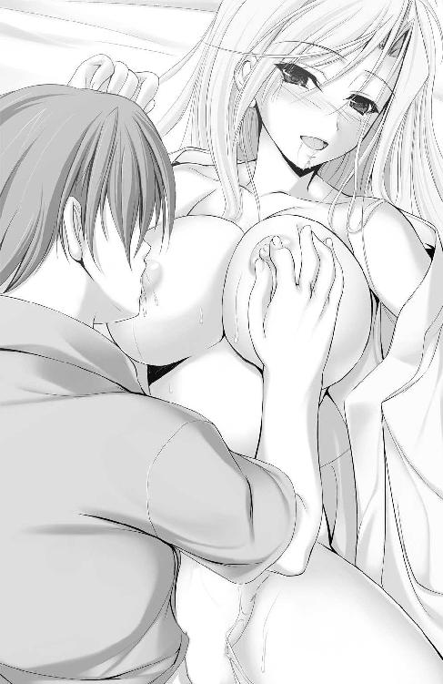
臨界突破を目前にして、もうこれ以上浅ましい肉欲を抑え込むことはできなかった。巻きつく恋人の両脚ごと、腰を前に目一杯押し出し、潤みきった膣肉を抉る。
乳を吸われとろんとしていたシャルロットの瞳が一瞬きょとんと瞬いて聞き返すそぶりを見せ、これまでにない深い結合を受けて歪められ、大きな涙の粒をこぼす。
「いっぱいっ、いっぱい、きててっぺ、ぃっ、ふくぁッ！ 中でビクンッて哲平の跳ねるたびに、あったかくなるのっ幸せなっ......き、気持ちぃぃっ！」
直後に響いた喘ぎ混じりの喜悦を聞けば、苦痛から漏れた涙でないことは瞭然だった。
のしかかる身体が彼女に負担をかけるかもなんて、考えもしない。隙間なくくっついて右乳を二の腕で押し潰し、左手で恋人のうなじを探る。居場所を変えた唇は今度は左側の乳房へと、すっかり汗濡れた襦袢を掻きわけ吸いついていく。
「ひ、ぁぁあぁぁ！ 先っぽジンジン、痺れっ、んッふぅあァァァ～......っ！」
咥えた乳首に歯を立てないよう唇をかぶせ、コリコリとしこる突起を甘噛みする。ひときわ大きく恋人の腰が跳ねた。そのことをヒダの蠕動から察知し、応じるように青筋の浮いた肉幹で力一杯肉壁を摩擦する。
（もう少しっ、もってくれぇぇっ！）
愛しい人と一緒に果てると、約束したのだ。
「きゃぁふっ！ っや、ぁはぁぁっ......！」
二人分の体重と震動。加えてシャルロットが背をのけ反らせたことで、ベッドのスプリングが激しく軋む。
「っぐ......！」
突く角度が変わったことで、肉棒の先端にちょうどざらついた感触がぶつかった。喜悦と我慢汁をにじませた過敏な亀頭は、ザラつきに犯されて、とうとうクパリと発射口を開いてしまう。
「んは、ぁ、ぅっ!? ひぁっあっあああぁぁぁ！ てっ、ぺ、そ、そこっ！ あっあぁ、あふうぅぅっ、ッッ～～～！」
我慢汁をすり込みつつ何度か突き上げるうち、思い知る。明らかにこれまでより大きな彼女の反応。ここが、シャルロットの弱点であり気持ちいい部分。昔、親に隠れて買った成年向け雑誌で読んだ「Ｇスポット」という単語が脳裏をよぎった。
「ちゅ、ぅぅぅっ......シャル、ここ？ ここがいいの!?」
乳首を吸って引き伸ばし、快楽に溺れた恋人の意識を惹きつけておいてから、繰り返し肉先で膣のザラつきを擦り、たずねた。
「そ、ぉ、そこが......いい、の、ぉっ！ キュンってして、切なくっ、てぇ！」
羞恥と昂奮とで火照る頬を自身の手で覆い隠し、それでも彼女は答えてくれる。
「ふ、あっ！ そこ、突かれるとお腹の奥が熱くなってぇ、ひ、あっあぁ！ ふわふわがどんどん強く、なにもわからなく、なるのぉぉっ」
力強い震動が伝わったのか、恋人は子宮の疼きを訴え、ひっきりなしに嬌声を漏らした。
（シャルも、もうすぐなんだ。あとちょっとで、一緒にイケる......っ！）
漏れ出そうになる精を押し戻し、何度も、何度も。期待を閉じ込めた亀頭で膣壁を擦り、掘削する。
「ひぅ、あっんん～～っ！ おんなじところばっかりぃ、ずる、ぅいっ、ひああァァァ！」
恋人の瞳が、表情が、陶酔に染まった。その直後から、膣口はきつく搾るように肉幹を奥へといざない、蠕動を強めていた。
いざなわれた先では幾重にも折り重なった肉ヒダによる、むず痒くも甘美な波状攻撃が待っていて──パクパクと尿道口が開いて甘苦しい快感で溶けてしまったかのように、痺れてひとりでに突き進む。
「も、もぅっ──」
これ以上はもたない。限界を伝えようと覗き見た、その先で。恋人もまた恥じらいながら震える腰を一生懸命に押しつけてくれていた。両手で顔を覆いながらも指の隙間から覗く、青い瞳が「早く──」そう、訴えてくる。
「シャルっ......イクよ、一緒にっ......！」
「う、ふぁっ！ う、んんんっ！ てっぺいとっ、ずっと、一緒にぃぃっ！ んちゅっ、ちゅうぅっ、んふぅっんッむぅぅぅぅ～～～っ！」
ふたつの身体の間でひしゃげた乳肉のたっぷりとした肉感を味わい、どこまでも溶けていきそうな至福の中で、唇を重ね、腰を突き込む。二人揃って高みに上り詰めるため。遠慮なく大きなストライドで、力強く、繰り返し腰を叩きつけた。
「ふむぅぅぅっ！ てっ、ぺ、っ！ なにか、なにか変なのっ！ お腹の奥がビリビリっ、力がっ、は、はいらなく、なってぇぇ......っ」
「そのまま......気持ちいいのに任せて......溺れちゃって、いいから......！」
ぐぢゅぅぅっ！
ひときわ奥深く、コリコリとした感触のするシャルロットの子宮口へと、とっくに臨界を突破して久しい亀頭を押しつけ、開きっぱなしの尿道口をセットする。
「くふぁ......っ！ あ～～～ッ！ わた、わ......っ、っひ、ひぅぅ！ んぷぁぁぁ！」
胎内の中心で響いた衝撃に身をのけ反らせ、ベッドが軋む。つながっていた唇も自然引き剥がされて、恋人の両手は再び純白のシーツをつかみ。脚を広げ踏ん張るように下腹部に力を入れて、最後の、強烈な締めつけで肉棒から欲熱を吸い絞っていく。
「～～～っ！ っぐ......～～～ッッ！」
目一杯。襦袢を掻き分け、細いシャルロットの腰を両手でつかんで、うっすらと茂みに覆われた汁濡れの肉穴へと、根元まで突き入れる。まぶたの裏で白熱が散り弾ける中、ただただ腰の芯だけが甘く過激な射精の響きに蕩けきって──。
どくぅ......ッッ！
「ひぁぁッ！ んふぅっ......うぁ、あっ、あ......！ ふぅあぁぁぁぁ～～～っ！」
想いの丈を込めたほとばしりを胎内で受け止めて、白い柔肌が汗をまき散らしわななく。湿って貼りつく襦袢に、はらりと長い髪が舞い降りて、喜悦にまどろんだ嬌声が鳴り響く。噛み合わない口元から、だらしなくよだれをこぼし、初めての性交での、苛烈な絶頂を甘受する。そんな恋人の姿に愛しさが爆発した。
「っは、ぅくぅぅっ......！」
びゅぐぅっ！ びるるるるっ！ びゅぐっびゅぐぐっどぐっどくどくぅぅっ！
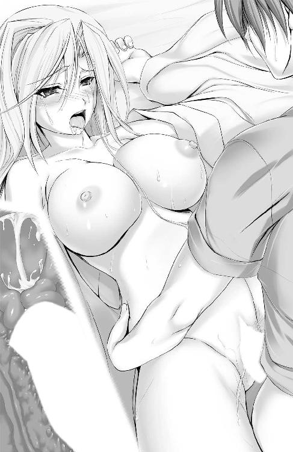
心も身体も幸せに包まれる中。肉幹に伝わる彼女の鼓動に合わせて、キュウキュウと痙攣する狭くて熱い胎内に、より熱い欲望の種を注ぎ込む。
「んふぅ！ っふ、ぅあっふあああぁぁ！ 溶けちゃぅ、ぜんぶ、溶けちゃうぅぅ......！」
女性の一番敏感な弱点で灼熱の種を浴び、ガクガクと、組み敷いた彼女の全身が激しく引き攣る。よだれで濡れ光る唇がうなされるように不明瞭な言葉を発した直後。
──ぷしゃぁぁぁっ......！
断続的に締め上がる膣穴の上部。ぴったりとくっつき合った結合部で、黄ばんだ液がしぶく。
「やっ！ あ、あぁっ......止まって、止まっ、見ないで哲平ぃぃっ！」
びしゅっ、びゅっ、びゅぢゃぁぁぁっ......。
「あったかい......それに、また、キュウキュウっ、か、絡みついてっ......」
失禁羞恥に恥じらう恋人の、きつく引き締まる膣内にありったけの精を流し入れ、想いをぶつける。密着する身体にシャルロットの尿が噴きかかっても、少しも嫌悪感は感じない。むしろ湿った温みが心地よく、汗と尿で貼りつくおたがいの衣服を剥ぐように脱ぎ去って、肌と肌。唇と唇。胸と胸。そしていまだつながる股間で幸せを共有しながら、寄せては返す絶頂の余韻に浸っていく。
「ふゃ、ぁぁ......ごめ、なさぃ......っ、んぁぁんッ！」
どくっ......ぷしゃぁっ......。
精を注ぎ入れるその都度、応じるようにシャルロットが止め処なく失禁する。ぐしょ濡れのシーツと剥いだ衣服の上で、おたがい汗まみれの身体をくっつけて、まだ整わぬ吐息を絡め、長い長いキスをした。
（ん......ぅぅっ、また、搾られてる......）
「んふぅ......れちゅ......てっふぇい......の、まら、れてる......ぅぅ」
誰に教わるでもなく自発的に、シャルロットが尻穴に力を入れて踏ん張るたび。絶頂に打ち震える膣穴までもが引き締まり、肉棒から子種を搾り取っていく。
いつまでも、こうして抱き合っていたかった。
だけれど、そろそろ時計は午後九時を回る。姫君を送り届けなければならない。彼女が執事に伝えておいた帰宅予定時間を、もう一時間近くオーバーしていた。
「シャルが一緒になって感じてくれて......すごく、嬉しかった。だから、その......シーツとか着物のことは気にしなくていいよ」
汗でべたつく銀髪をなでる。なぐさめなどではなく、心から、本当に嬉しかったのだとキスと、慈しむみたいな手つきでもって伝えながら。
「ふぁ......てっ......ぺぃ......」
収まりきらずに結合部から垂れてきた、白濁と尿液の混合汁。その冷めやらぬ火照りとヌルつきとに感じ入る。
「......本当に、これで」
よかったんだね、と最後の意思確認をしかけた唇を、ちゅっと押しつけた小さな唇で再度塞いで、シャルロットは少しだけむくれた顔をし、その後すぐににっこりと微笑んでくれた。
「もぅ......せっかくロマンチックな気分なのに。......大丈夫。弟たちがいるもの。ヘイゼルリンクの血は絶えないわ」
「そっか」
それにしたって、責任感の強い彼女が華奢な双肩にのしかかるものすべてを投げ打つ。その後ろめたさが、軽くなるわけではない。彼女が背負う重荷を、半分わけてもらい一緒に担う。覚悟はすでに決めていた。
「もう......帰らなくちゃいけないのね」
だから、さみしそうにつぶやいた恋人の身体を抱き締めて、もう一度。
「......迎えに行くよ」
軽い、しばしの間だけのお別れのキスをして、告げる。
「......うん」
うなずき合って、またキスをした。結局業を煮やしたヘイゼルリンク家の白髪執事が迎えに来るまでの十数分。ぎりぎりまで肌を重ね合わせて、あわててシャワーを浴び身づくろいを済ませるシャルロットを見送った。
（お爺ちゃんに、知らせないと）
恋人を見送り終えて下ろした、その手で携帯電話を取り出して、一度も自分からはかけたことのない電話番号を、緊張する指先で押していく──。
和服での鍋パーティーから明けて翌日。昨日とは打って変わって、有馬家の食堂には張りつめた空気が敷き詰められていた。
「お主がわしを呼び出すとは......珍しいこともあるものだな、哲平よ」
「お爺ちゃんに、どうしても伝えなきゃいけない話があるんだ。電話やメールで気軽に済ますことじゃないと思ったから」
「ふむ......ずいぶんもったいぶるではないか」
長テーブルの上座に腰かけた和装の老人。有馬一心の瞳は依然として微動だにせず一点を、孫の瞳を正面から見据えたまま。無駄な時間を使うなとでも言いたげに、話の先を促してくる。
隅に控えたメイド服姿の少女──優もまた、視線を下げたまま。ひとことも発しようとしない。静寂が、場を支配しようとしていた。
「哲平よ、黙っておっては」
「......シャルと、一緒にいたいと思ってる」
言い終える前に口を挟まれたことにではなく、発言内容そのものに、白髪の強面が目を剥いた。一見平然を装っているようでも、見る者が見れば老獪な心が珍しく動揺しているとわかる。そして、一気に祖父から発せられる威圧が増したのを、肌で直接感じた。
「それは、あの娘とお主の立場、すべてをわかった上で言っておるのであろうな？」
低く響く声音と見定めるように細められ突きつけられた視線の鋭さに、プレッシャー慣れしていない心臓が縮み上がる。
「......うん。有馬の家に迷惑がかかることも。シャルが一国を代表する王族だってことも。彼女に親が決めた婚約者がいるってことも、承知してる。それでも、俺とシャルは一緒に生きていく。二人で、決めたんだ」
また、座したまま祖父の眉根がぴくりと釣り上がった。
「あの日。母さんと父さんのお墓の前でお爺ちゃんと約束した。有馬の家を継ぐって言った気持ちは、今でも変わらないよ。でも......今の俺にとって一番大事なのはシャルだから」
「じゃから......有馬を捨てるというのか」
祖父の威圧によって速まる鼓動に負けまいと、矢継ぎ早に言葉を続けた、その続きを他ならぬ祖父自身が先回りして告げる。
「哲平様......っ。どうか......お考え直しください！」
祖父の言葉にいち早く反応したのは、今までメイドとしての分をわきまえ脇に控えていた、優だった。切り揃えられたショートヘアを振り乱し、いつも冷静なその顔に大きな動揺を貼りつけて懇願される。
彼女の信頼を裏切ってしまう。心苦しさ、申し訳ない気持ちは強く、今もくすぶっていた。それでも、有馬であり続けることと、シャルのそばにいること。二者択一だというのなら──。緊張と少しの高揚とで身震いする拳を握り締めて、決して覆らない意志を彼女に伝える。
「優さん......ごめん」
「どうして......一心様のお心を、哲平様はわかっておいでのはずですっ」
両親が死んで数か月前。初めて会った祖父とは、これまでに数度しか顔を合わせてはいない。けれど彼からかけられた期待はひしひしと感じていた。実の娘の死に目にもあえず、そのことを後悔していたことも、もう息をしていない母の顔を見て声なき慟哭を人知れず漏らしていたことだって知っている。
今また、孫である自分が母と同じことをしでかそうとしている。そうすることで祖父がいっそう深く悲しむのだと、いやというほど悩み抜いた一昨日の夜に散々思い知らされてもいたのだ。
「優よ。男が一度決めたのだ」
「ですがっ......」
常に主人に対し一歩引いていた優が、この時ばかりは食い下がろうとする。その必死なそぶりが、彼女のひたむきさを強く感じさせ、これほどまでに信じ、慕われていたのだと少年の胸を熱くさせた。
「ぬしが認めた我が孫が、いったん口にした決意をたやすく覆すほどふぬけた男であると......そう思っておるわけではあるまい」
祖父は、どう話してよいか言いよどむ孫に代わり、諭すような口調で優に語りかける。
告げたかったことを代弁してくれた。孫の心を祖父が理解してくれていた、そのことがただ嬉しくて、みっともなく泣き出してしまいそうになる。初めて、厳格な祖父、有馬一心と気持ちが通じ合えた気がした。
「シャルロットもすべてを承知で......二人して家を捨てるというか。そうしてすべてを捨てて、己が身一つで生きていけると、そう思っておるのか」
黙ってしまった優を再び部屋の脇に引き下がらせ、厳格な「有馬グループ会長」の顔に戻って、問いかけてくる。
「苦労させちゃうってことはわかってる。まだまだ子供の俺の心構えなんて、お爺ちゃんからしたら甘っちょろく思えるのかもしれない。それでも、俺はシャルと一緒にいたい。そうすれば、二人でどんなことだって乗り越えられるって信じてるから」
祖父は覚悟を見定めようとしているのだ。だからこそ、あえて語気を強め、身を乗り出すようにして決心を再び舌に乗せた。
「子供の理屈じゃな」
「そうかもしれない。だけど、これが今の俺にできる精一杯だから。嘘はつきたくない」
「......そうか」
たったひとこと。祖父の溜め息交じりのひとことで、短かった家族の話し合いは、終わりを告げた。
「それじゃ俺......行くよ」
席を立ち、その祖父に背を向けて食堂を出てゆこうとする。
「いずれ......己が選んだ行く先は、けわしき道であったと痛感する時が来よう。だが忘れるな、哲平よ。それはぬしが自ら選び取った道であったということを。忘れるで、ないぞ」
祖父からの、最初で最後の忠告。金銭や社会的地位、そんなものよりもずっと嬉しくありがたい肉親よりの贈り物に、思わず踏み出しかけた足が止まった。
「ありがとう、お爺ちゃん」
もう、後ろは振り返らないと決めていたから。背を向けたままで祖父に感謝の意を伝え、中空で留まっていた右足を前に踏み出させる。
一歩、二歩。前に進み始めた脚は、もう踏みとどまることなく。
「......哲平様」
脇を通り過ぎようとしたその時。うつむいていた優が、ゆっくりと顔を上げ、口を開いた。努めて平静を装おうとしているものの、涙声と、垣間見た震える肩先とが、彼女の哀しみの深さを知らせてくれた。わずかに赤く腫れたまぶたが、再び立ち止まった視界の隅に映り込んでいた気がする。
「私は有馬の家に仕える者です。ですからもう、おそばにいることは叶いません......。どうか、お身体にお気をつけて......どう、か......シャルロット様と、っ、お幸せに、お過ごしくださいませ」
泣き出したくなるのを堪えているのが、見つめなくてもよくわかる。真面目で、世話好きで、時には厳しくあるじを諌めてもくれた。そんな彼女の弱い部分を、別れ際のこの時になって初めて見つけられた気がする。できることなら、面と向かって視線を交わし、何か労りの言葉をかけてあげたい。
でも、もう振り返らないと決めたから。
「ごめん、優さん。それから......ありがとう。優さんが信じてくれていた有馬哲平としてのそれとは違った形になるかもしれないけど。シャルと二人で幸せになるよ」
振り返らずに決意と感謝、そして決別を告げた直後。優がしゃくり上げた、その涙声が広い食堂で残響する。これ以上留まれば振り返ってしまいたくなる。そう、切なさに締めつけられる胸の奥で感じたから。後ろを振り向くことなく食堂を出、長い廊下を一人歩いて、重い玄関の戸を開ける。
「さよなら......お爺ちゃん、優さん」
さよなら、と別れの言葉を口にしてようやく、実感が込み上げてきた。ほんの数か月共に過ごしただけなのに──。祖父と、優と、社交部の学友たちとの思い出はそれこそ山のように降り積もり、まだ未成熟な心をわしづかみにして、引き留めようとする。
静かに、背後で扉が閉じた。その重厚な響きに、有馬の家と自身とのつながりを断ち切られたような寂寥感を覚え──自らの決断の重さと、責任を胸深くに刻み込まれる。
祖父に与えられた物は、すべて置いてきた。手元に残ったのは、着慣れた衣服と、父母が遺しておいてくれた通帳ひとつ。小さなリュックに着替えを数着詰め込んで、前を向く。
「......行かなきゃ」
行き先はただひとつ。ヘイゼルリンク邸。愛しい人が、きっと自分と同じように身内の説得を行っているであろう、その場所へ。待ってくれている人がいる、その場所へ。有馬の家を出る時には重たかった足取りは、いつしか駆け足に、そして堪え切れずに疾走を始め。一路ヘイゼルリンク邸への道のりを走り抜けていく──。
「──では、王家の者としての責務を放棄すると。......お前はそう言うのかい？ シャルロット」
窓の外で星が瞬いている。静寂を打ち破るように、緩やかに、けれどはっきりとした響き。ヘイゼルリンク邸宅の最奥、普段は母国にて執務にあたっている当主、フィリップの威厳ある声が静かに轟く。
娘のものよりも少し色濃い銀髪。伸ばした顎ひげをなでつけながら、壮健な顔に深い苦渋の色を忍ばせて、国王たる父はまっすぐに娘を見つめ続ける。
「お父様。身勝手だと、そうお言いになりたいのでしょう。......わかっているの。わたしを慕ってくれている民たちを失望させることになる。きっと、お父様にも迷惑がかかるわ」
娘を想うあまり来日した、まだ疲れの残る父の部屋を訪れ、即座に「王家を捨てる。愛しい男と暮らしたい」のだと告げた。酷な話だ、親不孝な娘だと自分でも思う。
それでも今言わなければ、次に面と向かって話せる日がいつになるかはわからない。お忍びで父が来日してきたと聞いた時、すでに決意は固めていた。
「そこまで理解していてなお、決意は変わらないというのだね？」
「......はい」
父を前にするからと着替えたドレスが、今は酷くわずらわしい。きらびやかな衣装よりも、愛しい人と過ごした学園の制服や、一緒にデートした服装、ずっと思い入れのある格好に早く着替えたいと思ってしまう。
大好きな彼とどんなことがあっても一緒にいようと決めた時から、姫である自分も、そう振る舞おうとすることすら捨ててしまった。そのせいかもしれなかった。
「お考え直しくださいお嬢様！ お嬢様はあの小僧に騙されておるのですっ」
「違うわ、じいや。わたしはもう、右も左もわからない赤ん坊じゃないもの。だから......今回のことだって、哲平と話し合って決めたの。わたし自身の、意思よ」
いつもしかめっ面だった老執事が、この時ばかりは今にも泣き出してしまいそうな哀しい目をして見つめてくる。日ごろの労苦に仇を返すような真似をする。そのことが心苦しく、自らの罪深さをより痛切に、身をもって知らされもした。
「......一度、会ってみたかったよ。その、哲平君という少年に」
なおも言い募ろうとする老執事を片手で制して、父王が重たい口を開く。その口調は嘆息と、なにか思い出でも振り返るかのような切ない響きにまみれ、娘とおなじ青い瞳には穏やかな光が差し込んでいる。
「何をするにも、アルフに任せっきりで......甘えん坊だった娘が。こうして、恋人とともに生きていきたい、そう告げる日がこようとはな」
「哲平と出会って、初めて気づいたの。わたしはヘイゼルリンクのプリンセスである前に、わたし自身だってこと。彼は......わたしを肩書きじゃなく、ただのシャルロット、一人の女の子として、対等に接してくれた」
皆どこか遠慮した言動で接してくる中。突然に現れた彼はひときわ輝いて見える存在だった。ひたむきに生きている彼と出会い、恋をして、同じ日々を生き、たくさんの、王宮暮らしでは得られない経験をし、糧とする。哲平のおかげでひと回りもふた回りも成長できた娘の姿を、もっと父にも見てもらいたかった。
「気づけば毎日、彼のことばかり考えるようになって......。それはとても幸せだったけれど、同時に......別れの日を思うたびに辛くもなったわ」
それでも彼に恋して本当によかったのだと、今は胸を張って言うことができる。
「恋とは、そういうものだよ。おたがいに想い、悩み、結び合う。とても大事なことだ」
「ええ......。とってもたくさんのことを彼から学んで、たくさんの想いを受けて。一緒にいたいって、想いを抑えることができなくなって。肩書きもなにもかも脱ぎ捨てて、ただの哲平とシャルロットとして、愛を伝え合う喜びを知ったの」
父は娘の決意を量るように、まっすぐに見つめてくる。
娘は優しい性根にしては珍しく──おそらく生涯初となる毅然とした態度で、父の瞳を見つめ返してみせた。──想いの強さを、伝えるために。
「その結果、祖国の土を二度と踏めなくなってもよいのだね？」
有力貴族との婚約を破棄し、王族としての地位を捨てる。国の大事をしでかすのだ。たとえ父が許してくれたとしても、王家に他国の血を入れることを厭う諸侯を、一人で説得することは難しい。また、そのような気苦労を父にさせるつもりもなかった。
覚悟は、哲平の腕の中でとうに済ませている。
「......はい」
「できることならば......やはり一度、会ってみたかったよ。我が娘を立派なレディへと成長させてくれた、その少年にね」
これで今生の別れになるかもしれない娘の姿を焼きつけるように、いつまでも父の瞳はまっすぐに視線を寄越してきた。
コンコン──。やがて、静寂を打ち破るノックの音が響き渡るその時まで。父娘は無言で、部屋の隅に控えた老執事は嗚咽混じりに。無言で見つめ合う──。
走り続けて半時間。ようやくたどり着いた目的の場所を前に、少年は腰をかがめ、荒い息をどうにか整えようと躍起になっていた。
「どうぞ」
扉の向こうから聞こえてきた低い声のぬしが恋人の少女でもなく、苦虫を噛み潰した顔の執事のものでもなく、いまだ会ったことのない者の声であることに緊張をし、そして。
「失礼します」
有馬の名を捨てて、ただの哲平として、恋人と、彼女の親しき人々とあいまみえる。
「哲平。来てくれたの......！」
諸手を挙げて今にも抱きつかん勢いで喜んでくれた。そんな恋人の表情に釣られて、緊迫していた心持ちを束の間忘れてしまう。思わずふっと肩の力を抜き、人目もはばからず抱き締めてしまいたくなった。
だが、あえて彼女を制し、一歩。柔らかな赤絨毯のふわふわした心地に惑いながら、前に進む。今はまだ先にやるべきことがある。決意を告げなければならない人がいた。
「君が......」
そして部屋の中央で響く、威厳ある声音のあるじ。シャルロットの父王へと改めて向き直り──。
「初めて、お目にかかります」
あいさつを交わそうとした、その瞬間。
「小僧ぉぉぉぉぉぉッッ!!」
ぶぅんっ──！
主君に会わせまいと立ち塞がった白髪鬼の、怒りの形相が視界に映り込み。
ごづッッ──ぅぅぅッ!!
「ぐぅ......っつぅぅ！」
一瞬後には視界が大きく縦に揺れ、鈍く硬い衝撃で頬が痺れる。口の中にはじわじわとにじむ血の、鉄っぽい味わいが充満した。震えながら膝をついて、ようやく、怒れる執事のごつい拳骨で殴られたのだと知る。
「じいやっ......やめなさい！ どうして......どうして哲平にひどいことばかりするの!?」
今しがた満面の笑顔を浮かべたばかりのシャルロットの表情に、深い悲しみと、それ以上に珍しい怒りの色が差し込んでいる。眉根を吊り上げ、涙をこぼしながら声を張る。
「お嬢様。この身で償える罪であらば、後で如何様にもお受けいたしましょう。ですが、このアルフ......っ、この小僧を通すわけにはゆきませぬ！」
「アルフっ！」
また、恋人が燃え盛る炎のごとき感情を吐露して、老執事を名指しで怒鳴りつけた。
（そんな顔は......似合わないよ、シャル）
見ているだけで痛々しい。頬の痛みなど、取るに足らないほどに、シャルロットも、そして目の前の執事までも、涙をこぼさずに泣いている。そんな風に見えてしまう。
「立て小僧」
「っぐ......！」
たった一発もらっただけだったけれど、無防備なところへの不意打ちという点を除いても、強烈に過ぎる拳だった。まだ膝が笑っていて上手く立てないでいるところを、胸倉つかまれて強引に引き起こされる。
息苦しさに、喉が喘ぐ。揺さぶられた脳が、くらくらとめまいを誘発していた。
だが、ある程度予想のついていた行動だ。混乱は、きたしていない。
「やめて......っ！」
「待ちなさい、シャルロット」
老執事の着込んだ燕尾服の肩越しに、シャルロットの悲痛な顔と、娘をとどめるヘイゼルリンク公王の、なにか見定めるような深い瞳が映り込む。
「お嬢様をこれ以上惑わすでないわっ！」
「か、は......っ」
突き飛ばされて、あえなく背中をドアに衝突させる。めまいはさらに強くなり、急に解放された呼吸器が、ひゅうひゅうと貪るように息を吸った。
「貴様のような軟弱者に、お嬢様が守れるものか！」
再度、迫ってくる老執事の、振り抜かれた右拳。まともに食らえば今度こそ意識が飛ぶ。
（思い出せっ、俺はシャルと一緒に生きるために......ここへ来たんだっ！）
考えるよりも先に、脚が前へと進み出ていく。散々シルヴィと特訓した成果が身に染みついていた。そのおかげで──。
「ぬぉっ!?」
突如の反撃に虚を突かれた執事の突進がわずかに鈍る。
「この手で、シャルをっ......守ってみせる！」
対して速度を緩めることことなく肩からぶつかって、ぐらついた執事の身体ごともんどりうって絨毯の上へと転がった。
吐き気を堪えて、声を絞ったのだ。視界の端に映った涙顔のシャルロットと、微動だにしない公王へも当然、今の発言は届いているはずだ。
「ぐ......ぅぅ」
「約束します......。俺は、シャルと......二人なりのやり方で、一緒に幸せになるって」
組み敷く形となった老執事の胸に軽くぼすんと拳を突き立て、誓いを立てる。
「哲平......哲平っ！」
老骨の上から身体をどけた途端、今度はぎゅうと柔らかな感触に全身が包まれた。
抱きついてきたシャルロットの頬を伝う涙を拭ってあげてから、改めて立ち上がり、場の中心に立つフィリップ公──ヘイゼルリンク公王の前へと進み出る。
「初めて、お目にかかります。あり......小林哲平と申します」
有馬ではなく、小林。旧姓を名乗ったことで、彼もその娘である恋人も、そしてようやく膝をつき立ち上がろうとしていた執事も、すべて悟ったようだった。
「哲平......」
心配してハンカチを差し出し、血のにじんだ唇を拭いてくれる。感激と謝罪の狭間で揺れる恋人の瞳。泣きながら、人目がなければ唇を重ね唾液で拭ってくれたかもしれない。
「......ん。だいじょうぶ」
シャルロットの肩を借りていなければ、自力で立つことすら難しい。まだ膝は情けなく震えていたけれど、踏ん張りを利かせて、向き直る。
「二人して......一心や有馬の者、そしてヘイゼルリンクの民、アルフを傷つけてでも、すべて捨て、行くというのかね。その覚悟が、あると」
静かに、感情を極力押し殺した響きで問うてくる公王に、肩を貸してくれる恋人と目配せし合い、おたがいの気持ちが一緒であることを確かめる。
「......はい」
そして、二人揃って同じ返事を舌に乗せ、送り出す。
「わたしが自分で選んだ道だもの。覚悟は、できています」
娘の、力強く光のこもった瞳に眩しさを覚えるように、目を細めた公王が重たい口を再度開く。ゆっくりと、ひとことひとこと覚えるようにしゃべるのは、ひょっとしてこれが今生の別れになるかもしれないと、父娘ともに感じているから。
「......そうか、では今よりお前はヘイゼルリンクの名を名乗ることを許されぬ。自分たちの手で、ドアを開けて行くがよい。......哲平君」
「はい」
「娘を、よろしく頼む」
不意にかけられた王の瞳はひどく寂しそうで、そのくせ柔和な佇みを損なわず。最後に小さく、ひげの下でゆるりと微笑んでくれる。
（ああ、やっぱり父娘なんだな......）
そう思わずにいられない、娘であるシャルロットによく似た、優しい笑顔に見送られ、背を向けた。
「お父様......じいや。行ってきます。どうか、お元気で」
後ろの父に、行く先にへたり込む老執事に声をかけ、涙を拭って前を向く。彼女は、さようならとは言わなかった。まるでどこかすぐそこに出かけるような気やすさと、深い決意のにじんだ響き。最後まで気を張って、泣き出したいのを堪え別れの場面を乗り切ろうとした恋人の目からは、あふれんばかりの涙がこぼれ、頬を伝う。
「シャル......っ」
「──哲平！」
思いきって抱きついてきた恋人の身体を、しっかりと受け止めた。腕の中のぬくもりが伝わるたびに痛感する。このぬくもりと、陽が差すみたいな笑顔とに会いたかったのだと。
「ごめん。少し遅れちゃったかな」
「ううん、そんなことない。哲平は......来てくれたもの。籠の中にいたわたしを、連れ出しに来てくれた」
澄んだ瞳の青色を涙でくゆらせて、抱きついてきた彼女が鼻先をすり寄せる。殴られて腫れた頬にそっと触れてきたシルク地の手袋が、震えながら幾度も、幾度も。慈しむような手つきでなでてきては、ぽろぽろと大粒の涙をこぼした。
「シャルを......連れていかせていただきます」
もう、背を向けてこちらを見てはいない公王と、立ち上がり無言で見据えてくる老執事とに、告げる。
「お嬢様。その小僧めがお目に適わなんだ時には、いつでもお戻りくださいませ」
乱れた髪をなでつけ会釈する、老執事の目にきらめくものが滴っていた。
「ありがとう、じいや。でも、きっとだいじょうぶよ。だって......わたしが初めて好きになった、誰よりも素敵な人だもの」
面と向かって言われて照れ臭がる顔を覗き込みながら、シャルロットが微笑んだ。応じてその柔らかな身体を抱き上げ、文字通りのお姫様抱っこで、部屋を出る。
（これから、二人で生きていくんだ）
行く先に、どんな困難が待ち構えていようとも。決意を秘めた唇を、涙ぐむ彼女のそれと重ね合わせ。たがいの感触を確かめ合いながら、門をくぐり、そして二人で手を取り合い、人生という名の長い旅路を歩み出す──。
シャルロットとともにヘイゼルリンク邸を出て、数時間。
日付が変わるころ。とりあえず今晩の宿にと選んだビジネスホテルの個室に入るなり、二人は時を惜しむように抱き合った。
「ふぁむ......ん、ちゅっ、ちゅぅ、んちゅぅぅっ」
ダブルベッドへと倒れ込むのも面倒とばかり、部屋のほぼ中央で立ったまま。対面で、みっちり隙間なく抱き合って、唇で、舌で相手の口内をまさぐり合う。
「んっ......ぷぁっ。......受付の人、驚いてたなぁ」
いきなり豪奢なドレス、ティアラをつけたプリンセス然とした娘をお姫様抱っこで連れて、頬を腫らした男が現れたのだから、無理からぬことではある。
「むぅぅ～、今はそんなことはいいのぉっ。ん......ちゅぅぅぅっ」
だが彼女はそのようなことに頓着していなかった様子で、まるでこれまでの分を取り戻すかのように肌を寄せ、キスをせがむ。そんな恋人に対し、愛しさの求めるがままに応じ、舌を絡ませ、唇を重ね合った。
「ん......っ、ぁは、ぁぁっ......なんだか、胸が......切ないのっ」
しきりに二の腕に押しつけられ擦れる弾力たっぷりの胸を揺らし、彼女が言う。
「ドキドキ、してるって......こと？」
「それもあるけれど......っ、かなり張った感じが、して......っぅぅ、ふ、ぁぁぁっ！」
ビクビクと、前触れなく恋人の背筋が反り返り、腕の中で跳ねた。もじつく内腿を、半透明な液が伝う。快楽に震えているのだと気づいて再度仰ぎ見た、恋人の唇から、甘い吐息が鼻先めがけ吹きかかる。
「め、めくって......哲平の手で、ドレスを脱がせて、欲しいの......っ」
純白の、幾重にもレースがあしらわれた豪華なドレス。それは彼女がプリンセスであった証でもある。飾る物すべてを取り払い、裸の自分を抱いて欲しいと願う恋人のいじらしさに、胸が高鳴る。同時に、シャルロットの腿肉と触れ合う股間でも、熱いたぎりが目を覚ましドクドクと脈打った。
「わかった。それじゃ......脱がせるから」
そっとシャルロットの胸元へと触れる。ねっとりと絡みついてくる熱っぽさに、吸いつくような肌触り。少し汗ばんだ乳肌の、指を惹きつけて離さない心地の良さに、瞬く間に虜にされてしまう。心臓が跳ね上がり、股間で膨らんだ肉幹の内部で熱くただれた熱の塊が練成される。
「は、早くぅぅ......っ、おっぱい、切なくって......も、もう我慢できないのぉっ」
急かしながら肌をすり寄せてくる恋人の背に回した左手で探り当てた、ドレスのファスナーをゆっくりと引き下げていく。
ジッ、ジジッ......。おたがいの荒い息の合間に響く音が、やけにもどかしく思えて、緊張と昂奮とで震える指先が思うように動かないことにわずかな苛立ちを覚えてしまう。
「ふ、ぅ......んっ、ぁぁ......っ」
それでもドレスと乳肌との間に隙間ができ、入り込む外気の冷たさに息つく恋人の、ほんのり薄桃に染まる横顔を目にして、あっという間に苛立ちは消えた。代わりに、温かな気持ちと、抑えきれない肉の昂奮とが、若い牡の体内で競うように増大する。
「めくるよ......」
熱い吐息をドレスの胸元、深く切れ込んだ谷間へと吐き連ね、指を袖に引っ掛けて一気に真下へと引き下ろす。
「は、ぁぁぅっ......！」
ぷるんっ──。若々しさを誇示するみたいに汗を跳ね、大きく弾んで現れた二つの膨らみに、目を奪われる。すでに小指の先ほどに勃起している左右の乳首からは、乳白色の液体が──目を剥いた二人の視線に晒される中。乳白汁はツツ、と乳谷を滑り下りた。
「シャル、これって......!?」
「お、おっぱい、出ちゃった、の......？ んぅ......っ、わた、し、じゃあ......お、お母さんにっ......哲平の赤ちゃん......っ、できて......っ、あ、あふぁぁ！」
びゅっ、ぴゅるるっ......。
驚きから感激へと移り変わるシャルロットの心の揺らぎに応ずるように、ヒクヒクと脈打つ乳頭から、また少量ながら母乳が漏れる。
（シャルが......俺との子供を？）
初めてつながったのは、わずか二日前。おたがい初めてだったのだ。冷静になって考えれば、妊娠の兆候が現れるはずがないと判断できもした。俗にいう、想像妊娠というやつなのだと、思い至れたはずだった。
けれど、愛しい人の胎に確かな愛の証拠を宿した──甘く幸せな妄想が、男女双方の心を大きく駆り立て、高揚させる。
「飲んでみても、いいかな？」
変態と軽蔑されてしまうのではないか。そうでなくとも変な男だと思われるかもしれない。様々な憶測に及びつつも、震える声で、ようやくそれだけを告げた。
「......哲平が望むなら。くす......でも、まるで赤ちゃんみたいね」
恋人は、愛を失うことに怯えたパートナーの心根を見透かしたように、優しく手のひらで髪をなでてくれる。彼女の細腕に抱き寄せられ、乳の谷間へと招き入れてもらった鼻先に、ツンと甘ったるい、乳白の香りが漂っていた。
（これが......シャルの）
嗅いでいるだけで鼓動がうるさいくらいに鳴り響く。鼻の奥まで痺れるような甘さは脊髄を通し股間にも伝わって、いっそう反り返った肉棒がズボンの奥でたぎり、張りつめる。
「......っ、はむっ」
意を決し唇を乳白滴る乳先へと吸いつけて、呼吸をする要領で少しずつ、規則的にチュウチュウと吸った。
「ひゃ......ぁぁっ、ぁんっ!?」
驚いた顔がゆっくりと慈愛あふれる聖母の顔に変わる。母性の象徴である乳を吸われながら、少女は幸せを感受するように噛み締めた唇を震わせ、その隙間から蕩けた声音をこぼしていった。
「ちゅ......ちぅぅっ......んっ......れちゅぅぅっ......」
「ん......っ、ゆっくり、ね......？ ふぁ、あ、んんぅぁっ......てっ、ぺいに吸われるたびに、む、ねぇっ......。疼いて......奥、キュンってしちゃう......のぉぉっ」
硬くしこった乳首を軽く歯と歯で挟んで転がしてやる。それだけで敏感な突起はますますコリコリに強張って、痙攣しながら乳白汁を滴らせた。
あふれた母乳と唾液が混じり、ぴちゃぴちゃと淫猥な音色が響く。舌の動きに合わせて響かせる哲平も、胸をしゃぶられ聞かされる側のシャルロットも、二人揃って昂らされる。
「ん、ぶっ......んく、んく、んっ......さらっとしてて、ほんのり甘い」
愛しい人の母乳は思いのほか喉越しよく、甘すぎもしないで舌の上から喉を滑り落ちていった。
「は、恥ずかしっ......でも、嬉しい......の......ふぁ！ ぁっ、ぁあ......っ！」
ともすれば変態的と受け取られかねない行為を甘んじて、健気に微笑んでまでくれた。その赤らんだ頬と微笑とに魅入られる。シャルロットの献身と愛情を切々と感じて、哲平の胸の奥もまた高鳴りを堪えきれず、焦げてゆく。
「や、ぁぁっ......本当に、赤ちゃん、みたいっ......っく、ふぅぅっ！」
あふれ出す愛しさに命じられるまま、むずがる恋人の背に左手を回し抱き寄せ、身じろぎひとつ許さないとばかりに密着した。空いた右手でシャルロットの生乳を左右交互に揉みしだいては、彼女の鼓動を速めさせ、より硬く膨れた乳頭から母乳を搾り取る。
「か、噛んじゃ......っ、あ、痕がついちゃうぅぅ......っ」
確かに強すぎる吸引によって引き伸ばされた乳肌に、痕跡が残る可能性はあった。
（でも......ごめん、シャル......我慢、できそうに、ないよっ......）
むしろそうなって欲しいと願うように、荒々しいたぎりを恋人にぶつけ続ける。
「ぅ、うぅ～っ......そっちがそのつもりなら、わたしだって......んっ。哲平のを搾り取って......あげちゃうんだからぁっ」
あまりに魅惑的な爆乳に、魅了されてしまっていたせいもあったかもしれない。
「え......ぅあぁっ!?」
虚を突かれる形で、忍んできたシャルロットの手のひらに、ズボン越しに膨れた肉幹をなで擦られた。初めはそっと、ただ触れるだけだった手つきがすぐに大胆になり、幹の脈動を感じ取るみたいにぐっと押し当たってきて、上下への摩擦もスムーズになり始める。
「......っぷぁ、シャ、シャルっ」
ドクリと肉棒が飛び跳ねる。不意打ちされたことで弾けた愉悦がズボンの奥で窮屈そうにうねり狂っていた。
（ちょっと、出しちゃった、かも......！）
唇を噛み締めて、響く欲望の鼓動を腰の奥に押し込める。
早くズボンから、灼熱を帯びた肉棒を解放したい。視線で訴えずとも、手のひらで感じた鼓動の緊迫ぶりだけで、恋人はすべてを察知してくれていた。
「哲平の服......ズボン、脱がしちゃう......ね？」
昨日とは脱がされるのと脱がすのが反対ね、などとほくそ笑みながら、手際よくズボンのファスナーを引き下ろし。
「ふ......ぅあぁぁっ！」
潜り込んできた彼女の冷たい指に幹をつかまれ、またドクリと快楽の音を肉棒が響かせた。逆に彼女のほうはこもっていた、じっとりとした熱気に目を丸くして驚いている。
「こんなに......感じてくれていたの。気づいてあげられなくて、ごめんね......」
ちゅっ──。
「ふぁッ！ シャル......き、汚いからっ」
まだ、今日は風呂に一度も入っていない。走り回って汗だって掻いたし、きっと汚れているはずだ。なのに彼女は躊躇なく、勃起肉棒のくびれた先端をファスナー口から取り出すなり、跪いて口元に近づけ、そして情熱的なキスをした。
「らいりょうふっ......らって、ん、ちゅ......哲平の、だもの」
間髪入れずにぱふっと両側から包みかぶさってくる、ヌルリとした感触と温みのある柔らかな肉の圧迫。愛しい恋人の母乳滴る乳の谷間に挟まれるという、その光景だけでも刺激的だというのに──。
「んろっ......ちゅ、ちゅぅぅっ......」
繰り返される先端へのキスはくすぐったく、むずむずともどかしい疼きを肉棒の根元にまで植えつける。
「う、ぁ......っ、くふ、ぅ、ぅっ......！」
幹全体を包み込む肉の感触は、どこまでも沈み込んでしまいそうでもあり、底抜けに甘美な心地に満ちていて。柔肉の谷間に挟まる肉棒から、背筋を通じ攻め上がってくる愉悦の痺れは、強烈に少年の下肢を揺さぶった。
「ん......ぢゅ......っ。ふぁ......熱いわ、哲平の。それに、すごく脈打ってる......これまでの分もたくさん、可愛がってあげるね......？」
彼女自身の手で寄せ上げられ、ただでさえ手に余るサイズがますます大きく、上から見下ろす視界を埋めるほどに映る。そのたっぷりとした肉の間に挟まれて鼓動を刻み込みながら、赤黒い亀頭がひょっこりと顔を覗かせていた。
（くぅ......！ 母乳のヌルヌルが絡んで、よけいにっ......あ、あったかい......っ！）
先だってのキスで唾液をべっとりまぶされた亀頭は擦れるたびに乳肉にしっとりと吸いつき、シャルロットの高鳴る鼓動まで丸聞こえだった。
逆に、みっちり包まれて歓喜に悶える牡肉の鼓動も、彼女には筒抜けなのだろう。火照りで赤らんだ頬に貼りつく髪を掻き上げ、再度自らの手で乳を持ち上げてから、ひと擦り。
ず、りゅぅ......っ、くちゅぅ......ぅっ。
「ふぅ......あっ。硬いのに......グニグニしてて、不思議。これがわたしの中に......入ってた、のね......」
唾液と母乳とでぬめった摩擦の衝撃に身震いしながら、初めての時のことを思い出しているのか。彼女はうっとりと惚けた瞳を上目遣いに見せつけて、ゆっくり、繰り返し乳肉を上下に揺らし始める。
──にゅずっ、りゅ、ぬりゅ、にゅちゅぅぅ......。
「は、あぁっ......シャルのおっぱい、母乳が絡んで、すごく......ぴったり貼りついてるみたいに......っ、感じるよ......！」
絡む母乳がニュチニュチと淫靡な粘着音を奏で、恋人たちの間に漂う空気を変質させた。おたがいを求め合う気持ちに肉欲が加わり、いっそう乳肉の上下運動は激しさを増す。
「はふ、ぅん......哲平の喜ぶ顔、見てたら、いくらでも、わたしっ......大胆に、なっちゃうのぉっ......んっんぅんんっ！」
汗と母乳の粘り気で肉幹にぴったりと密着した乳肉が、牡の欲望が溜め込まれた根元から、我慢汁が漏れ出す先端まで、繰り返し往復した。たわんでは弾む乳肉の突端でぽっちりと咲いた桜色の突起がしきりに幹と擦れヒクヒクとわなないている。
「ぁくっ......俺も、シャルの笑顔が見たいから......。だから、どんどんエッチになるよ」
恋人の感じる様を、一番敏感なカリのくびれで受け止めて、彼女と同じかそれ以上の甘い刺激に腰を震わせた。見つめ合う視線がねっとりとどちらからともなく絡まり合う。
腰を突き出せば、フニフニと柔らかな肉のクッションがどこまでも受け止めてくれる。
「んふ、ぅ......れちゅぅぅ♪」
また、彼女が目を細め妖艶な笑みを見せつけた──。そう感じたのとほぼ同時に、ヌラリと突き出た小ぶりな舌先で、乳の谷間から顔を見せた亀頭をなめ扱かれた。
「うぁっ！」
突き抜けた愉悦の響きに腰が引けかけたところを、ぎゅっと押し狭まってきた乳肉の圧力に阻まれる。
「らぁめ。逃げちゃ......んちゅぅ♪ んっ、んんふぁ......れる、れるるぅっ......」
舌が、ヌルつく亀頭の上を器用に這い回っていく。
にゅぢゅりゅっ、ぬるるっ......にゅっ、ぐちっ、ぐちゅぅぅ......ずにゅっりゅぅっ！
追い打つように、はしたない音色を振動として肉幹に伝えながら、たぷたぷの乳たぶもまた悦びの上下摩擦を続行する。
「シャ......っ、ル！ そこ、強くしすぎたら、出る......っ」
ゾクゾクと背筋に甘く切ない予兆が奔っていた。溜めに溜めた白濁をぶちまける際の解放感と、至福の快楽。その幾分の一かの刺激が、断続的に肉幹を奔り抜け、腰から背筋、脳天までを誘惑し、溺れさせる。
疲れているせいもあって、肉欲は加速度的に増殖していった。
「らひて......いいろ。もっろ、うれひくなっれ......ちちゅっぢゅちゅぅぅぅぅっ！」
ぱくりと肉棒の突端全体を、くびれの下あたりまで咥え込んだ恋人の瞳が、潤みながらまた見つめてくる。どこまでも惹き込まれてしまいそうなほど淫靡で、愛しく、優しいまなざしに、抗えない。
「......俺も、シャルのおっぱいで気持ちよくなりたいっ！」
気づけば、偽りない本心を吐きこぼしながら、自ら腰を突き出し、乳肉の谷間を押し拡げていた。
にゅぶっ！ ぱぢゅんっ！ ぐぶにゅりゅぅっ！
「んぷぅぅっ！ むちゅぅぅぅ！ んっ、んふぅぅ、んんっちゅ、ぢゅちゅぅぅ！」
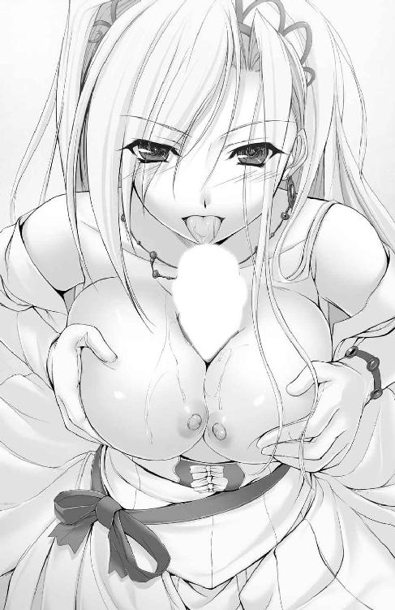
勢いの増した牡の突き上げに目を見開きつつも、快楽の証拠に滴る先走り汁を余さず啜り飲む。そんな恋人の健気な姿に、腰から背筋にかけての甘い痺れは一気に強まって、まぶたの裏に幾度目かの白熱が散った。
「はぁ、はっ、はぁぁ......っ！」
ぐちっ、ぐぢゅ、にゅぶりゅりゅりゅ......！
「んっ！ んーっ......ちぅ、ちゅっ！ んちゅぅぅぅっ！」
腰を回して、母乳をすくい上げ、先走りを混ぜ合わせてシャルロットの貪欲に吸いつき続ける唇へと、まるでリップクリームでもつけるように塗り込める。
甘んじて受ける彼女の蕩けた瞳に心を、ツンと尖った乳首の刺激に肉棒を溶かされながら。いよいよ迫り上がる爆発の予兆に、ひときわ肉傘を膨らませた。
（だ、めだっ、もう......っ！）
触れ合う恋人の肌の熱と、大きく膨れた肉の幹。そのうだるような熱っぽさが、蕩ける愉悦の中に紛れ込み、混濁する。
「ふちゅ......っ、ちゅ、ちゅぅぅっ、らひて......いいの」
「──ッッ～～～!!」
ドクリ──潤んだ青い瞳に魅入られるがまま。柔乳の谷間で咥えられた肉の先端が肉の悦びを、吠え叫ぶように爆発させた。
「んちゅぅっ！ ぢゅっ、ぢゅるろぉ......ぇぁは、んっ......ちうううううぅぅ～～～！」
その時に気づいた彼女の唇が窄まり、肉傘の裏を締めながら亀頭に絡めた舌を躍らせる。加えて柔乳がひしゃげながらみっちりと母乳まみれの肌で押し寄せてきて──とどめをさされた肉欲が、はち切れんばかりに腫れた幹の内側を駆け昇る。
「うぁっ、あああぁぁぁッ......!!」
──ど、びゅびゅぅぅッ！ びぐびゅっ！ ぶりゅッびぶぶ！ びゅッびゅぐうぅぅッ！
酔い痴れたように頬染める恋人の口中で、爆ぜた白濁が波を打つ。
「ごぷ......っ！ んっ！ んむぅぅっ......けぽっ、えっ、ふぅぅ......や、ぁ、こぼれちゃう......ぅぅっ！」
飲み下しきれなかった子種が、恋人の薄桃の唇を割って吐き出される。その、あまりに淫らな光景に、間髪入れず咥え直された亀頭への吸引刺激が加わって、肉の悦びは増幅。持続させられる。
「うはぁ......っ！ い、今敏感だか、ら、ぁっ！ あぉぉぅぅ！」
どく、どくんっ！ どぷ、どびゅぶりゅりゅぷぶ......っ！
「ごめん、なさい......ん、ちゅっ。今度は全部、こぼさずに......ぢゅちゅぅ～っ」
なおも続く腰の根元への痛切な快楽刺激。強すぎる肉悦に耐えかね、まぶたの裏で弾ける白熱はますます色濃く、悦に浸る意識まで塗り潰そうと増長する。膨れっぱなしの男根から止め処なく種を吐きながら、下肢がガタガタと情けなく震え始めていた。
健気な口ぶりと相反して、貪欲に亀頭を離さない淫婦がごとき恋人の、うっとりと惚けた表情に呑まれながら。紅潮した彼女の頬に、汗で貼りつく前髪に、そして母乳まみれの甘く熟れた乳肌に。大量の白濁をぶちまけていく。
「ご、めっ......止まらない、みたいだッ......～っ！」
びゅるぅぅぅっ！ びるっ！ びゅぐっ、びちゃびちゃぁぁっ！
申し訳なさで胸詰まりつつ、告げた。堰を切ったようにあふれる吐精の衝撃に全身の支配を奪われ、ひとりでに突き出た腰の先からは欲望の塊をこぼしていく。
「ふわ......あ......っ！ 哲平......今すごく可愛い顔、してる......ぅぅ」
彼女は顔を背けることもなく、乳の谷間で暴れ噴き出る白濁汁を余さず受け止め。少し悪戯っぽく微笑んで、からかうみたいな言葉を口にする。
「んっ......ふふっ。昨日までは、わたしがしてもらってばかりだったから......これからはたくさんお返ししなくちゃ。ね......♪」
「ぅ......っく！ だ、だからシャル。今は敏感っ、だっ、あッあぁぁ......！」
むぎゅうっと寄せ上げられた乳の圧力と、じくじくと染み出る母乳のぬめりとに押し負けて、肉欲は止め処なく、延々とあふれ続けた。
「んっ......れる......ぅっ。また、胸が張って、きちゃった、ぁ......」
「......また、搾ってあげる。いくらでも、何回でも......一緒に、気持ちよくなろ？」
いまだ続く絶頂の余韻が、シャルロットの舌が蠢くたびにぶり返し、腰が跳ね上がる。その都度濃く粘る白濁をすでに先発の種と母乳で白く染まった乳肌へと振り撒きながら、自然とそんな言葉がこぼれ出ていた。
このまま快楽の中に溶け込んでしまいたくなる。ひどく気だるく、なのにとっても幸せな心地のよさに心の中が満たされていく。
「うん。二人でもっと、一緒に......気持ちよくなりましょう」
細められた瞳が上目遣いに見つめてくる。これまでにも増して妖艶な色が青い瞳に差し込んでいて──汗と汁まみれの衣服を脱ぎ捨て、誘われるがままベッドへ、全裸で仰向けに寝転がった。
「それじゃあ......お邪魔する......ね」
ぎし──ベッドに上がり、またがるように脚を広げた彼女の股間に、視線を奪われる。ひらひらと揺れるスカートの奥に垣間見えたそこは、じっとりと湿って、もじつくたびにグジュグジュとイヤらしい音色を響かせていた。
「あ、あんまりじっと見られると、恥ずかしいわ......」
言いながら、けれども昂奮した様子で身を揺する彼女の右手が、ドレスのスカートをめくり上げる。へその上あたりで丸めて押さえ込まれた純白の衣装の下からは、また純白。レースのあしらわれたショーツはやはり湿りきっていて、恋人の割れ目をくっきりと中央に浮かび上がらせている。
（あの奥に、シャルの......俺の子供が......っ！）
甘美な妄想は、一発吐き出したばかりの肉欲棒に再度灼熱のたぎりを注入し、甦らせた。ヒクつく先端が、ゆっくりと下りてきた恋人の尻肉と接触する。
「ひゃぁんっ。哲平ったら、もうこんなに......？」
「う、うん......なんだか、今日は......何回でもできそう」
余力を示すがごとく勃起した肉幹でペチペチと彼女の内腿を叩いて、亀頭に奔る甘い痺れに悶えた。自然持ち上がる腰を押さえ込むように、彼女の手が下腹へと押し当たり、ぐっと体重を乗せた尻肉がのしかかってきて──。
「ふぁ、あッ......はい、る......っ、んぅぅんんん～っ！」
ず、ぷぅっ......！
潤みきったぬかるみに先っぽを食まれ、内部のねっとりと粘る熱気に身震いする。エラの張ったカリ首がむりむりと恋人の股肉を押し拡げて割り入る、甘美な衝撃に瞬く間に溺れた。純白の下着が脇に寄せられて垣間見えた、結合部を覗き込む暇すら与えられず。
「はぁぅっ、あ、あぁぁっ......！」
トロトロにほぐれた膣肉。無数のヒダがたった一本の剛直に我先にと飛びつき、絡んで、ギュウギュウと引き絞られる。脳天にまで白熱が突き抜けて、思わず噛み締めた歯の奥からみっともない喘ぎ声が噴き漏れた。
「は、ぁ......っ、ふ、すごぉ......いぃ......っ」
どっしりと腰を下ろしたシャルロットの尻肉が、肉棒の根元に生えた茂みに埋もれ、くすぐったそうによじれている。感極まって舌を突き出し、羞恥に染まる瞳を閉じて、彼女もまた胎の奥に埋まった異物の存在感に酔い痴れていた。
「てっぺぇ......っ、さっきより、おっきぃ......よぉ」
はしたなくガニ股気味に開いた恋人の両腿が、ぷるぷると頼りなく震えていた。
「シャルだって......っ、すごく吸いついてきて、俺っ......どんどんエッチな気持ちになっちゃうよ......！」
絡みつく膣ヒダの猛攻に押し負けまいと、快楽でパンパンの肉幹をいっそう膨らませながら、騎乗位でつながる恋人を見上げる。汗ばんだ胸板にすがりついてくる彼女の手のひらも、じっとりと湿り気と熱を帯びていた。
純白のドレスからこぼれ出た乳肉はたゆんと揺れ、重力によって垂れているせいでひと回り。いや、ふた回りはサイズアップして見えた。その先端からは再び母乳が──昂奮して硬く尖る小ぶりな乳頭からじわじわと染み出している。
（シャルのおっぱい......は、あぁ......っ）
触りたい。彼女のぬくもりを、母性の象徴である胸からじかに受け取って、思う様感受する。誘惑に抗うことなく伸ばしかけた手の動きの先を読んで、恋人の口が開く。
「搾って......？」
彼女はすべてわかっているからと、手に手を取って自ら胸先にまで導き入れてくれた。
「シャル......ぅっ！」
コリコリとしこった乳首の感触が手のひらに伝わり、一気に腰の根元で熱が溜まる。
「きゃっ、あぁんっ、中で......大きく、なってるぅぅ」
溜め込んだ熱を吐き出すために膨張した、肉傘の凶悪なくびれで膣肉を掻き分けられ、シャルロットが喉を反らして煩悶した。胎内からの圧迫に耐えるように、溺れるように、震える口元からは快感を忍ばせたか細い喘ぎと、糸引いたよだれの雫がこぼれ落ちる。
「どんどん、出てくるよ......シャルのおっぱい」
真下からわしづかみにした左右それぞれの手のひらに、ぬるめの乳汁が染みていた。手に余る乳肉をなで擦るように刺激して、リズミカルに引き絞る。そのたびに母乳がこぼれ、恋人の喘ぎは大きくなり、同調したように引き締まる膣内で牡肉は歓喜の声を張り上げる。
「はぁ......っ！ く、ぅぅ......ゆっくり、動かすから......」
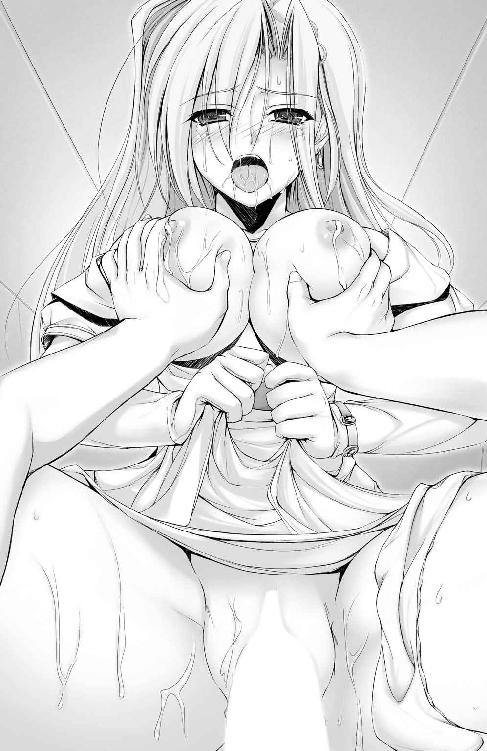
みっちり詰まった膣内で吐き出した、先走り汁のおかげでかろうじてわずかな抽送が可能になってくる。それほどまでに、貪欲に絡みつく膣肉の締めつけは強烈で、気を抜けばすぐにでも射精してしまいかねない状況が続く。
「んぁん！ あ、あぁっ！ うん、溶けちゃうくらい、して......！」
いきなり最高潮なのは、彼女も同様だった。惚けた瞳を欲情させてうっとりと細め、垂れ下がった眉根に貼りついていた前髪が、震えに乗じて剥がれ、はらりと舞う。口元から垂れたよだれが母乳まみれの乳の谷間に滴って、いっそうヌラリと淫靡な化粧を施してくれた。
グチグチと結合部からは淫猥な粘濁音が響く。肉体的な快楽を、視覚的、聴覚的な刺激がよりいっそう盛り立ててくれる。
「う、あ、あっ！ 熱い......シャルの中から漏れてきてるっ......」
硬く張りつめた肉棒を濡れた恋人の秘芯に押し込めるたび。そして貼りつくヒダをゆっくりと引き剥がし、甘美で砕けそうな腰をやっとの思いで引き抜くたび。潤んだ膣穴の奥からは熱く蕩けた蜜汁が漏れ出て、肉幹を伝い、根元まで滴り湿らされる。
内部の熱気をそのままパックした蜜汁の火照り具合に驚き、浸された肉棒はますます硬く、彼女の中で反り返っていく。
「ひぁぁぁぁっ......わたし、もっ......！ わたしもよっ、中がとっても熱くて、し、幸せなのぉっ」
胎内を占拠される恋人は、満たされた表情を反らして身悶える。おたがいの熱が相手を昂らせてはさらなる欲熱を引き出し、二人、揃って高まってゆく。
「あぁ、俺も、シャルと同じ気持ちだよ......っ！」
とても幸せで満ち足りた感情に支配され、若い牡肉は貪るように恋人の膣を掘り進む。吸いついて離れたがらない肉ヒダを強引に引き剥がしては、また深部で待ち構える新たなヒダの歓迎を受ける。くすぐるように絡んでくるものもあれば、最初から肉棒を食むように強烈な締めつけと吸引を加えてくる箇所もあり、突く角度を変えるたび肉棒に新鮮な刺激が奔った。
「あっ......あん、んっ、ふ、ぅぅん！ てっぺ......脱がせ、て......？」
突き上げられて煩悶する彼女がうわごとのように、汗で貼りつくドレスを脱がして欲しいと懇願した。応じて彼女のドレスをビスチェごと引き下ろし、すでにシャルロット自身の手でしわくちゃのスカート部分と合わせ、腰のあたりでまとめてしまう。
「しわだらけになっちゃったね......」
「いい、の......綺麗なドレスも、豪華なディナーも、もういらないもの......今は、哲平が......あなたがそばにいてくれる。そのことがわたしの一番の幸せよ......？」
束の間、腰の動きを止めて見つめ合い、息を整える。汗だくの素肌を晒したシャルロットの肩先が、寒さに怯えるように震えた。
それを見咎めてすぐに、いてもたってもいられなくなり、上体を起こす。
「きゃっ......ふぁぁっ！」
起き上がりざまに揺すられた恋人の身体が切なげに反り、奥を小突かれた彼女の腰が小刻みな痙攣を繰り返す。不規則な締めつけにおびやかされる肉棒からの、甘美な痺れに耐え忍びながら、目の前にある白い肩先をそっと抱き寄せた。
対面座位の体勢となって、また相手の高揚を探るため、視線を絡め見つめ合う。
「や、ぁん......哲平の、中でパンパンっ......赤ちゃん、驚いちゃうぅぅ......！」
咎めるような口ぶりとは正反対に、甘えるみたく肌をすり寄せしがみつく。そんないじらしい姿に胸打たれ、再度視線の先で揺れる彼女の乳肉を左右同時にもみ潰した。
「ひぁっあぁぁぁんっ！」
柔い、指先を吸いつけて離さない乳肉を、円を描くようにして周囲からこね、乳頭の隆起を煽る。次いで乳首の周りをくすぐるように引っ掻く。
「て、てっぺ......？ 切ない、わっ......は、早くぅぅ」
もじつく彼女の尻の下。結合部で掻き混ぜられ、泡立った蜜汁があふれておたがいの股間をドロドロに濡らしていた。上下のみならず、前後、左右。昂奮に溺れるにつれて大胆さを増したシャルロットの腰の動きに翻弄され、股間が快感一色に染められる。
「ッッ......ごめんね、シャル......っ。あんまり、シャルの腰がエッチだから......ぁぁっ」
肉棒の根元が引き絞られたかと思えば、幹がねっとりとした蜜で覆われ。幹がヒダの歓迎を受けて震えれば、亀頭に貼りついた子宮口がチュウチュウと染み出たカウパーを啜り取る。恋人の動きに乗じて肉欲は一足飛びに高まり、彼女の乳肌を揉む指にも力がこもる。
けれど、まだ。ビンビンに尖った薄桃の乳頭部分には、指先一つ触れてあげなかった。
「ひぅっ！ う、ぅんっ......もうぅっ、いじわるっ......。うぅ、き、嫌いに、なっちゃうんだからぁっ......！」
拗ねてるだけ。冗談だってことぐらいは、蕩けるように乱れた恋人の表情を見ればわかる。それでも罪悪感に突き動かされ、恋人の腰により強く腰を押しつけた。
「っあぁ......！ シャ、ルっ......」
深まった結合部から、強烈な肉の快楽が湧いて出て、震えた肉棒が子宮口にすり寄り、たっぷりと濃い先走り汁をすり込んでゆく。
「ひゃぁぁんっ！ ふ、深いの、あっあぁぁっ！ ひっ!? あ──―っ！」
散々焦らしておいてからゆっくりと指の腹で押し潰した、勃起乳首が震えて跳ねる。
ぶしゅっ......ぷっしゃぁぁぁぁ！
乳白色の母乳が手のひらにぶち当たり、指と指の隙間から勢いよくしぶく。甲高く、陶酔した叫びに合わせ、何度も、何度も。噴き出る母乳の勢いは一向に衰えず、同時に肉棒を食い締める膣肉の圧力をも増していく。
「～～～ッッ!!」
求めに応じれば応じるだけ、彼女もまた喜悦に溺れながら、すっかりたぎった肉欲棒の求めに応え、膣内を蠢かせてくれる。
大量の精液を充填して張りつめた、快楽漬け状態の肉幹を受け止め、ねっとりと隙間なく包んでくれた。たっぷりの蜜をまぶされて、とうの昔に射精準備の終わった肉幹を愉悦が貫いてゆく。
「ひっ、あ、ぁっ！ んっ、ふ、ふぁ！ てっ、ぺ......わた、わた、し、ぃっ、ま、また......ぁぁぁぁっ！」
我慢できずにズンズンと、真下から膣内を掘り進み、捉えた子宮口を目一杯突き上げた。
今また臨界を迎えようとしている肉幹に、ビキビキと限界を伝える青筋が浮く。収まりきらない肉悦が、あまりにも濃い、糸引く先走り汁となって恋人の膣内に噴き出て、こびりつく。それに合わせて彼女の声のトーンも跳ね上がり、膣肉はリズムをいっそう乱してがむしゃらに、ひっきりなしに牡肉へとしがみついてきた。
「おっぱいもぉっ、ジンジンするのっ、切なくて、でもすごくっ......恋しくてぇぇっ」
きゅっ、きゅぅぅっ......ぷしゅっ、びゅっ、びゅぴゅぅぅぅ！
瑞々しく、汗すら弾く乳肌に指を食い込ませ、こねくるようにして搾乳する。
「ひゃぁぅ！ ミルクまた、れてるっ......ぁは、あっ、あァァァ......ッッ！」
「んっ......ぢゅっ、ぢゅづづづづっぢゅりゅりゅぅぅ～～～！」
ろれつの回らなくなった唇と、乳白色に濡れた乳肉。迷った末に、右の勃起乳首へと唇を寄せ、口内になみなみと、たぷつくほど恋人の乳汁を吸い上げた。
「吸っ、て......んっ、くふぅぅぅんっ！ そこっ......哲平と赤ちゃんの、だから、たくさん、たくさんっ......幸せにしてぇぇ......っ！」
かすれた声を張り上げて、ぎゅっと抱きついてくる。胸を張るように差し出された乳頭はコリコリと硬く、舌先で転がせばすぐにビクリと飛び跳ね、蜜を漏らす。軽く噛むだけで、甘えたみたいにすり寄りながら口内を乳白汁で満たしてくれた。
（また......一緒にっ、二人で......一緒にっ！）
シャルロットの、どこもかしこも柔らかい肢体を受け止めて、ひたすらに下から腰を突き上げ続ける。
もう、すぐそこにまで差し迫る、二人揃っての絶頂。心と身体に染みついた至福に向けて、見つめ合う二人の気持ちは一緒だった。
「ふ、っ、ふぅぅっ......シャル、俺っ......！」
「うん、う、んっ......わた、しもっ、も、ぅ......っ！」
ギシギシとベッドが鳴る。汗と嬉し涙とで潤んだ瞳に映る、天井の照明がゆらゆらと揺らめいて見えた。なのに、恋人の嬉しそうな顔と、胸をつんざく甘い喘ぎだけははっきり、鮮烈に受け止めることができて。
脇によじれたレースショーツの奥からじゅわりと染み出る恋人の蜜汁を、また押し戻すように蜜壺を掘削する。その間も、指を食い込ませたままぷるんと弾む、魅惑のバストへの愛撫は止まらなかった。
「ひぁはっ、あ、ひゃぁぁぁ......っ、ら、め、もっ......んふぅぅぅぅ～～～！」
指と指の谷間からむにゅりとはみ出た乳肉に、あふれた母乳が滴った。時折なめ上げてやりながら、口に含んで、喘ぐ彼女の唇にキスをする。自身の漏らした母乳を味わった、シャルロットの舌先がむしゃぶりついてきて、唾液が絡まり、男女の舌先が糸の橋でつながっていた。二人、揃って酔ってゆく。
（シャルと......っ、このま、ま、ぁぁっ......！）
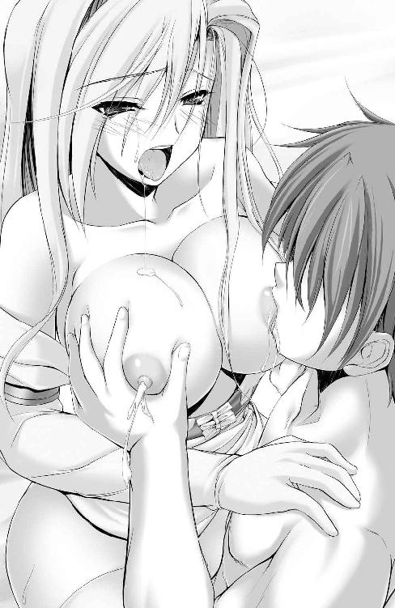
このまま、溶け合ってしまいたいと、強く願った。
肉ヒダはいっそうざわめいて牡肉を食い締め、先走りを啜っては蜜を噴く。潤んだ膣内でグポグポと攪拌され泡立つ混合液の、淫らな音色が奏でられる。強烈な摩擦と温みに、腰の芯から迫り出した射精の予兆は、一気に頭のてっぺんまで突き抜けた。
「っは、あぁぁぁっ！ シャルっ......一緒にッッ！」
応じるようにキュウとすがりついてきた、彼女の太ももに腰を押さえ込まれ、同時に膣壁にみっちりと肉幹が閉じ込められる。
厳しい膣肉の収縮に、もう少しも前に進むことすらできないのに、彼女の両脚を貼りつけたまま、腰の動きは止まらなかった。すでに先端で捉えていた子宮口を、こじ開けんばかりに打ち据えて。
「ん、んんぅっ！ てっ、ふぇっ、わら、ひぃっ......ふわふわ、ひてるろっ、も、もぉ！ ひ、あぁ！ きちゃうっ......うぅんっ、んあぁ！ 大きいのがぁぁぁっ！」
甘噛みした左乳首を引っ張りながら解放して、しきりに限界を訴える唇に再度己のそれを重ねる。背中にしがみついてきた恋人の指が爪を立て、わずかな痛みと幸せなぬくもりを継ぎ足してくれた。
「んむぁ......!? んっ......ふぁ、あむぅぅ......っ」
ぢょぼ、ぢょぼぼぼぼぼっ......。
ぶるりと震え、羞恥と隠しきれない昂奮とを含む熱い吐息が重なる口内を満たしてゆく。白いシーツと、重なる肌と肌の隙間を伝う恋人の尿液が、ぬくもりでもって心の底まで満たしてゆく。
むずがるようにうねる膣肉に絞られ、勃起の根元から抑えようのない悦びが、塊となって噴き出して──この上なき至福が、たぎる欲熱を後押しするように全身を巡り、身も、心も充足していった。
「んぷっ......み、見ちゃやぁ......！ んっ、ふぁ、あぁ！ と、止まらなっ、ふあっぁぁああぁ～～～！」
どくんっ──。恋人のあられもない姿に昂奮して、肉棒が三度、ぬかるんだ膣内で鼓動を放つ。噴いた先走りの濃厚さに応じて跳ねる、恋人の腰が淫らにくねり、よりいっそう熟成された子種汁が幹の内部を駆け上がる。
「くっ、ぅぁ、ぁぁぁ......ッ！ はしたないところ、もっ......全部、シャルの全部が好きだから......！」
だから見つめていたいのだと、視線で伝えた。うつむいた恋人の顔が恥じらいと恍惚と、嬉しさをない交ぜにした複雑な顔をして、妖しい美しさを醸し出していて──見惚れたまま本能に突き動かされ、腰を回して彼女の胎内を掻き混ぜる。
蜜まみれの膣内で膨れ上がる、肉欲のたぎりが爆ぜる瞬間。唾液と母乳で濡れた両乳肉がひしゃげるほどに強く抱き締めて、最後の力を振り絞り、恋人の中心を貫く。
ず、ぶぢゅぅぅぅぅぅッッ!!
「んはあぅうぅぅぅぅッッ！ ひ、ぁっ！ ぁ......ひゅぅっ、んっ、んひあ！ あああ！ あ──―っ！」
びゅるぅっ！ びゅぶぶっ！ ぶぢゅちゅぅぅぅぅ！
搾られた母乳が、少女の歓喜とともにあふれ出す。過呼吸に陥って波打つ彼女の胎に、みっちりと食いつかれた肉幹が根を上げて、声なきうめきを漏らしていく。
「ぐっ......！ シャ、ルぅぅぅ......ッッ！」
視界を染める白に、少年が見惚れるよりも一寸早く。彼女の尻がドスンと下りてきて、ぴったりくっつき合ったまま、一番奥で──。
「ひぁ......！ ぁは......ぁぁ！ てっ、ぺ、ぇっあぁぁぁ！ ん！ んぅっ！ あ！ 愛して、るわ。わ、わたっ、しっ、いっいあぁぁっ！ んあッぁぁああぁぅぅ～～～っ！」
ど、ぶびゅるぅぅぅっ......！
張り裂けんばかりの嬌声に蕩かされながら、弾けた白熱がまぶたの裏に焼きついた。喜悦に震える腰を目一杯突き出し、埋もれた尻肉の狭間、恋人の胎内で、ドロドロに焼けた白濁を爆ぜさせる。
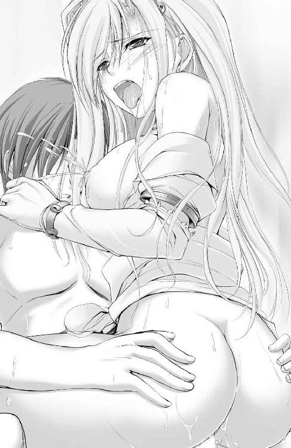
「あ、はぁ......っ、あひっ、あっあぁぁ──―っ！ な、かでっ、ぇぇぇっ......!!」
背を反らせた彼女の唇が離れて、解放されるなり甲高い嬌声を吐き漏らす。
どぶるっ、びゅぶぶぶぶぶっ！ びゅぐっ、びゅぐぐ！ どくっどくどぐぅぅぅぅぅ!!
ヒクヒクとうねる膣肉に挟まれて、ぬめり気に包まれた肉幹全体が切ない衝動に駆り立てられ、止め処なく肉欲の塊を噴き漏らしていった。
汗の溜まるシャルロットのへそまわり。下腹が小刻みに震えている。合わせて引き攣れる肉ヒダの群れに牡肉はくすぐられ、またドプリと随喜の中で子種を吐いた。
「ひぁ、ぁっ！ あ......！ てっ、ふぇいぃぃ......っ！ ふぁ！ やっ、あはぁぁっ......またぁ、出るぅぅ......ッッァ、ぁはぁァァァァ～～～!!」
びょるっ！ びゅっぶぷぷ！ ぢょろっ......ぢょぼぼぼっ......。
乳白汁と黄ばんだ尿液とを噴き漏らし、快楽の高みに上り詰めた少女の膣肉が収縮する。
「ぅう......ま、だ、俺もっ......出る......ぅっ！」
何度も繰り返し締めてくる恋人の中へと、溜め込んだ欲望と愛しさと、諸々の感情すべてを吸い絞られていく。
「ひぅ、ぁぁ......まだ、中で震えてる、ぅっ。好き......っ。大好きよ......っ、てっぺ......！ ひぁ、ァッ......あぁ、愛して、るっ......ぅぅぅっ！」
訪れた絶頂の大波が、鼓動を響かせるたび。こりこりとした感触の子宮口に吸いつかれた亀頭から、啜り飲まれるように堰を切って白濁の塊が噴き出てゆく。肉の悦びに打ち震え、精を吐く。たがいに抱き締めた肌のぬくもりと押しつけ合った胸の鼓動とを感じ合い、満ち足りた心根もまた、打ち震えていた。
どくっ、ぼびゅるっ......びゅっ、びゅぶ......ぅ......。
「ふぅ......ぅぅっ、ぁ......ぁ──―......っ」
波状の快感が寄せては返すように少しずつ、少しずつさざ波へと変わっていく。肉幹にしがみつく膣壁の蠢きも徐々に小さく、間隔を広げさせていった。
「ッ......俺も、シャルのこと......大好きだよ」
名を呼べば、まだ荒い吐息を吐きこぼす唇の代わりに、小刻みにきゅうきゅうと蠕動する膣壁が応えてくれる。
その余韻を愉しもうと、そっと恋人の肩を抱いていたのだけれど──。
「ふぅ......ぁぁ......う、うぁっ！ シャ、シャルっ!?」
「ん、ふぁっ！ ん、んんっ！ や、ぁぁっ、擦れる......ぃいィ......ッ！」
まだ収まる気配なく種を吐き出し続ける、敏感すぎる状態の肉棒が縦に左右によじれまくる。腰を下ろしてみっちりとつながったままのシャルロットの腰が、大胆にくねり、ひねられ、円を描くように揺すられた。その動きに呑まれる形で溺れた肉幹から、うねる膣壁めがけ、吸い出されるように噴き出た喜悦の濁液がぶち当たる。
どぶびゅっびゅぐぶぢゅぶびるるるるっ！
結合部からは、収まりきらない白濁が蜜汁と混じって、泡立ちながら滴り落ちていた。
（ど、どんだけ出てっ......っ、ぅはあああぅぅぅぅぅ......っ！）
無意識のうちに腕の中に柔らかな肢体を抱き寄せ、しがみつくように恋人の豊かな胸の谷間へと顔をうずめる。喘ぎ声を聞かれるのが恥ずかしかったから。あるいは気だるい甘美な時間を彼女の胸の中で過ごしたいと願った、そのせいもあったかもしれない。
「んひ......っ、あっ！ あぁぁ......っ、わらひ、おなかの中まれてっふぇいに......なっれ、るのぉ......っ」
腕の中でビクビクと彼女の身体が跳ねる。なのに掻き混ぜる腰の動きはとどまらず。二人分の荒い吐息が、男女の汗と体臭にまみれた部屋に響く中。グチグチと淫らな音色が淫靡な色どりを添え続ける。
やがてゼンマイが切れた玩具のように動き疲れ止まってしまう、その時まで。二つの身体は隙間一つなく抱き合い、幸せな時を確かめるように絡まり合う──。
──ちゃぷ......。
「はぁ......生き返るぅぅ」
「くす......哲平ったら。なんだかおじさんみたい」
連続五度（風呂場に入ってからも二発ほど）の性交を終えて、部屋に備えつけの湯船に浸かる。腕の中にすっぽりと収まる形で腰を下ろし、背中を預けてきてくれた恋人に反論する気力すら残ってなくて、ただただ疲れた笑顔を差し向けるにとどまった。
「......おなかは、だいじょうぶ？」
波打つ湯船の透明な水面に透けて映る、恋人の下腹部を凝視する。妊娠したとの誤解を持ったまま、心配もあって見つめたのだけれど、羞恥心の強い彼女は頬を染めて顔をうつむかせてしまった。
「......ちょっとだけ、胸がまた切なくなっちゃってる、かも......」
「また、張ってきちゃったんだ。じゃあ」
また搾ってあげようか、とたずねる前にもう、恋人のたわわな膨らみが二つ。揃って手元にまで差し出され、苦笑する。
（ほんと、これから毎日疲れて眠ることになりそうだ）
でも、そんな幸せもいい。
「じゃあ......また、搾ってくれる？」
腕の中でいたずらっぽく微笑む恋人と顔を見合わせ、抱き寄せた柔らかな存在感をしみじみと確かめることができた。
「......いろんなものをなくして、でも、哲平がこれからはずっと一緒にいてくれる。だから......絶対に後悔してない。今、大好きなあなたに誓います」
「じゃあ、俺も。大好きなシャルに誓って、後悔させないように頑張るよ」
おたがいに恥ずかしげもなくこんな告白ができたのも、熱めの湯にのぼせかけていた、そのせいも少なからずあっただろう。
これから先の困難を、二人で一緒に乗り越えていく。まだまだ未熟な子供同士、想像を超える事態に直面するかもしれない。それでも、二人なら。彼女の笑顔が傍らにあれば、なんとかなってしまいそうな、そんな予感がしていた。
「たくさん、子供を作りましょう。にぎやかで、いつも笑顔の絶えない温かな家族を」
「うん......がんばる」
手を伸ばせばいつでもぬくもりを感じ取れる家族がいる。それは少年が育まれ、少女が憧れた、平凡だけれど貴重な環境。
「うふふ、お手柔らかにお願いします」
はにかんだシャルロットが濡れた髪ごともたれかかってきて、抱き留める腕に幸せな重みが加わった。絶対に、この幸せを離さない。
抱き寄せられた彼女のほうからも、居場所を見つけた子犬のような、甘えた仕草で肌をすり寄せてくれた。
そっと手繰り寄せた恋人の唇に、己のそれを重ねる。
「んっ......」
恋人の表情が見られないことを惜しく思いつつも目を閉じて、今夜幾度目とも知れぬ口づけを捧げた。窓の外では星空が瞬き、暗闇を照らし続けている。
「......桜が咲いたら、二人で......うぅん、子供と三人で見に行こう」
今年は無理かもしれないけれど、来年もある。これから、ずっと共に歩むのだから。
「一緒に春を見るんだって、約束したものね。それじゃあ、今年は二人で来年は三人。再来年は......ひょっとしたら四人かしら？ 楽しみだなぁ......」
結婚記念日には毎年キスをして、いやいや毎朝目覚めのキスをして──。幸福な未来へ向けた夢は膨らむ。そしてそれらはすべて現実のものになる。してみせると、腕の中の恋人に誓った。
恋人たちの夜は更け、やがて朝が来て──新たな旅立ちの時が来る、その時まで、二人手をつなぎ、ひとつのベッドで抱き締め合い、絡まって睦み合う。夢と希望を胸に抱き、同じ歩調で歩むことを約束して、夜が明けるまで飽くことなく繰り返し唇を与え合う。
「哲平、あなたに会えて、本当によかった......」
潤んだ青い瞳に吸い込まれながら、ふかふかの胸に抱かれ眠る夜。至福の寝心地を堪能して、明日からの日々に想いを馳せていく──。
共に歩み始めた日に交わした約束の通りに、並んで手をつなぎ、桜並木を歩く。
「今年も、綺麗に咲いたね」
「ええ、本当に......去年よりも、華やいでる気がするわ」
ぎゅっと手を握り返してきてくれる愛しき妻。かつて身に纏ったエレガントなドレスではなく、ありふれた、けれどセンスのいい黒のワンピース。ゆったりとした衣服に覆われたシャルロットの下腹部は、隠しきれないほどに膨らみ、そこに新たな命が宿っている事実を克明に告げていた。
「あ......」
「どうしたの」
「今、少しお腹の中で動いたみたい。この子も、桜の花が見えているのかしら」
嬉しそうにはにかむ伴侶に笑みを返し、物想いに耽る。
ほとんど着のみ着のままで駆け落ちしてから、もうじき二年。あの日は結局想像妊娠だったけれど、今は正真正銘、彼女の中に二人の愛の結晶が眠っている。そして交わした約束通り、今日、三人で花見へとやってきたのだ。
（あれから......本当にたくさんのことがあった）
嬉しかったこと、辛かったこと、すべてひっくるめて、今振り返ってみれば大切なことを学んだのだと、最近やっとそう思えるようになってきた。
「そういえばまだ言ってなかったわね。......卒業おめでとう、哲平」
「ん。ありがと」
膨らみが目立ってきたお腹をなでて、彼女が少女の日そのままの屈託のない笑顔で祝福してくれる。
シャルロットの強い勧めもあって働きながら夜間の学校に通い、そしてこの春卒業にまでこぎつけた。いくつか在学中に資格を取ったこともあり、つい数日前には勤めている店から、正社員登用してもらえるとの連絡を受けたばかりでもある。頼りなかった未来への道筋がまた固まった気がして、自然と歩調にも喜びがにじみ出ていた。
それもこれも、すべては愛しい妻と、もうじき生まれてくる我が子のため。二人分の笑顔を見つめていたい。その一心で努力し得た結果だった。
「シャルのおかげだよ」
自分一人であれば、きっと途中で諦めてしまっていた。弱い、自分一人であったなら。
シャルロットは、この二年でずいぶんと家事も上達し、もう一端の主婦そのものだ。今二人の背に降り注ぐ春の日の陽ざしに似た、ほんわかと温かい性格はそのままに、精神的にたくましくもなった。
（夜は......相変わらず甘えん坊だけど）
彼女自身は進学することもなく、内助に徹してくれている。
「あと少しだけ......苦労させちゃうかもしれないけど」
給料が上がって、生活が安定するまでは──上流階級の生活に慣れていたシャルロットにとって普通の人生を送ってきた人よりもずっと辛いことを強いると申し訳なく告げる。
すると、決まって彼女はこう言うのだ。
「この子のおしめを替えて、洗濯して、そのままぽかぽかお天気の下で子供と一緒にお昼寝して......どれも、プリンセスのままだったらできなかったことだもの。だから......わたし、今とっても幸せなのよ？」
思えば、どんなに辛い日々でも笑って過ごせるのは、愛しい妻の──シャルロットの笑顔が、初めて会った日から少しも陰ることなく、ずっとそばにいてくれたから。笑いの絶えない家庭。それは、亡き父母と過ごした少年の日の光景そのもの。そして妻となったかつてのプリンセス、シャルロットの夢見ていた光景でもあった。
「あなたはいつでもわたしのことを想っていてくれた。だからわたしも......大好きな哲平のそばで、ずっと笑って過ごせるの」
（......その笑顔は反則だよシャル）
思わず、人目もはばからずに抱き締めてしまいたくなる。
「......に、しなさいよっ！」
そんな二人の世界に入りかけていた恋人たちの見つめ合いを。唐突に行く先の方角から響いた、女性の声が打ち破った。
「ん......なんか前のほうが騒がしいな」
「なにか、楽しいことでもあったのかしら？」
なにかもめ事でもあったのではと心配する自分と正反対の感想を漏らした妻の、とことんな前向きさに苦笑ひとつこぼして、夫婦生活の中で成長した彼女のそうしたところに助けられてきたのだと再確認する。
事の次第を確かめようと目を凝らした、その視野の隅から現れたのは──。
「あぁ、まったくもう！ なんだってこんな時にまで取材に追われないといけないのよ！」
びしっとパンツスーツに身を包んだ、見るからに気の強そうな風貌に見覚えがあった。長く伸ばした黒髪を学生時代のように左右で結ぶのでなく、背中に流したロングヘアの女性。努めて引き締めた顔に少々の苛立ちを忍ばせ、それでもすぐに冷静さを取り戻して前を向く。
「申し訳ありません、聖華様。その......しつこく追ってくるもので振りきれなくて」
「全員追い払っておきましたから」
左に控えるおでこが特徴的な女性が心底申し訳なさそうに頭を下げれば、右に控えた長髪の女性がすかさず涼しい顔でフォローする。相変わらずの二人もまた、着こなしたスーツ姿が凛々しく映る。
「聖華さん......？」
「それに竹園さんと金子さん......!?」
夫婦揃って驚きの声を上げてしまったことで、名を呼ばれた三人が振り返る。五人の視線が交錯し、そして真っ先に反応したのはやっぱり、一番激情家の、彼女だった。
「あ！ 見つけたわよ有馬......じゃなかった。えぇと......」
「確か......小林です」
「そう、小林夫婦！」
綾乃のアシストを受けて現在の姓のほうを思い出した聖華が、ずいぶんと大人びた美貌に黒髪を舞わせ、慎ましやかな胸を張る。エリカの手から紙袋を受け取り、一拍置いて身なりと感情を整えてから歩み寄ってきた。懐かしい顔に、秀峰学園で過ごした日々が各々の胸に去来する。
「おめでとう、シャルロットさん。でも、できれば私たちにひとことくらい残していって欲しかったわ。おかげで探すのに二年もかかっちゃったんだから」
「聖華さん......ありがとう。ごめん、なさい......」
つないだ妻の手が小さく震えている。青い瞳からは止め処ない涙が、こぼれていた。
「俺が、悪いんだ。その足でシャルを連れ出しちゃったから」
「違うわ、哲平。ぐす......二人で、決めたことじゃない」
嬉し涙にむせぶ伴侶をかばったつもりが、反対に攻め込まれてしまい、むにゅりと妊娠後ひと回り大きくなった乳肉が押し当たる。
「あぁ、もう。あんまり見せつけないでくださる」
あきれ顔の聖華の肩の向こうで、綾乃はわずかに頬を染め、エリカが苦笑していた。
今やファッション界の寵児である聖華と、そのブランドで働く敏腕美人幹部である綾乃、エリカ。彼女たちの活躍は雑誌やテレビ等で伝え聞いている。
「今日は子供服の試作品をいくつか持ってきてるの。だから......ん、受け取りなさい」
けれど、今こうして相対していると、少しも有名人に会ったなんて気はしなかった。湧き上がるのは、共に学生時代を謳歌した友人たちへの懐かしさと、再会の喜びばかり。
「ちょ、調子狂うから、あんまりうるうるした目で見つめないでよねっ」
差し出された紙袋の中にぎっしり詰まった可愛い服の数々を見て、心遣いに感謝した。それから、相変わらず素直じゃない彼女の口ぶりに、自然と笑みがこぼれ出る。
「まだ、泣くのには早すぎるわよ。今日来たのは、私たちだけじゃないんだから」
「え？」
また、夫婦揃ってハモってしまい、仲間たちの苦笑を誘う。そして。脇の桜の陰から現れた、ブロンドヘアと凛々しき表情の変わらない、彼女に視線を奪われた。
「シャルロット殿、哲平......二人とも、元気そうで......よかった」
「シル、ヴィア......っ」
つないでいた手が激しく震え、訴えかける。妻の気持ちを察し手放した、直後にはもう彼女の身体は親友の腕の中。ぶつかるように飛び込んだシャルロットの身体を抱き留め、美しく成長した、礼装のシルヴィアが微笑む。再会に震える彼女の瞳にも、涙の光がきらめいている。
「えへへ......お兄ちゃんっ！」
どすんっ──友人が姉にしたのと同じように飛びついてきた、長い金髪の下の彼女の顔はずいぶんと大人びて。
「マリアちゃん。久しぶり......すっかり立派なレディになったね」
差し出された彼女の小さな手に、そっと唇を押しつけた。束の間、在りし日の社交界での出来事が頭をよぎる。
「これを。哲平殿とシャルロット殿にと、預かってきている」
「手紙......？ シャル、一体誰から。......っ！」
シルヴィアの手から受け取った二通の手紙。それぞれの宛名を確認して、シャルロットの瞳からまた大粒の涙がこぼれ落ちる。
「お父、様......アルフ......っ、ぅ......」
ぽそりとつぶやいた消え入りそうな声の震え。それが彼女の感情の揺らぎを、どんな言葉よりも雄弁に物語っていた。
「ここに二人がいるってこと、教えてくれたのは有馬のお爺様なんだよっ」
「お爺ちゃん、が......？ そっ......か」
祖父は、どうしてる？ 優さんは、元気でいるのか。たくさんのたずねたいことがあった。それをすべて察して、先手を打つのはやはり黒髪の元社交部代表だ。
「あんたのお爺さんは殺したって死なないくらい元気よ。あと、藤倉さんも相変わらず」
「......ありがとう、聖華さん」
手紙を読んでシルヴィアの胸で嬉し涙をこぼしているシャルロット。抱きつく胸が間近にないことを少し残念に思いながら、妻と同じように嬉し涙が頬を伝う。
「男が泣かない。さ、花見に行くわよっ。根津が昨日の晩から場所取りしてるはずだし」
「根津君が......はは、相変わらず、なんだ」
二年間の隔たりなんて、誰の胸にも存在していなかった。少しだけ成長して、けれど変わらないぬくもりを秘めた仲間たちに感謝する。
「この子は幸せね。だってこんなにたくさんの人に祝福されて生まれてくるんだもの」
シルヴィアと手をつないだシャルロットが歩み寄ってきて、空いた手を差し出してくれた。右手で彼女の手を取り、左手はマリアとつなぐ。後ろからせっつく聖華たちに笑みをこぼし、そしてみんな揃って桜並木を歩く。
一陣の風に揺さぶられた桜の枝から、薄桃色の花びらが散って──駆け抜けた先には、手を振る自称親友の姿。それぞれが満面の笑みをこぼして、歩んできた二年間と、これから歩む道を──夢を語らう。
輝いて見える仲間たちを見つめながら、自分たちだって負けてないと胸を張る。
「こんな陽だまりの下をみんなと......あなたと一緒に歩けて、今......本当に幸せよ」
（毎日キスをして、いつだってシャルと一緒に生きていこう）
舞い散る桜の花びらに祝福されて、幸せを噛み締めるみたいに地を踏みしだく。まだこれからも共に歩む、長い長い人生という道のりに立ち向かうため。
「この子の名前、わたしは哲平に考えて欲しいの」
「そうだな、それじゃ──」
決してつないだ手を、離さない。誓い合う夫婦に福音を授けるかのように。仲間たちの声が、桜に彩られて舞っていた──。
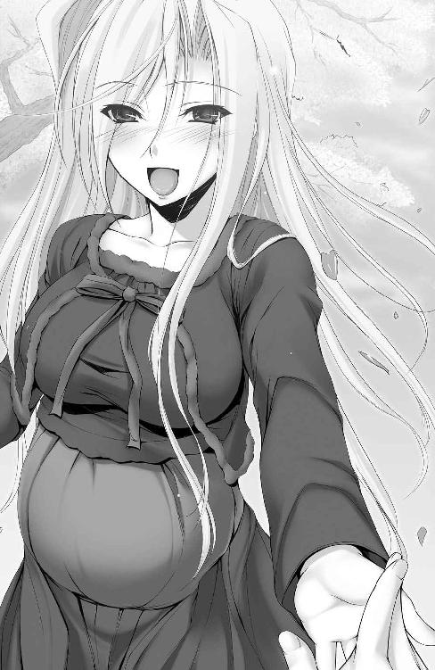
本作は二〇〇九年五月刊行の二次元ゲームノベルズ「プリンセスラバー！ シャルロット＝ヘイゼルリンクの恋路」の文庫化新装版となります。
ノベルズ版発売当時はテレビアニメ化直前ということもあり、ちょっと豪華な特別限定版（お風呂ポスターつきとテレカつきの二種類）も発売されました。
そのポスターに描かれたシャルロットさんがやたらめったら艶かしく、見本誌としていただいた分以外に自腹でもう一冊買ってしまったのも、今となってはいい思い出......。
肝心要の小説の内容としましては、おおむね原作ゲームのシャルロットルートに沿いつつ、多少の独自解釈も加えながらハッピーエンドを目指す流れとなっています。
エピローグにおいて、かつての学友らが一堂に会する。結ばれたヒロインは幸せいっぱいの妊婦さん。この二点を「小説シリーズのお約束にしよう」と決めたのも、実はこの巻からだったり。
気さくで、太陽のような温かさと笑顔を持ったプリンセス。大きなおっぱいの、年上のお姉さん。一途で危なっかしく、けれど常にまっすぐな、素敵なレディ。
そんな彼女との恋路を、ご堪能いただけたなら......嬉しいなぁ。
作中に登場する「ぼうしパン」は私の郷里の名産品です。
全国のお姫様スキーの皆様に溢れず、僕もお姫様大好きです。どんなお姫様が理想ですか？ と聞かれる機会があったら「シャルロット＝ヘイゼルリンクさんです！」と即答します。そんな同士の皆様のための一冊です。
二次元ゲーム文庫
プリンセスラバー！
シャルロット＝ヘイゼルリンクの恋路
著者 空蝉
原作 Ricotta
装丁 マイクロハウス
発行 株式会社キルタイムコミュニケーション
〒１０４-００４１ 東京都中央区新富１-３-７ヨドコウビル１Ｆ
著作権 ©Ricotta All Rights Reserved.©utsusemi 2012-2013
当ファイルは、二次元ゲーム文庫『プリンセスラバー！ シャルロット＝ヘイゼルリンクの恋路』（２０１２年９月30日 初版発行）に基づいて作成しております。
※本作品の全部あるいは一部を無断で複製・転載・配信・送信したり、ホームページ上に転載することを禁止します。本作品の内容を無断で改変、改ざん等行うことも禁止します。また、有償・無償にかかわらず本作品を第三者に譲渡することはできません。